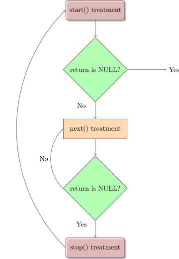

This chapter introduces the guide, outlines the basic development environment, and builds up from the first loadable module. The emphasis is on getting a working workflow in place before moving on to the broader kernel interfaces used by more capable modules.
The Linux Kernel Module Programming Guide is a free book; you may reproduce or modify it under the terms of the Open Software License, version 3.0.
This book is distributed in the hope that it would be useful, but without any warranty, without even the implied warranty of merchantability or fitness for a particular purpose.
The author encourages wide distribution of this book for personal or commercial use, provided the above copyright notice remains intact and the method adheres to the provisions of the Open Software License. In summary, you may copy and distribute this book free of charge or for a profit. No explicit permission is required from the author for reproduction of this book in any medium, physical or electronic.
Derivative works and translations of this document must be placed under the Open Software License, and the original copyright notice must remain intact. If you have contributed new material to this book, you must make the material and source code available for your revisions. Please make revisions and updates available directly to the document maintainer, Ching-Chun (Jim) Huang <jserv@ccns.ncku.edu.tw>. This will allow for the merging of updates and provide consistent revisions to the Linux community.
If you publish or distribute this book commercially, donations, royalties, or printed copies are greatly appreciated by the author and the Linux Documentation Project (LDP). Contributing in this way shows your support for free software and the LDP. If you have questions or comments, please contact the address above.
The Linux Kernel Module Programming Guide was initially authored by Ori Pomerantz for Linux v2.2. As the Linux kernel evolved, Ori’s availability to maintain the document diminished. Consequently, Peter Jay Salzman assumed the role of maintainer and updated the guide for Linux v2.4. Similar constraints arose for Peter when tracking developments in Linux v2.6, leading to Michael Burian joining as a co-maintainer to bring the guide up to speed with Linux v2.6. Bob Mottram contributed to the guide by updating examples for Linux v3.8 and later. Jim Huang then undertook the task of updating the guide for recent Linux versions (v5.0 and beyond), along with revising the LaTeX document. The guide now uses Linux v5.10 as its minimum supported baseline and aims to keep examples and guidance compatible across current long-term support kernels.
The following people have contributed corrections or good suggestions:
Amit Dhingra, Andrew Kreimer, Andrew Lin, Andy Shevchenko, Arush Sharma, Aykhan Hagverdili, Benno Bielmeier, Bob Lee, Brad Baker, Che-Chia Chang, Cheng-Shian Yeh, Cheng-Yang Chou, Chih-En Lin, Chih-Hsuan Yang, Chih-Yu Chen, Ching-Hua (Vivian) Lin, Chin Yik Ming, Chung-Han Tsai, cvvletter, Cyril Brulebois, Daniele Paolo Scarpazza, David Porter, demonsome, Dimo Velev, Ekang Monyet, Ethan Chan, Francois Audeon, Gilad Reti, Hao.Dong, heartofrain, Horst Schirmeier, Hsin-Hsiang Peng, Hung-Jen Pao, Ignacio Martin, I-Hsin Cheng, Integral, Iûnn Kiàn-îng, Jian-Xing Wu, Jimmy Ma, Johan Calle, keytouch, Kohei Otsuka, Kuan-Wei Chiu, manbing, Marconi Jiang, mengxinayan, Meng-Zong Tsai, Peter Lin, Roman Lakeev, Sam Erickson, Shao-Tse Hung, Shih-Sheng Yang, Stacy Prowell, Steven Lung, Tristan Lelong, Tse-Wei Lin, Tucker Polomik, Tyler Fanelli, VxTeemo, Wei-Hsin Yeh, Wei-Lun Tsai, Xatierlike Lee, Yan-Jie Chan, Yen-Yu Chen, Yin-Chiuan Chen, Yi-Wei Lin, Yo-Jung Lin, Yu-Chun Lin, Yu-Hsiang Tseng, YYGO.
Involvement in the development of Linux kernel modules requires a foundation in the C programming language and a track record of creating conventional programs intended for process execution. This pursuit delves into a domain where an unregulated pointer, if disregarded, may potentially trigger the total elimination of an entire filesystem, resulting in a scenario that necessitates a complete system reboot.
A Linux kernel module is precisely defined as a code segment capable of dynamic loading and unloading within the kernel as needed. These modules enhance kernel capabilities without necessitating a system reboot. A notable example is seen in the device driver module, which facilitates kernel interaction with hardware components linked to the system. In the absence of modules, the prevailing approach leans toward monolithic kernels, requiring direct integration of new functionalities into the kernel image. This approach leads to larger kernels and necessitates kernel rebuilding and subsequent system rebooting when new functionalities are desired.
Linux distributions provide the commands modprobe, insmod and depmod within a package.
On Ubuntu/Debian GNU/Linux:
1 sudo apt-get install build-essential kmod
On Arch Linux:
1 sudo pacman -S gcc kmod
To discover what modules are already loaded within your current kernel, use the command lsmod.
1 lsmod
Modules are stored within the file /proc/modules, so you can also see them with:
1 cat /proc/modules
This can be a long list, and you might prefer to search for something particular. To search for the fat module:
1 lsmod | grep fat
To effectively follow this guide, there is no obligatory requirement for performing such actions. Nonetheless, a prudent approach involves executing the examples within a test distribution on a virtual machine, thus mitigating any potential risk of disrupting the system.
Before delving into code, certain matters require attention. Variances exist among individuals’ systems, and distinct personal approaches are evident. The achievement of successful compilation and loading of the inaugural “hello world” program may, at times, present challenges. It is reassuring to note that overcoming the initial obstacle on the first attempt paves the way for subsequent endeavors to proceed seamlessly.
Using the X Window System. It is highly recommended to extract, compile, and load all the examples discussed in this guide from a console. Working on these tasks within the X Window System is discouraged.
Modules cannot directly print to the screen like printf() can, but they can log information and warnings to the kernel’s log ring buffer. This output is not automatically displayed on any console or terminal. To view kernel module messages, you must use dmesg to read the kernel log ring buffer, or check the systemd journal with journalctl -k for kernel messages. Refer to Section 4 for more information. The terminal or environment from which you load the module does not affect where the output goes—it always goes to the kernel log.
SecureBoot. Numerous modern computers arrive pre-configured with UEFI SecureBoot enabled—an essential security standard ensuring booting exclusively through trusted software endorsed by the original equipment manufacturer. Certain Linux distributions even ship with the default Linux kernel configured to support SecureBoot. In these cases, the kernel module necessitates a signed security key.
Failing that, an attempt to insert your first “hello world” module would result in the message: “ERROR: could not insert module”. If this message “Lockdown: insmod: unsigned module loading is restricted; see man kernel lockdown.7” appears in the dmesg output, the simplest approach involves disabling UEFI SecureBoot from the boot menu of your PC or laptop, allowing the successful insertion of the “hello world” module. Naturally, an alternative involves undergoing intricate procedures such as generating keys, system key installation, and module signing to achieve functionality. However, this intricate process is less appropriate for beginners. If interested, more detailed steps for SecureBoot can be explored and followed.
Before building anything, it is necessary to install the header files for the kernel.
On Ubuntu/Debian GNU/Linux:
1 sudo apt-get update 2apt-cache search linux-headers-`uname -r`
The following command provides information about the available kernel header files. Then, for example:
1 sudo apt-get install linux-headers-`uname -r`
On Arch Linux:
1 sudo pacman -S linux-headers
On Fedora:
1 sudo dnf install kernel-devel kernel-headers
All the examples from this document are available within the examples subdirectory.
Should compile errors occur, it may be due to a more recent kernel version being in use, or there might be a need to install the corresponding kernel header files.
Most individuals beginning their programming journey typically start with some variant of a hello world example. It is unclear what the outcomes are for those who deviate from this tradition, but it seems prudent to adhere to it. The learning process will begin with a series of hello world programs that illustrate various fundamental aspects of writing a kernel module.
Presented next is the simplest possible module.
Make a test directory:
1 mkdir -p ~/develop/kernel/hello-1 2cd ~/develop/kernel/hello-1
Paste this into your favorite editor and save it as hello-1.c:
1/* 2 * hello-1.c - The simplest kernel module. 3 */ 4#include <linux/module.h> /* Needed by all modules */ 5#include <linux/printk.h> /* Needed for pr_info() */ 6 7int init_module(void) 8{ 9 pr_info("Hello world 1.\n"); 10 11 /* A nonzero return means init_module failed; module can't be loaded. */ 12 return 0; 13} 14 15void cleanup_module(void) 16{ 17 pr_info("Goodbye world 1.\n"); 18} 19 20MODULE_LICENSE("GPL");
Now you will need a Makefile. If you copy and paste this, change the indentation to use tabs, not spaces.
1 obj-m += hello-1.o 2 3PWD := $(CURDIR) 4 5all: 6 $(MAKE) -C /lib/modules/$(shell uname -r)/build M=$(PWD) modules 7 8clean: 9 $(MAKE) -C /lib/modules/$(shell uname -r)/build M=$(PWD) clean
In Makefile, $(CURDIR) can be set to the absolute pathname of the current working directory (after all -C options are processed, if any). See more about CURDIR in GNU make manual.
And finally, just run make directly.
1 make
If there is no PWD := $(CURDIR) statement in the Makefile, then it may not compile correctly with sudo make. This is because some environment variables are specified by the security policy and cannot be inherited. The default security policy is sudoers. In the sudoers security policy, env_reset is enabled by default, which restricts environment variables. Specifically, path variables are not retained from the user environment; they are set to default values (for more information, see: sudoers manual). You can see the environment variable settings by:
$ sudo -s # sudo -V
Here is a simple Makefile as an example to demonstrate the problem mentioned above.
1 all: 2 echo $(PWD)
Then, we can use the -p flag to print out the environment variable values from the Makefile.
$ make -p | grep PWD PWD = /home/ubuntu/temp OLDPWD = /home/ubuntu echo $(PWD)
The PWD variable will not be inherited with sudo.
$ sudo make -p | grep PWD echo $(PWD)
However, there are three ways to solve this problem.
You can use the -E flag to temporarily preserve them.
1 $ sudo -E make -p | grep PWD 2 PWD = /home/ubuntu/temp 3 OLDPWD = /home/ubuntu 4 echo $(PWD)
You can disable env_reset by editing /etc/sudoers as root using visudo.
1 ## sudoers file. 2 ## 3 ... 4 Defaults env_reset 5 ## Change env_reset to !env_reset in previous line to keep all environment variables
Then execute env and sudo env individually.
1 # disable the env_reset 2 echo "user:" > non-env_reset.log; env >> non-env_reset.log 3 echo "root:" >> non-env_reset.log; sudo env >> non-env_reset.log 4 # enable the env_reset 5 echo "user:" > env_reset.log; env >> env_reset.log 6 echo "root:" >> env_reset.log; sudo env >> env_reset.log
You can view and compare these logs to find differences between env_reset and !env_reset.
You can preserve environment variables by appending them to env_keep in /etc/sudoers.
1 Defaults env_keep += "PWD"
After applying the above change, you can check the environment variable settings by:
$ sudo -s
# sudo -V
If all goes smoothly you should then find that you have a compiled hello-1.ko module. You can find info on it with the command:
1 modinfo hello-1.ko
At this point the command:
1 lsmod | grep hello
should return nothing. You can try loading your new module with:
1 sudo insmod hello-1.ko
The dash character will get converted to an underscore, so when you again try:
1 lsmod | grep hello
You should now see your loaded module. It can be removed again with:
1 sudo rmmod hello_1
Notice that the dash was replaced by an underscore. To see the module’s output messages, use dmesg to view the kernel log ring buffer:
1 sudo dmesg | tail -10
You should see messages like “Hello world 1.” and “Goodbye world 1.” from your module. Alternatively, you can check the systemd journal for kernel messages:
1 journalctl --since "1 hour ago" | grep kernel
You now know the basics of creating, compiling, installing and removing modules. Now for more of a description of how this module works.
Kernel modules must have at least two functions: a "start" (initialization) function called init_module() which is called when the module is insmoded into the kernel, and an "end" (cleanup) function called cleanup_module() which is called just before it is removed from the kernel. Actually, things have changed starting with kernel 2.3.13. You can now use whatever name you like for the start and end functions of a module, and you will learn how to do this in Section 4.2. In fact, the new method is the preferred method. The old init_module() and cleanup_module() have been deprecated for x86 systems with indirect branch tracking (IBT) enabled starting from commit 4fab2d76 in kernel 6.15, causing build failures. However, many existing examples still use these names for their start and end functions.
Typically, init_module() either registers a handler for something with the kernel, or it replaces one of the kernel functions with its own code (usually code to do something and then call the original function). The cleanup_module() function is supposed to undo whatever init_module() did, so the module can be unloaded safely.
Lastly, every kernel module needs to include include/linux/module.h. We needed to include include/linux/printk.h only for the macro expansion for the pr_alert() log level, which you’ll learn about in Item 2.
Introducing print macros. In the beginning there was printk, usually followed by a priority such as KERN_INFO or KERN_DEBUG. More recently, this can also be expressed in abbreviated form using a set of print macros, such as pr_info and pr_debug. This just saves some mindless keyboard bashing and looks a bit neater. They can be found within include/linux/printk.h. Take time to read through the available priority macros.
Important: These functions write to the kernel log ring buffer, not directly to any terminal or console. To view the output from your kernel modules, you must use dmesg or journalctl -k.
About Compiling. Kernel modules need to be compiled a bit differently from regular userspace apps. Former kernel versions required us to care much about these settings, which are usually stored in Makefiles. Although hierarchically organized, many redundant settings accumulated in sublevel Makefiles and made them large and rather difficult to maintain. Fortunately, there is a new way of doing these things, called kbuild, and the build process for external loadable modules is now fully integrated into the standard kernel build mechanism. To learn more about how to compile modules which are not part of the official kernel (such as all the examples you will find in this guide), see file Documentation/kbuild/modules.rst.
Additional details about Makefiles for kernel modules are available in Documentation/kbuild/makefiles.rst. Be sure to read this and the related files before starting to hack Makefiles. It will probably save you lots of work.
Here is another exercise for the reader. See that comment above the return statement in init_module()? Change the return value to something negative, recompile and load the module again. What happens?
In early kernel versions you had to use the init_module and cleanup_module functions, as in the first hello world example, but these days you can name those anything you want by using the module_init and module_exit macros. These macros are defined in include/linux/module.h. The only requirement is that your init and cleanup functions must be defined before calling those macros, otherwise you will get compilation errors. Here is an example of this technique:
1/* 2 * hello-2.c - Demonstrating the module_init() and module_exit() macros. 3 * This is preferred over using init_module() and cleanup_module(). 4 */ 5#include <linux/init.h> /* Needed for the macros */ 6#include <linux/module.h> /* Needed by all modules */ 7#include <linux/printk.h> /* Needed for pr_info() */ 8 9static int __init hello_2_init(void) 10{ 11 pr_info("Hello, world 2\n"); 12 return 0; 13} 14 15static void __exit hello_2_exit(void) 16{ 17 pr_info("Goodbye, world 2\n"); 18} 19 20module_init(hello_2_init); 21module_exit(hello_2_exit); 22 23MODULE_LICENSE("GPL");
So now we have two real kernel modules under our belt. Adding another module is as simple as this:
1 obj-m += hello-1.o 2obj-m += hello-2.o 3 4PWD := $(CURDIR) 5 6all: 7 $(MAKE) -C /lib/modules/$(shell uname -r)/build M=$(PWD) modules 8 9clean: 10 $(MAKE) -C /lib/modules/$(shell uname -r)/build M=$(PWD) clean
Now have a look at drivers/char/Makefile for a real world example. As you can see, some things got hardwired into the kernel (obj-y) but where have all those obj-m gone? Those familiar with shell scripts will easily be able to spot them. For those who are not, the obj-$(CONFIG_FOO) entries you see everywhere expand into obj-y or obj-m, depending on whether the CONFIG_FOO variable has been set to y or m. While we are at it, those were exactly the kind of variables that you have set in the .config file in the top-level directory of the Linux kernel source tree, the last time you ran make menuconfig or something similar.
The __init macro causes the init function to be discarded and its memory freed once the init function finishes for built-in drivers. For loadable modules, __init still places the function into an init-only section, do_free_init may still be observable during module loading even without __init. If you think about when the init function is invoked, this makes perfect sense.
There is also an __initdata which works similarly to __init but for init variables rather than functions.
The __exit macro causes the omission of the function when the module is built into the kernel, and like __init, has no effect for loadable modules. Again, if you consider when the cleanup function runs, this makes complete sense; built-in drivers do not need a cleanup function, while loadable modules do.
These macros are defined in include/linux/init.h and serve to free up kernel memory. When you boot your kernel and see something like Freeing unused kernel memory: 236k freed, this is precisely what the kernel is freeing.
1/* 2 * hello-3.c - Illustrating the __init, __initdata and __exit macros. 3 */ 4#include <linux/init.h> /* Needed for the macros */ 5#include <linux/module.h> /* Needed by all modules */ 6#include <linux/printk.h> /* Needed for pr_info() */ 7 8static int hello3_data __initdata = 3; 9 10static int __init hello_3_init(void) 11{ 12 pr_info("Hello, world %d\n", hello3_data); 13 return 0; 14} 15 16static void __exit hello_3_exit(void) 17{ 18 pr_info("Goodbye, world 3\n"); 19} 20 21module_init(hello_3_init); 22module_exit(hello_3_exit); 23 24MODULE_LICENSE("GPL");
Honestly, who loads or even cares about proprietary modules? If you do then you might have seen something like this:
$ sudo insmod xxxxxx.ko loading out-of-tree module taints kernel. module license 'unspecified' taints kernel.
You can use a few macros to indicate the license for your module. Some examples are "GPL", "GPL v2", "GPL and additional rights", "Dual BSD/GPL", "Dual MIT/GPL", "Dual MPL/GPL" and "Proprietary". They are defined within include/linux/module.h.
To reference what license you are using, a macro is available called MODULE_LICENSE. This and a few other macros describing the module are illustrated in the example below.
1/* 2 * hello-4.c - Demonstrates module documentation. 3 */ 4#include <linux/init.h> /* Needed for the macros */ 5#include <linux/module.h> /* Needed by all modules */ 6#include <linux/printk.h> /* Needed for pr_info() */ 7 8MODULE_LICENSE("GPL"); 9MODULE_AUTHOR("LKMPG"); 10MODULE_DESCRIPTION("A sample driver"); 11 12static int __init init_hello_4(void) 13{ 14 pr_info("Hello, world 4\n"); 15 return 0; 16} 17 18static void __exit cleanup_hello_4(void) 19{ 20 pr_info("Goodbye, world 4\n"); 21} 22 23module_init(init_hello_4); 24module_exit(cleanup_hello_4);
Modules can take command line arguments, but not with the argc/argv you might be used to.
To allow arguments to be passed to your module, declare the variables that will take the values of the command line arguments as global and then use the module_param() macro (defined in include/linux/moduleparam.h) to set the mechanism up. At runtime, insmod will fill the variables with any command line arguments that are given, like insmod mymodule.ko myvariable=5. The variable declarations and macros should be placed at the beginning of the module for clarity. The example code should clear up my admittedly lousy explanation.
The module_param() macro takes 3 arguments: the name of the variable, its type and permissions for the corresponding file in sysfs. Integer types can be signed as usual or unsigned. If you would like to use arrays of integers or strings, see module_param_array() and module_param_string().
1 int myint = 3; 2module_param(myint, int, 0);
Arrays are supported too, but things are a bit different now than they were in the olden days. To keep track of the number of parameters, you need to pass a pointer to a count variable as the third parameter. At your option, you could also ignore the count and pass NULL instead. We show both possibilities here:
1 int myintarray[2]; 2module_param_array(myintarray, int, NULL, 0); /* not interested in count */ 3 4short myshortarray[4]; 5int count; 6 module_param_array(myshortarray, short, &count, 0); /* put count into "count" variable */
A good use for this is to have the module variable’s default values set, like a port or IO address. If the variables contain the default values, then perform autodetection (explained elsewhere). Otherwise, keep the current value. This will be made clear later on.
Lastly, there is a macro function, MODULE_PARM_DESC(), that is used to document arguments that the module can take. It takes two parameters: a variable name and a free form string describing that variable.
1/* 2 * hello-5.c - Demonstrates command line argument passing to a module. 3 */ 4#include <linux/init.h> 5#include <linux/kernel.h> /* for ARRAY_SIZE() */ 6#include <linux/module.h> 7#include <linux/moduleparam.h> 8#include <linux/printk.h> 9#include <linux/stat.h> 10 11MODULE_LICENSE("GPL"); 12 13static short int myshort = 1; 14static int myint = 420; 15static long int mylong = 9999; 16static char *mystring = "blah"; 17static int myintarray[2] = { 420, 420 }; 18static int arr_argc = 0; 19 20/* module_param(foo, int, 0000) 21 * The first param is the parameter's name. 22 * The second param is its data type. 23 * The final argument is the permissions bits, 24 * for exposing parameters in sysfs (if non-zero) at a later stage. 25 */ 26module_param(myshort, short, S_IRUSR | S_IWUSR | S_IRGRP | S_IWGRP); 27MODULE_PARM_DESC(myshort, "A short integer"); 28module_param(myint, int, S_IRUSR | S_IWUSR | S_IRGRP | S_IROTH); 29MODULE_PARM_DESC(myint, "An integer"); 30module_param(mylong, long, S_IRUSR); 31MODULE_PARM_DESC(mylong, "A long integer"); 32module_param(mystring, charp, 0000); 33MODULE_PARM_DESC(mystring, "A character string"); 34 35/* module_param_array(name, type, num, perm); 36 * The first param is the parameter's (in this case the array's) name. 37 * The second param is the data type of the elements of the array. 38 * The third argument is a pointer to the variable that will store the number 39 * of elements of the array initialized by the user at module loading time. 40 * The fourth argument is the permission bits. 41 */ 42module_param_array(myintarray, int, &arr_argc, 0000); 43MODULE_PARM_DESC(myintarray, "An array of integers"); 44 45static int __init hello_5_init(void) 46{ 47 int i; 48 49 pr_info("Hello, world 5\n=============\n"); 50 pr_info("myshort is a short integer: %hd\n", myshort); 51 pr_info("myint is an integer: %d\n", myint); 52 pr_info("mylong is a long integer: %ld\n", mylong); 53 pr_info("mystring is a string: %s\n", mystring); 54 55 for (i = 0; i < ARRAY_SIZE(myintarray); i++) 56 pr_info("myintarray[%d] = %d\n", i, myintarray[i]); 57 58 pr_info("got %d arguments for myintarray.\n", arr_argc); 59 return 0; 60} 61 62static void __exit hello_5_exit(void) 63{ 64 pr_info("Goodbye, world 5\n"); 65} 66 67module_init(hello_5_init); 68module_exit(hello_5_exit);
If you need to validate a parameter or react whenever it changes, use module_param_cb(). This variant takes four arguments: the parameter name, a pointer to a struct kernel_param_ops, an argument pointer (typically the address of the backing variable), and the sysfs permissions. The callbacks stored in struct kernel_param_ops let you override the set and get operations instead of relying on the default helpers such as param_set_int() and param_get_int(). With non-zero permissions, the parameter is also exposed through sysfs so the same callbacks can run after the module has already been loaded.
1 static int watched = 42; 2 3static int watched_set(const char *val, const struct kernel_param *kp) 4{ 5 int ret = param_set_int(val, kp); 6 7 if (ret) 8 return ret; 9 10 pr_info("watched updated to %d\n", watched); 11 return 0; 12} 13 14static const struct kernel_param_ops watched_ops = { 15 .set = watched_set, 16 .get = param_get_int, 17}; 18 19 module_param_cb(watched, &watched_ops, &watched, 0644);
The full example below also overrides .get so that every sysfs read is logged:
1/* 2 * hello-6.c - Demonstrates module_param_cb() callbacks. 3 */ 4#include <linux/init.h> 5#include <linux/module.h> 6#include <linux/moduleparam.h> 7#include <linux/printk.h> 8 9MODULE_LICENSE("GPL"); 10MODULE_AUTHOR("LKMPG"); 11MODULE_DESCRIPTION("A module_param_cb() example"); 12 13static int watched = 42; 14 15static int watched_set(const char *val, const struct kernel_param *kp) 16{ 17 int ret; 18 19 ret = param_set_int(val, kp); 20 if (ret) 21 return ret; 22 23 pr_info("watched updated to %d\n", watched); 24 return 0; 25} 26 27static int watched_get(char *buffer, const struct kernel_param *kp) 28{ 29 int ret; 30 31 ret = param_get_int(buffer, kp); 32 if (ret >= 0) 33 pr_info("watched was read\n"); 34 35 return ret; 36} 37 38static const struct kernel_param_ops watched_ops = { 39 .set = watched_set, 40 .get = watched_get, 41}; 42 43module_param_cb(watched, &watched_ops, &watched, 0644); 44MODULE_PARM_DESC(watched, "An integer that logs every update"); 45 46static int __init hello_6_init(void) 47{ 48 pr_info("Hello, world 6\n"); 49 pr_info("watched starts at %d\n", watched); 50 return 0; 51} 52 53static void __exit hello_6_exit(void) 54{ 55 pr_info("Goodbye, world 6\n"); 56} 57 58module_init(hello_6_init); 59module_exit(hello_6_exit);
It is recommended to experiment with the following code:
$ sudo insmod hello-5.ko mystring="bebop" myintarray=-1
$ sudo dmesg -t | tail -7
myshort is a short integer: 1
myint is an integer: 420
mylong is a long integer: 9999
mystring is a string: bebop
myintarray[0] = -1
myintarray[1] = 420
got 1 arguments for myintarray.
$ sudo rmmod hello-5
$ sudo dmesg -t | tail -1
Goodbye, world 5
$ sudo insmod hello-5.ko mystring="supercalifragilisticexpialidocious" myintarray=-1,-1
$ sudo dmesg -t | tail -7
myshort is a short integer: 1
myint is an integer: 420
mylong is a long integer: 9999
mystring is a string: supercalifragilisticexpialidocious
myintarray[0] = -1
myintarray[1] = -1
got 2 arguments for myintarray.
$ sudo rmmod hello-5
$ sudo dmesg -t | tail -1
Goodbye, world 5
$ sudo insmod hello-5.ko mylong=hello
insmod: ERROR: could not insert module hello-5.ko: Invalid parameters
$ sudo insmod hello-6.ko watched=7
$ sudo dmesg -t | tail -3
watched updated to 7
Hello, world 6
watched starts at 7
$ cat /sys/module/hello_6/parameters/watched
7
$ sudo dmesg -t | tail -1
watched was read
$ echo 21 | sudo tee /sys/module/hello_6/parameters/watched
21
$ sudo dmesg -t | tail -1
watched updated to 21
$ sudo rmmod hello-6
Sometimes it makes sense to divide a kernel module between several source files.
Here is an example of such a kernel module.
1/* 2 * start.c - Illustration of multi filed modules 3 */ 4 5#include <linux/kernel.h> /* We are doing kernel work */ 6#include <linux/module.h> /* Specifically, a module */ 7 8int init_module(void) 9{ 10 pr_info("Hello, world - this is the kernel speaking\n"); 11 return 0; 12} 13 14MODULE_LICENSE("GPL");
The next file:
1/* 2 * stop.c - Illustration of multi filed modules 3 */ 4 5#include <linux/kernel.h> /* We are doing kernel work */ 6#include <linux/module.h> /* Specifically, a module */ 7 8void cleanup_module(void) 9{ 10 pr_info("Short is the life of a kernel module\n"); 11} 12 13MODULE_LICENSE("GPL");
And finally, the makefile:
1 obj-m += hello-1.o 2obj-m += hello-2.o 3obj-m += hello-3.o 4obj-m += hello-4.o 5obj-m += hello-5.o 6obj-m += hello-6.o 7obj-m += startstop.o 8startstop-objs := start.o stop.o 9 10PWD := $(CURDIR) 11 12all: 13 $(MAKE) -C /lib/modules/$(shell uname -r)/build M=$(PWD) modules 14 15clean: 16 $(MAKE) -C /lib/modules/$(shell uname -r)/build M=$(PWD) clean
This is the complete makefile for all the examples we have seen so far. The first five lines are nothing special, but for the last example we will need two lines. First we invent an object name for our combined module, second we tell make what object files are part of that module.
Obviously, we strongly suggest you to recompile your kernel, so that you can enable a number of useful debugging features, such as forced module unloading (MODULE_FORCE_UNLOAD): when this option is enabled, you can force the kernel to unload a module even when it believes it is unsafe, via a sudo rmmod -f module command. This option can save you a lot of time and a number of reboots during the development of a module. If you do not want to recompile your kernel then you should consider running the examples within a test distribution on a virtual machine. If you mess anything up then you can easily reboot or restore the virtual machine (VM).
There are a number of cases in which you may want to load your module into a precompiled running kernel, such as the ones shipped with common Linux distributions, or a kernel you have compiled in the past. In certain circumstances you could require to compile and insert a module into a running kernel which you are not allowed to recompile, or on a machine that you prefer not to reboot. If you can’t think of a case that will force you to use modules for a precompiled kernel you might want to skip this and treat the rest of this chapter as a big footnote.
Now, if you just install a kernel source tree, use it to compile your kernel module and you try to insert your module into the kernel, in most cases you would obtain an error as follows:
insmod: ERROR: could not insert module poet.ko: Invalid module format
Less cryptic information is logged to the systemd journal:
kernel: poet: disagrees about version of symbol module_layout
In other words, your kernel refuses to accept your module because version strings (more precisely, version magic, see include/linux/vermagic.h) do not match. Incidentally, version magic strings are stored in the module object in the form of a static string, starting with vermagic:. Version data are inserted in your module when it is linked against the kernel/module.o file. To inspect version magics and other strings stored in a given module, issue the command modinfo module.ko:
$ modinfo hello-4.ko description: A sample driver author: LKMPG license: GPL srcversion: B2AA7FBFCC2C39AED665382 depends: retpoline: Y name: hello_4 vermagic: 5.4.0-70-generic SMP mod_unload modversions
To overcome this problem we could resort to the --force-vermagic option, but this solution is potentially unsafe, and unquestionably unacceptable in production modules. Consequently, we want to compile our module in an environment which was identical to the one in which our precompiled kernel was built. How to do this, is the subject of the remainder of this chapter.
First of all, make sure that a kernel source tree is available, having exactly the same version as your current kernel. Then, find the configuration file which was used to compile your precompiled kernel. Usually, this is available in your current boot directory, under a name like config-5.14.x. You may just want to copy it to your kernel source tree: cp /boot/config-‘uname -r‘ .config.
Let’s focus again on the previous error message: a closer look at the version magic strings suggests that, even with two configuration files which are exactly the same, a slight difference in the version magic could be possible, and it is sufficient to prevent insertion of the module into the kernel. That slight difference, namely the custom string which appears in the module’s version magic and not in the kernel’s one, is due to a modification with respect to the original, in the makefile that some distributions include. Then, examine your Makefile, and make sure that the specified version information matches exactly the one used for your current kernel. For example, your makefile could start as follows:
VERSION = 5 PATCHLEVEL = 14 SUBLEVEL = 0 EXTRAVERSION = -rc2
In this case, you need to restore the value of symbol EXTRAVERSION to -rc2. We suggest keeping a backup copy of the makefile used to compile your kernel available in /lib/modules/5.14.0-rc2/build. A simple command as follows should suffice.
1 cp /lib/modules/`uname -r`/build/Makefile linux-`uname -r`
Here linux-‘uname -r‘ is the Linux kernel source you are attempting to build.
Now, please run make to update configuration and version headers and objects:
$ make SYNC include/config/auto.conf.cmd HOSTCC scripts/basic/fixdep HOSTCC scripts/kconfig/conf.o HOSTCC scripts/kconfig/confdata.o HOSTCC scripts/kconfig/expr.o LEX scripts/kconfig/lexer.lex.c YACC scripts/kconfig/parser.tab.[ch] HOSTCC scripts/kconfig/preprocess.o HOSTCC scripts/kconfig/symbol.o HOSTCC scripts/kconfig/util.o HOSTCC scripts/kconfig/lexer.lex.o HOSTCC scripts/kconfig/parser.tab.o HOSTLD scripts/kconfig/conf
If you do not desire to actually compile the kernel, you can interrupt the build process (CTRL-C) just after the SPLIT line, because at that time, the files you need are ready. Now you can turn back to the directory of your module and compile it: It will be built exactly according to your current kernel settings, and it will load into it without any errors.
With the toolchain and first examples out of the way, the focus shifts to the interfaces that let modules cooperate with the rest of the kernel. The following sections introduce execution basics and then move through the common entry points used to expose functionality to user space.
A typical program starts with a main() function, executes a series of instructions, and terminates after completing these instructions. Kernel modules, however, follow a different pattern. A module always begins with either the init_module function or a function designated by the module_init call. This function acts as the module’s entry point, informing the kernel of the module’s functionalities and preparing the kernel to utilize the module’s functions when necessary. After performing these tasks, the entry function returns, and the module remains inactive until the kernel requires its code.
All modules conclude by invoking either cleanup_module or a function specified through the module_exit call. This serves as the module’s exit function, reversing the actions of the entry function by unregistering the previously registered functionalities.
It is mandatory for every module to have both an entry and an exit function. While there are multiple methods to define these functions, the terms “entry function” and “exit function” are generally used. However, they may occasionally be referred to as init_module and cleanup_module, which are understood to mean the same.
Programmers use functions they do not define all the time. A prime example of this is printf(). You use these library functions which are provided by the standard C library, libc. The definitions for these functions do not actually enter your program until the linking stage, which ensures that the code (for printf() for example) is available, and fixes the call instruction to point to that code.
Kernel modules are different here, too. In the hello world example, you might have noticed that we used a function, pr_info() but did not include a standard I/O library. That is because modules are object files whose symbols get resolved upon running insmod or modprobe. The definition for the symbols comes from the kernel itself; the only external functions you can use are the ones provided by the kernel. If you’re curious about what symbols have been exported by your kernel, take a look at /proc/kallsyms.
One point to keep in mind is the difference between library functions and system calls. Library functions are higher level, run completely in user space and provide a more convenient interface for the programmer to the functions that do the real work — system calls. System calls run in kernel mode on the user’s behalf and are provided by the kernel itself. The library function printf() may look like a very general printing function, but all it really does is format the data into strings and write the string data using the low-level system call write(), which then sends the data to standard output.
Would you like to see what system calls are made by printf()? It is easy! Compile the following program:
1 #include <stdio.h> 2 3int main(void) 4{ 5 printf("hello"); 6 return 0; 7 }
with gcc -Wall -o hello hello.c. Run the executable with strace ./hello. Are you impressed? Every line you see corresponds to a system call. strace is a handy program that gives you details about what system calls a program is making, including which call is made, what its arguments are and what it returns. It is an invaluable tool for figuring out things like what files a program is trying to access. Towards the end, you will see a line which looks like write(1, "hello", 5hello). There it is. The face behind the printf() mask. You may not be familiar with write, since most people use library functions for file I/O (like fopen, fputs, fclose). If that is the case, try looking at man 2 write. The 2nd man section is devoted to system calls (like kill() and read()). The 3rd man section is devoted to library calls, which you would probably be more familiar with (like cosh() and random()).
You can even write modules to replace the kernel’s system calls, which we will do shortly. Crackers often make use of this sort of thing for backdoors or trojans, but you can write your own modules to do more benign things, like have the kernel log a message whenever someone attempts to delete a file on your system.
The kernel primarily manages access to resources, be it a video card, hard drive, or memory. Programs frequently vie for the same resources. For instance, as a document is saved, updatedb might commence updating the locate database. Sessions in editors like vim and processes like updatedb can simultaneously utilize the hard drive. The kernel’s role is to maintain order, ensuring that users do not access resources indiscriminately.
To manage this, CPUs operate in different modes, each offering varying levels of system control. The Intel 80386 architecture, for example, featured four such modes, known as rings. Unix, however, utilizes only two of these rings: the highest ring (ring 0, also known as “supervisor mode”, where all actions are permissible) and the lowest ring, referred to as “user mode”.
Recall the discussion about library functions vs system calls. Typically, you use a library function in user mode. The library function calls one or more system calls, and these system calls execute on the library function’s behalf, but do so in supervisor mode since they are part of the kernel itself. Once the system call completes its task, it returns and execution gets transferred back to user mode.
When you write a small C program, you use variables which are convenient and make sense to the reader. If, on the other hand, you are writing routines which will be part of a bigger problem, any global variables you have are part of a community of other peoples’ global variables; some of the variable names can clash. When a program has lots of global variables which aren’t meaningful enough to be distinguished, you get namespace pollution. In large projects, effort must be made to remember reserved names, and to find ways to develop a scheme for naming unique variable names and symbols.
When writing kernel code, even the smallest module will be linked against the entire kernel, so this is definitely an issue. The best way to deal with this is to declare all your variables as static and to use a well-defined prefix for your symbols. By convention, all kernel prefixes are lowercase. If you do not want to declare everything as static, another option is to declare a symbol table and register it with the kernel. We will get to this later.
The file /proc/kallsyms holds all the symbols that the kernel knows about and which are therefore accessible to your modules since they share the kernel’s codespace.
Memory management is a very complicated subject and the majority of O’Reilly’s Understanding The Linux Kernel exclusively covers memory management! We are not setting out to be experts on memory management, but we do need to know a couple of facts to even begin worrying about writing real modules.
If you have not thought about what a segfault really means, you may be surprised to hear that pointers do not actually point to memory locations. Not real ones, anyway. When a process is created, the kernel sets aside a portion of real physical memory and hands it to the process to use for its executing code, variables, stack, heap and other things which a computer scientist would know about. This memory begins with 0x00000000 and extends up to whatever it needs to be. Since the memory space for any two processes does not overlap, every process that can access a memory address, say 0xbffff978, would be accessing a different location in real physical memory! The processes would be accessing an index named 0xbffff978 which points to some kind of offset into the region of memory set aside for that particular process. For the most part, a process like our Hello, World program cannot access the space of another process, although there are ways which we will talk about later.
The kernel has its own space of memory as well. Since a module is code which can be dynamically inserted and removed in the kernel (as opposed to a semi-autonomous object), it shares the kernel’s codespace rather than having its own. Therefore, if your module segfaults, the kernel segfaults. And if you start writing over data because of an off-by-one error, then you’re trampling on kernel data (or code). This is even worse than it sounds, so try your best to be careful.
It should be noted that the aforementioned discussion applies to any operating system utilizing a monolithic kernel. This concept differs slightly from “building all your modules into the kernel”, although the underlying principle is similar. In contrast, there are microkernels, where modules are allocated their own code space. Two notable examples of microkernels include the GNU Hurd and the Zircon kernel of Google’s Fuchsia.
One class of module is the device driver, which provides functionality for hardware like a serial port. On Unix, each piece of hardware is represented by a file located in /dev named a device file which provides the means to communicate with the hardware. The device driver provides the communication on behalf of a user program. So the es1370.ko sound card device driver might connect the /dev/sound device file to the Ensoniq ES1370 sound card. A userspace program like mp3blaster can use /dev/sound without ever knowing what kind of sound card is installed.
Let’s look at some device files. Here are device files which represent the first three partitions on the primary SCSI storage devices:
$ ls -l /dev/sda[1-3] brw-rw---- 1 root disk 8, 1 Apr 9 2025 /dev/sda1 brw-rw---- 1 root disk 8, 2 Apr 9 2025 /dev/sda2 brw-rw---- 1 root disk 8, 3 Apr 9 2025 /dev/sda3
Notice the column of numbers separated by a comma. The first number is called the device’s major number. The second number is the minor number. The major number tells you which driver is used to access the hardware. Each driver is assigned a unique major number; all device files with the same major number are controlled by the same driver. All the above major numbers are 8, because they’re all controlled by the same driver.
The minor number is used by the driver to distinguish between the various hardware it controls. Returning to the example above, although all three devices are handled by the same driver they have unique minor numbers because the driver sees them as being different pieces of hardware.
Devices are divided into two types: character devices and block devices. The difference is that block devices have a buffer for requests, so they can choose the best order in which to respond to the requests. This is important in the case of storage devices, where it is faster to read or write sectors which are close to each other, rather than those which are further apart. Another difference is that block devices can only accept input and return output in blocks (whose size can vary according to the device), whereas character devices are allowed to use as many or as few bytes as they like. Most devices in the world are character, because they don’t need this type of buffering, and they don’t operate with a fixed block size. You can tell whether a device file is for a block device or a character device by looking at the first character in the output of ls -l. If it is ‘b’ then it is a block device, and if it is ‘c’ then it is a character device. The devices you see above are block devices. Here are some character devices (the serial ports):
crw-rw---- 1 root dial 4, 64 Feb 18 23:34 /dev/ttyS0 crw-r----- 1 root dial 4, 65 Nov 17 10:26 /dev/ttyS1 crw-rw---- 1 root dial 4, 66 Jul 5 2000 /dev/ttyS2 crw-rw---- 1 root dial 4, 67 Jul 5 2000 /dev/ttyS3
If you want to see which major numbers have been assigned, you can look at Documentation/admin-guide/devices.txt.
When the system was installed, all of those device files were created by the mknod command. To create a new char device named coffee with major/minor number 12 and 2, simply do mknod /dev/coffee c 12 2. You do not have to put your device files into /dev, but it is done by convention. Linus put his device files in /dev, and so should you. However, when creating a device file for testing purposes, it is probably OK to place it in your working directory where you compile the kernel module. Just be sure to put it in the right place when you’re done writing the device driver.
A few final points, although implicit in the previous discussion, are worth stating explicitly for clarity. When a device file is accessed, the kernel utilizes the file’s major number to identify the appropriate driver for handling the access. This indicates that the kernel does not necessarily rely on or need to be aware of the minor number. It is the driver that concerns itself with the minor number, using it to differentiate between various pieces of hardware.
It is important to note that when referring to “hardware”, the term is used in a slightly more abstract sense than just a physical PCI card that can be held in hand. Consider the following two device files:
$ ls -l /dev/sda /dev/sdb brw-rw---- 1 root disk 8, 0 Jan 3 09:02 /dev/sda brw-rw---- 1 root disk 8, 16 Jan 3 09:02 /dev/sdb
By now you can look at these two device files and know instantly that they are block devices and are handled by same driver (block major 8). Sometimes two device files with the same major but different minor number can actually represent the same piece of physical hardware. So just be aware that the word “hardware” in our discussion can mean something very abstract.
The file_operations structure is defined in include/linux/fs.h, and holds pointers to functions defined by the driver that perform various operations on the device. Each field of the structure corresponds to the address of some function defined by the driver to handle a requested operation.
For example, every character driver needs to define a function that reads from the device. The file_operations structure holds the address of the module’s function that performs that operation. Here is what the definition looks like for kernel 5.4 and later versions:
1 struct file_operations { 2 struct module *owner; 3 loff_t (*llseek) (struct file *, loff_t, int); 4 ssize_t (*read) (struct file *, char __user *, size_t, loff_t *); 5 ssize_t (*write) (struct file *, const char __user *, size_t, loff_t *); 6 ssize_t (*read_iter) (struct kiocb *, struct iov_iter *); 7 ssize_t (*write_iter) (struct kiocb *, struct iov_iter *); 8 int (*iopoll)(struct kiocb *kiocb, bool spin); 9 int (*iterate) (struct file *, struct dir_context *); 10 int (*iterate_shared) (struct file *, struct dir_context *); 11 __poll_t (*poll) (struct file *, struct poll_table_struct *); 12 long (*unlocked_ioctl) (struct file *, unsigned int, unsigned long); 13 long (*compat_ioctl) (struct file *, unsigned int, unsigned long); 14 int (*mmap) (struct file *, struct vm_area_struct *); 15 unsigned long mmap_supported_flags; 16 int (*open) (struct inode *, struct file *); 17 int (*flush) (struct file *, fl_owner_t id); 18 int (*release) (struct inode *, struct file *); 19 int (*fsync) (struct file *, loff_t, loff_t, int datasync); 20 int (*fasync) (int, struct file *, int); 21 int (*lock) (struct file *, int, struct file_lock *); 22 ssize_t (*sendpage) (struct file *, struct page *, int, size_t, loff_t *, int); 23 unsigned long (*get_unmapped_area)(struct file *, unsigned long, unsigned long, unsigned long, unsigned long); 24 int (*check_flags)(int); 25 int (*flock) (struct file *, int, struct file_lock *); 26 ssize_t (*splice_write)(struct pipe_inode_info *, struct file *, loff_t *, size_t, unsigned int); 27 ssize_t (*splice_read)(struct file *, loff_t *, struct pipe_inode_info *, size_t, unsigned int); 28 int (*setlease)(struct file *, long, struct file_lock **, void **); 29 long (*fallocate)(struct file *file, int mode, loff_t offset, 30 loff_t len); 31 void (*show_fdinfo)(struct seq_file *m, struct file *f); 32 ssize_t (*copy_file_range)(struct file *, loff_t, struct file *, 33 loff_t, size_t, unsigned int); 34 loff_t (*remap_file_range)(struct file *file_in, loff_t pos_in, 35 struct file *file_out, loff_t pos_out, 36 loff_t len, unsigned int remap_flags); 37 int (*fadvise)(struct file *, loff_t, loff_t, int); 38 } __randomize_layout;
Some operations are not implemented by a driver. For example, a driver that handles a video card will not need to read from a directory structure. The corresponding entries in the file_operations structure should be set to NULL. 1
There is a gcc extension that makes assigning to this structure more convenient. You will see it in modern drivers, and may catch you by surprise. This is what the new way of assigning to the structure looks like:
1 struct file_operations fops = { 2 read: device_read, 3 write: device_write, 4 open: device_open, 5 release: device_release 6 };
However, there is also a C99 way of assigning to elements of a structure, designated initializers, and this is definitely preferred over using the GNU extension. You should use this syntax in case someone wants to port your driver. It will help with compatibility:
1 struct file_operations fops = { 2 .read = device_read, 3 .write = device_write, 4 .open = device_open, 5 .release = device_release 6 };
The meaning is clear, and you should be aware that any member of the structure which you do not explicitly assign will be initialized to NULL by gcc.
An instance of struct file_operations containing pointers to functions that are used to implement read, write, open, … system calls is commonly named fops.
Since Linux v3.14, the read, write and seek operations are guaranteed for thread-safe by using the f_pos specific lock, which makes the file position update to become the mutual exclusion. So, we can safely implement those operations without unnecessary locking.
Additionally, since Linux v5.6, the proc_ops structure was introduced to replace the use of the file_operations structure when registering proc handlers. See more information in the Section 7.1.
Each device is represented in the kernel by a file structure, which is defined in include/linux/fs.h. Be aware that a file is a kernel level structure and never appears in a user space program. It is not the same thing as a FILE, which is defined by glibc and would never appear in a kernel space function. Also, its name is a bit misleading; it represents an abstract open ‘file’, not a file on a disk, which is represented by a structure named inode.
An instance of struct file is commonly named filp. You’ll also see it referred to as a struct file object. Resist the temptation.
Go ahead and look at the definition of file. Most of the entries you see, like struct dentry, are not used by device drivers, and you can ignore them. This is because drivers do not fill file directly; they only use structures contained in file which are created elsewhere.
As discussed earlier, char devices are accessed through device files, usually located in /dev. This is by convention. When writing a driver, it is OK to put the device file in your current directory. Just make sure you place it in /dev for a production driver. The major number tells you which driver handles which device file. The minor number is used only by the driver itself to differentiate which device it is operating on, just in case the driver handles more than one device.
Adding a driver to your system means registering it with the kernel. This is synonymous with assigning it a major number during the module’s initialization. You do this by using the register_chrdev function, defined by include/linux/fs.h.
1 int register_chrdev(unsigned int major, const char *name, struct file_operations *fops);
Where unsigned int major is the major number you want to request, const char *name is the name of the device as it will appear in /proc/devices and struct file_operations *fops is a pointer to the file_operations table for your driver. A negative return value means the registration failed. Note that we didn’t pass the minor number to register_chrdev. That is because the kernel doesn’t care about the minor number; only our driver uses it.
Now the question is, how do you get a major number without hijacking one that’s already in use? The easiest way would be to look through Documentation/admin-guide/devices.txt and pick an unused one. That is a bad way of doing things because you will never be sure if the number you picked will be assigned later. The answer is that you can ask the kernel to assign you a dynamic major number.
If you pass a major number of 0 to register_chrdev, the return value will be the dynamically allocated major number. The downside is that you can not make a device file in advance, since you do not know what the major number will be. There are a couple of ways to do this. First, the driver itself can print the newly assigned number and we can make the device file by hand. Second, the newly registered device will have an entry in /proc/devices, and we can either make the device file by hand or write a shell script to read the file in and make the device file. The third method is that we can have our driver make the device file using the device_create function after a successful registration and device_destroy during the call to cleanup_module.
However, register_chrdev() would occupy a range of minor numbers associated with the given major. The recommended way to reduce waste for char device registration is using cdev interface.
The newer interface completes the char device registration in two distinct steps. First, we should register a range of device numbers, which can be completed with register_chrdev_region or alloc_chrdev_region.
1 int register_chrdev_region(dev_t from, unsigned count, const char *name); 2int alloc_chrdev_region(dev_t *dev, unsigned baseminor, unsigned count, const char *name);
The choice between two different functions depends on whether you know the major numbers for your device. Using register_chrdev_region if you know the device major number and alloc_chrdev_region if you would like to allocate a dynamically-allocated major number.
Second, we should initialize the data structure struct cdev for our char device and associate it with the device numbers. To initialize the struct cdev, we can achieve by the similar sequence of the following codes.
1 struct cdev *my_dev = cdev_alloc(); 2my_cdev->ops = &my_fops;
However, the common usage pattern will embed the struct cdev within a device-specific structure of your own. In this case, we’ll need cdev_init for the initialization.
1 void cdev_init(struct cdev *cdev, const struct file_operations *fops);
Once we finish the initialization, we can add the char device to the system by using the cdev_add.
1 int cdev_add(struct cdev *p, dev_t dev, unsigned count);
To find an example using the interface, you can see ioctl.c described in Section 10.
We can not allow the kernel module to be rmmod’ed whenever root feels like it. If the device file is opened by a process and then we remove the kernel module, using the file would cause a call to the memory location where the appropriate function (read/write) used to be. If we are lucky, no other code was loaded there, and we’ll get an ugly error message. If we are unlucky, another kernel module was loaded into the same location, which means a jump into the middle of another function within the kernel. The results of this would be impossible to predict, but they can not be very positive.
Normally, when you do not want to allow something, you return an error code (a negative number) from the function which is supposed to do it. With cleanup_module that’s impossible because it is a void function. However, there is a counter which keeps track of how many processes are using your module. You can see what its value is by looking at the 3rd field with the command cat /proc/modules or lsmod. If this number isn’t zero, rmmod will fail. Note that you do not have to check the counter within cleanup_module because the check will be performed for you by the system call sys_delete_module, defined in include/linux/syscalls.h. You should not use this counter directly, but there are functions defined in include/linux/module.h which let you display this counter:
Note: The use of try_module_get(THIS_MODULE) and module_put(THIS_MODULE) within a module’s own code is considered unsafe and should be avoided. The kernel automatically manages the reference count when file operations are in progress, so manual reference counting is unnecessary and can lead to race conditions. For a deeper understanding of when and how to properly use module reference counting, see https://stackoverflow.com/questions/1741415/linux-kernel-modules-when-to-use-try-module-get-module-put.
The next code sample creates a char driver named chardev. You can verify it has been registered by checking:
1 cat /proc/devices
This will show the device’s major number. To actually use the device, you need to read from /dev/chardev (or open the file with a program) and the driver will put the number of times the device file has been read from into the file. We do not support writing to the file (like echo "hi" > /dev/chardev), but catch these attempts and tell the user that the operation is not supported. Do not worry if you do not see what we do with the data we read into the buffer; we do not do much with it. We simply read in the data and print a message acknowledging that we received it.
In a multi-threaded environment, without any protection, concurrent access to the same memory may lead to race conditions and will not preserve performance. In the kernel module, this problem may happen due to multiple instances accessing the shared resources. Therefore, a solution is to enforce exclusive access. We use atomic Compare-And-Swap (CAS) to maintain the states, CDEV_NOT_USED and CDEV_EXCLUSIVE_OPEN, to determine whether the file is currently opened by someone or not. CAS compares the contents of a memory location with the expected value and, only if they are the same, modifies the contents of that memory location to the desired value. See more concurrency details in the Section 13.
1/* 2 * chardev.c: Creates a read-only char device that says how many times 3 * you have read from the dev file 4 */ 5 6#include <linux/atomic.h> 7#include <linux/cdev.h> 8#include <linux/delay.h> 9#include <linux/device.h> 10#include <linux/fs.h> 11#include <linux/init.h> 12#include <linux/kernel.h> /* for sprintf() */ 13#include <linux/module.h> 14#include <linux/printk.h> 15#include <linux/types.h> 16#include <linux/uaccess.h> /* for get_user and put_user */ 17#include <linux/version.h> 18 19#include <asm/errno.h> 20 21/* Prototypes - this would normally go in a .h file */ 22static int device_open(struct inode *, struct file *); 23static int device_release(struct inode *, struct file *); 24static ssize_t device_read(struct file *, char __user *, size_t, loff_t *); 25static ssize_t device_write(struct file *, const char __user *, size_t, 26 loff_t *); 27 28#define DEVICE_NAME "chardev" /* Dev name as it appears in /proc/devices */ 29#define BUF_LEN 80 /* Max length of the message from the device */ 30 31/* Global variables are declared as static, so are global within the file. */ 32 33static int major; /* major number assigned to our device driver */ 34 35enum { 36 CDEV_NOT_USED, 37 CDEV_EXCLUSIVE_OPEN, 38}; 39 40/* Is device open? Used to prevent multiple access to device */ 41static atomic_t already_open = ATOMIC_INIT(CDEV_NOT_USED); 42 43static char msg[BUF_LEN + 1]; /* The msg the device will give when asked */ 44 45static struct class *cls; 46 47static struct file_operations chardev_fops = { 48 .read = device_read, 49 .write = device_write, 50 .open = device_open, 51 .release = device_release, 52}; 53 54static int __init chardev_init(void) 55{ 56 major = register_chrdev(0, DEVICE_NAME, &chardev_fops); 57 58 if (major < 0) { 59 pr_alert("Registering char device failed with %d\n", major); 60 return major; 61 } 62 63 pr_info("I was assigned major number %d.\n", major); 64 65#if LINUX_VERSION_CODE >= KERNEL_VERSION(6, 4, 0) 66 cls = class_create(DEVICE_NAME); 67#else 68 cls = class_create(THIS_MODULE, DEVICE_NAME); 69#endif 70 if (IS_ERR(cls)) { 71 pr_err("Failed to create class for device\n"); 72 unregister_chrdev(major, DEVICE_NAME); 73 return PTR_ERR(cls); 74 } 75 device_create(cls, NULL, MKDEV(major, 0), NULL, DEVICE_NAME); 76 77 pr_info("Device created on /dev/%s\n", DEVICE_NAME); 78 79 return 0; 80} 81 82static void __exit chardev_exit(void) 83{ 84 device_destroy(cls, MKDEV(major, 0)); 85 class_destroy(cls); 86 87 /* Unregister the device */ 88 unregister_chrdev(major, DEVICE_NAME); 89} 90 91/* Methods */ 92 93/* Called when a process tries to open the device file, like 94 * "sudo cat /dev/chardev" 95 */ 96static int device_open(struct inode *inode, struct file *file) 97{ 98 static int counter = 0; 99 100 if (atomic_cmpxchg(&already_open, CDEV_NOT_USED, CDEV_EXCLUSIVE_OPEN)) 101 return -EBUSY; 102 103 sprintf(msg, "I already told you %d times Hello world!\n", counter++); 104 105 return 0; 106} 107 108/* Called when a process closes the device file. */ 109static int device_release(struct inode *inode, struct file *file) 110{ 111 /* We're now ready for our next caller */ 112 atomic_set(&already_open, CDEV_NOT_USED); 113 114 return 0; 115} 116 117/* Called when a process, which already opened the dev file, attempts to 118 * read from it. 119 */ 120static ssize_t device_read(struct file *filp, /* see include/linux/fs.h */ 121 char __user *buffer, /* buffer to fill with data */ 122 size_t length, /* length of the buffer */ 123 loff_t *offset) 124{ 125 /* Number of bytes actually written to the buffer */ 126 int bytes_read = 0; 127 const char *msg_ptr = msg; 128 129 if (!*(msg_ptr + *offset)) { /* we are at the end of message */ 130 *offset = 0; /* reset the offset */ 131 return 0; /* signify end of file */ 132 } 133 134 msg_ptr += *offset; 135 136 /* Actually put the data into the buffer */ 137 while (length && *msg_ptr) { 138 /* The buffer is in the user data segment, not the kernel 139 * segment so "*" assignment won't work. We have to use 140 * put_user which copies data from the kernel data segment to 141 * the user data segment. 142 */ 143 put_user(*(msg_ptr++), buffer++); 144 length--; 145 bytes_read++; 146 } 147 148 *offset += bytes_read; 149 150 /* Most read functions return the number of bytes put into the buffer. */ 151 return bytes_read; 152} 153 154/* Called when a process writes to dev file: echo "hi" | sudo tee /dev/chardev */ 155static ssize_t device_write(struct file *filp, const char __user *buff, 156 size_t len, loff_t *off) 157{ 158 pr_alert("Sorry, this operation is not supported.\n"); 159 return -EINVAL; 160} 161 162module_init(chardev_init); 163module_exit(chardev_exit); 164 165MODULE_LICENSE("GPL");
The system calls, which are the major interface the kernel shows to the processes, generally stay the same across versions. A new system call may be added, but usually the old ones will behave exactly like they used to. This is necessary for backward compatibility – a new kernel version is not supposed to break regular processes. In most cases, the device files will also remain the same. On the other hand, the internal interfaces within the kernel can and do change between versions.
There are differences between different kernel versions, and if you want to support multiple kernel versions, you will find yourself having to code conditional compilation directives. The way to do this is to compare the macro LINUX_VERSION_CODE to the macro KERNEL_VERSION. In version a.b.c of the kernel, the value of this macro would be .
In Linux, there is an additional mechanism for the kernel and kernel modules to send information to processes — the /proc filesystem. Originally designed to allow easy access to information about processes (hence the name), it is now used by every bit of the kernel which has something interesting to report, such as /proc/modules which provides the list of modules and /proc/meminfo which gathers memory usage statistics.
The method to use the proc filesystem is very similar to the one used with device drivers — a structure is created with all the information needed for the /proc file, including pointers to any handler functions (in our case there is only one, the one called when somebody attempts to read from the /proc file). Then, init_module registers the structure with the kernel and cleanup_module unregisters it.
Normal filesystems are located on a disk, rather than just in memory (which is where /proc is), and in that case the index-node (inode for short) number is a pointer to a disk location where the file’s inode is located. The inode contains information about the file, for example the file’s permissions, together with a pointer to the disk location or locations where the file’s data can be found.
Because we do not get called when the file is opened or closed, there is nowhere for us to put try_module_get and module_put in this module, and if the file is opened and then the module is removed, there is no way to avoid the consequences. The kernel’s automatic reference counting for file operations helps prevent module removal while files are in use, but /proc files require careful handling due to their different lifecycle.
Here is a simple example showing how to use a /proc file. This is the HelloWorld for the /proc filesystem. There are three parts: create the file /proc/helloworld in the function init_module, return a value (and a buffer) when the file /proc/helloworld is read in the callback function procfile_read, and delete the file /proc/helloworld in the function cleanup_module.
The /proc/helloworld is created when the module is loaded with the function proc_create. The return value is a pointer to struct proc_dir_entry, and it will be used to configure the file /proc/helloworld (for example, the owner of this file). A null return value means that the creation has failed.
Every time the file /proc/helloworld is read, the function procfile_read is called. Two parameters of this function are very important: the buffer (the second parameter) and the offset (the fourth one). The content of the buffer will be returned to the application which read it (for example the cat command). The offset is the current position in the file. If the return value of the function is not null, then this function is called again. So be careful with this function, if it never returns zero, the read function is called endlessly.
$ cat /proc/helloworld HelloWorld!
1/* 2 * procfs1.c 3 */ 4 5#include <linux/kernel.h> 6#include <linux/module.h> 7#include <linux/proc_fs.h> 8#include <linux/uaccess.h> 9#include <linux/version.h> 10 11#if LINUX_VERSION_CODE >= KERNEL_VERSION(5, 6, 0) 12#define HAVE_PROC_OPS 13#endif 14 15#define procfs_name "helloworld" 16 17static struct proc_dir_entry *our_proc_file; 18 19static ssize_t procfile_read(struct file *file_pointer, char __user *buffer, 20 size_t buffer_length, loff_t *offset) 21{ 22 char s[13] = "HelloWorld!\n"; 23 int len = sizeof(s); 24 ssize_t ret = len; 25 26 if (*offset >= len || copy_to_user(buffer, s, len)) { 27 pr_info("copy_to_user failed\n"); 28 ret = 0; 29 } else { 30 pr_info("procfile read %s\n", file_pointer->f_path.dentry->d_name.name); 31 *offset += len; 32 } 33 34 return ret; 35} 36 37#ifdef HAVE_PROC_OPS 38static const struct proc_ops proc_file_fops = { 39 .proc_read = procfile_read, 40}; 41#else 42static const struct file_operations proc_file_fops = { 43 .read = procfile_read, 44}; 45#endif 46 47static int __init procfs1_init(void) 48{ 49 our_proc_file = proc_create(procfs_name, 0644, NULL, &proc_file_fops); 50 if (NULL == our_proc_file) { 51 pr_alert("Error:Could not initialize /proc/%s\n", procfs_name); 52 return -ENOMEM; 53 } 54 55 pr_info("/proc/%s created\n", procfs_name); 56 return 0; 57} 58 59static void __exit procfs1_exit(void) 60{ 61 proc_remove(our_proc_file); 62 pr_info("/proc/%s removed\n", procfs_name); 63} 64 65module_init(procfs1_init); 66module_exit(procfs1_exit); 67 68MODULE_LICENSE("GPL");
The proc_ops structure is defined in include/linux/proc_fs.h in Linux v5.6+. In older kernels, it used file_operations for custom hooks in /proc filesystem, but it contains some members that are unnecessary in VFS, and every time VFS expands file_operations set, /proc code comes bloated. On the other hand, not only the space, but also some operations were saved by this structure to improve its performance. For example, the file which never disappears in /proc can set the proc_flag as PROC_ENTRY_PERMANENT to save 2 atomic ops, 1 allocation, 1 free in per open/read/close sequence.
We have seen a very simple example for a /proc file where we only read the file /proc/helloworld. It is also possible to write in a /proc file. It works the same way as read, a function is called when the /proc file is written. But there is a little difference with read, data comes from user, so you have to import data from user space to kernel space (with copy_from_user or get_user)
The reason for copy_from_user or get_user is that Linux memory (on Intel architecture, it may be different under some other processors) is segmented. This means that a pointer, by itself, does not reference a unique location in memory, only a location in a memory segment, and you need to know which memory segment it is to be able to use it. There is one memory segment for the kernel, and one for each of the processes.
The only memory segment accessible to a process is its own, so when writing regular programs to run as processes, there is no need to worry about segments. When you write a kernel module, normally you want to access the kernel memory segment, which is handled automatically by the system. However, when the content of a memory buffer needs to be passed between the currently running process and the kernel, the kernel function receives a pointer to the memory buffer which is in the process segment. The put_user and get_user macros allow you to access that memory. These functions handle only one character, you can handle several characters with copy_to_user and copy_from_user. As the buffer (in read or write function) is in kernel space, for write function you need to import data because it comes from user space, but not for the read function because data is already in kernel space.
1/* 2 * procfs2.c - create a "file" in /proc 3 */ 4 5#include <linux/kernel.h> /* We're doing kernel work */ 6#include <linux/module.h> /* Specifically, a module */ 7#include <linux/proc_fs.h> /* Necessary because we use the proc fs */ 8#include <linux/uaccess.h> /* for copy_from_user */ 9#include <linux/version.h> 10 11#if LINUX_VERSION_CODE >= KERNEL_VERSION(5, 6, 0) 12#define HAVE_PROC_OPS 13#endif 14 15#define PROCFS_MAX_SIZE 1024 16#define PROCFS_NAME "buffer1k" 17 18/* This structure hold information about the /proc file */ 19static struct proc_dir_entry *our_proc_file; 20 21/* The buffer used to store character for this module */ 22static char procfs_buffer[PROCFS_MAX_SIZE]; 23 24/* The size of the buffer */ 25static unsigned long procfs_buffer_size = 0; 26 27/* This function is called then the /proc file is read */ 28static ssize_t procfile_read(struct file *file_pointer, char __user *buffer, 29 size_t buffer_length, loff_t *offset) 30{ 31 char s[13] = "HelloWorld!\n"; 32 int len = sizeof(s); 33 ssize_t ret = len; 34 35 if (*offset >= len || copy_to_user(buffer, s, len)) { 36 pr_info("copy_to_user failed\n"); 37 ret = 0; 38 } else { 39 pr_info("procfile read %s\n", file_pointer->f_path.dentry->d_name.name); 40 *offset += len; 41 } 42 43 return ret; 44} 45 46/* This function is called with the /proc file is written. */ 47static ssize_t procfile_write(struct file *file, const char __user *buff, 48 size_t len, loff_t *off) 49{ 50 procfs_buffer_size = len; 51 if (procfs_buffer_size >= PROCFS_MAX_SIZE) 52 procfs_buffer_size = PROCFS_MAX_SIZE - 1; 53 54 if (copy_from_user(procfs_buffer, buff, procfs_buffer_size)) 55 return -EFAULT; 56 57 procfs_buffer[procfs_buffer_size] = '\0'; 58 *off += procfs_buffer_size; 59 pr_info("procfile write %s\n", procfs_buffer); 60 61 return procfs_buffer_size; 62} 63 64#ifdef HAVE_PROC_OPS 65static const struct proc_ops proc_file_fops = { 66 .proc_read = procfile_read, 67 .proc_write = procfile_write, 68}; 69#else 70static const struct file_operations proc_file_fops = { 71 .read = procfile_read, 72 .write = procfile_write, 73}; 74#endif 75 76static int __init procfs2_init(void) 77{ 78 our_proc_file = proc_create(PROCFS_NAME, 0644, NULL, &proc_file_fops); 79 if (NULL == our_proc_file) { 80 pr_alert("Error:Could not initialize /proc/%s\n", PROCFS_NAME); 81 return -ENOMEM; 82 } 83 84 pr_info("/proc/%s created\n", PROCFS_NAME); 85 return 0; 86} 87 88static void __exit procfs2_exit(void) 89{ 90 proc_remove(our_proc_file); 91 pr_info("/proc/%s removed\n", PROCFS_NAME); 92} 93 94module_init(procfs2_init); 95module_exit(procfs2_exit); 96 97MODULE_LICENSE("GPL");
We have seen how to read and write a /proc file with the /proc interface. The proc_create helper also lets us control metadata and add extra hooks, such as explicit open and release handlers. That is useful when we want more control than a minimal read/write example provides.
The sample in this section keeps the same read and write callbacks as before, but adds procfs_open and procfs_close to show where setup and teardown logic can live. This is also where you would normally attach per-open state if the file needed it.
Permissions are still important, but in this example they are controlled through the proc entry itself. The mode argument passed to proc_create sets the access bits, and proc_set_user adjusts the owner and group of the /proc entry.
Another helper used here is proc_set_size, which records the expected size of the virtual file. That information is optional, but it can improve the way user space tools report the entry.
It is important to note that the standard roles of read and write are reversed in the kernel. Read functions are used for output, whereas write functions are used for input. The reason for that is that read and write refer to the user’s point of view — if a process reads something from the kernel, then the kernel needs to output it, and if a process writes something to the kernel, then the kernel receives it as input.
1/* 2 * procfs3.c 3 */ 4 5#include <linux/kernel.h> 6#include <linux/module.h> 7#include <linux/proc_fs.h> 8#include <linux/sched.h> 9#include <linux/uaccess.h> 10#include <linux/version.h> 11#if LINUX_VERSION_CODE >= KERNEL_VERSION(5, 10, 0) 12#include <linux/minmax.h> 13#endif 14 15#if LINUX_VERSION_CODE >= KERNEL_VERSION(5, 6, 0) 16#define HAVE_PROC_OPS 17#endif 18 19#define PROCFS_MAX_SIZE 2048UL 20#define PROCFS_ENTRY_FILENAME "buffer2k" 21 22static struct proc_dir_entry *our_proc_file; 23static char procfs_buffer[PROCFS_MAX_SIZE]; 24static unsigned long procfs_buffer_size = 0; 25 26static ssize_t procfs_read(struct file *filp, char __user *buffer, 27 size_t length, loff_t *offset) 28{ 29 if (*offset || procfs_buffer_size == 0) { 30 pr_debug("procfs_read: END\n"); 31 *offset = 0; 32 return 0; 33 } 34 procfs_buffer_size = min(procfs_buffer_size, length); 35 if (copy_to_user(buffer, procfs_buffer, procfs_buffer_size)) 36 return -EFAULT; 37 *offset += procfs_buffer_size; 38 39 pr_debug("procfs_read: read %lu bytes\n", procfs_buffer_size); 40 return procfs_buffer_size; 41} 42static ssize_t procfs_write(struct file *file, const char __user *buffer, 43 size_t len, loff_t *off) 44{ 45 procfs_buffer_size = min(PROCFS_MAX_SIZE, len); 46 if (copy_from_user(procfs_buffer, buffer, procfs_buffer_size)) 47 return -EFAULT; 48 *off += procfs_buffer_size; 49 50 pr_debug("procfs_write: write %lu bytes\n", procfs_buffer_size); 51 return procfs_buffer_size; 52} 53static int procfs_open(struct inode *inode, struct file *file) 54{ 55 return 0; 56} 57static int procfs_close(struct inode *inode, struct file *file) 58{ 59 return 0; 60} 61 62#ifdef HAVE_PROC_OPS 63static struct proc_ops file_ops_4_our_proc_file = { 64 .proc_read = procfs_read, 65 .proc_write = procfs_write, 66 .proc_open = procfs_open, 67 .proc_release = procfs_close, 68}; 69#else 70static const struct file_operations file_ops_4_our_proc_file = { 71 .read = procfs_read, 72 .write = procfs_write, 73 .open = procfs_open, 74 .release = procfs_close, 75}; 76#endif 77 78static int __init procfs3_init(void) 79{ 80 our_proc_file = proc_create(PROCFS_ENTRY_FILENAME, 0644, NULL, 81 &file_ops_4_our_proc_file); 82 if (our_proc_file == NULL) { 83 pr_debug("Error: Could not initialize /proc/%s\n", 84 PROCFS_ENTRY_FILENAME); 85 return -ENOMEM; 86 } 87 proc_set_size(our_proc_file, 80); 88 proc_set_user(our_proc_file, GLOBAL_ROOT_UID, GLOBAL_ROOT_GID); 89 90 pr_debug("/proc/%s created\n", PROCFS_ENTRY_FILENAME); 91 return 0; 92} 93 94static void __exit procfs3_exit(void) 95{ 96 remove_proc_entry(PROCFS_ENTRY_FILENAME, NULL); 97 pr_debug("/proc/%s removed\n", PROCFS_ENTRY_FILENAME); 98} 99 100module_init(procfs3_init); 101module_exit(procfs3_exit); 102 103MODULE_LICENSE("GPL");
Still hungry for procfs examples? Well, first of all keep in mind, there are rumors around, claiming that procfs is on its way out, consider using sysfs instead. Consider using this mechanism, in case you want to document something kernel related yourself.
As we have seen, writing a /proc file may be quite “complex”. So to help people writing /proc file, there is an API named seq_file that helps formatting a /proc file for output. It is based on sequence, which is composed of 3 functions: start(), next(), and stop(). The seq_file API starts a sequence when a user reads the /proc file.
A sequence begins with the call of the function start(). If the return is a non NULL value, the function next() is called; otherwise, the stop() function is called directly. This function is an iterator, the goal is to go through all the data. Each time next() is called, the function show() is also called. It writes data values in the buffer read by the user. The function next() is called until it returns NULL. The sequence ends when next() returns NULL, then the function stop() is called.
BE CAREFUL: when a sequence is finished, another one starts. That means that at the end of function stop(), the function start() is called again. This loop finishes when the function start() returns NULL. You can see a scheme of this in the Figure 2.1.

The seq_file provides basic functions for proc_ops, such as seq_read, seq_lseek, and some others. But nothing to write in the /proc file. Of course, you can still use the same way as in the previous example.
1/* 2 * procfs4.c - create a "file" in /proc 3 * This program uses the seq_file library to manage the /proc file. 4 */ 5 6#include <linux/kernel.h> /* We are doing kernel work */ 7#include <linux/module.h> /* Specifically, a module */ 8#include <linux/proc_fs.h> /* Necessary because we use proc fs */ 9#include <linux/seq_file.h> /* for seq_file */ 10#include <linux/version.h> 11 12#if LINUX_VERSION_CODE >= KERNEL_VERSION(5, 6, 0) 13#define HAVE_PROC_OPS 14#endif 15 16#define PROC_NAME "iter" 17 18/* This function is called at the beginning of a sequence. 19 * ie, when: 20 * - the /proc file is read (first time) 21 * - after the function stop (end of sequence) 22 */ 23static void *my_seq_start(struct seq_file *s, loff_t *pos) 24{ 25 static unsigned long counter = 0; 26 27 /* beginning a new sequence? */ 28 if (*pos == 0) { 29 /* yes => return a non null value to begin the sequence */ 30 return &counter; 31 } 32 33 /* no => it is the end of the sequence, return end to stop reading */ 34 *pos = 0; 35 return NULL; 36} 37 38/* This function is called after the beginning of a sequence. 39 * It is called until the return is NULL (this ends the sequence). 40 */ 41static void *my_seq_next(struct seq_file *s, void *v, loff_t *pos) 42{ 43 unsigned long *tmp_v = (unsigned long *)v; 44 (*tmp_v)++; 45 (*pos)++; 46 return NULL; 47} 48 49/* This function is called at the end of a sequence. */ 50static void my_seq_stop(struct seq_file *s, void *v) 51{ 52 /* nothing to do, we use a static value in start() */ 53} 54 55/* This function is called for each "step" of a sequence. */ 56static int my_seq_show(struct seq_file *s, void *v) 57{ 58 loff_t *spos = (loff_t *)v; 59 60 seq_printf(s, "%Ld\n", *spos); 61 return 0; 62} 63 64/* This structure gather "function" to manage the sequence */ 65static struct seq_operations my_seq_ops = { 66 .start = my_seq_start, 67 .next = my_seq_next, 68 .stop = my_seq_stop, 69 .show = my_seq_show, 70}; 71 72/* This function is called when the /proc file is open. */ 73static int my_open(struct inode *inode, struct file *file) 74{ 75 return seq_open(file, &my_seq_ops); 76}; 77 78/* This structure gather "function" that manage the /proc file */ 79#ifdef HAVE_PROC_OPS 80static const struct proc_ops my_file_ops = { 81 .proc_open = my_open, 82 .proc_read = seq_read, 83 .proc_lseek = seq_lseek, 84 .proc_release = seq_release, 85}; 86#else 87static const struct file_operations my_file_ops = { 88 .open = my_open, 89 .read = seq_read, 90 .llseek = seq_lseek, 91 .release = seq_release, 92}; 93#endif 94 95static int __init procfs4_init(void) 96{ 97 struct proc_dir_entry *entry; 98 99 entry = proc_create(PROC_NAME, 0, NULL, &my_file_ops); 100 if (entry == NULL) { 101 pr_debug("Error: Could not initialize /proc/%s\n", PROC_NAME); 102 return -ENOMEM; 103 } 104 105 return 0; 106} 107 108static void __exit procfs4_exit(void) 109{ 110 remove_proc_entry(PROC_NAME, NULL); 111 pr_debug("/proc/%s removed\n", PROC_NAME); 112} 113 114module_init(procfs4_init); 115module_exit(procfs4_exit); 116 117MODULE_LICENSE("GPL");
If you want more information, you can read this web page:
You can also read the code of fs/seq_file.c in the Linux kernel.
sysfs allows you to interact with the running kernel from userspace by reading or setting variables inside of modules. This can be useful for debugging purposes, or just as an interface for applications or scripts. You can find sysfs directories and files under the /sys directory on your system.
1 ls -l /sys
Attributes can be exported for kobjects in the form of regular files in the filesystem. Sysfs forwards file I/O operations to methods defined for the attributes, providing a means to read and write kernel attributes.
A simple attribute definition:
1 struct attribute { 2 char *name; 3 struct module *owner; 4 umode_t mode; 5}; 6 7int sysfs_create_file(struct kobject * kobj, const struct attribute * attr); 8 void sysfs_remove_file(struct kobject * kobj, const struct attribute * attr);
For example, the driver model defines struct device_attribute like:
1 struct device_attribute { 2 struct attribute attr; 3 ssize_t (*show)(struct device *dev, struct device_attribute *attr, 4 char *buf); 5 ssize_t (*store)(struct device *dev, struct device_attribute *attr, 6 const char *buf, size_t count); 7}; 8 9int device_create_file(struct device *, const struct device_attribute *); 10 void device_remove_file(struct device *, const struct device_attribute *);
To read or write attributes, the show() or store() method must be specified when declaring the attribute. For the common cases include/linux/sysfs.h provides convenience macros (__ATTR, __ATTR_RO, __ATTR_WO, etc.) to make defining attributes easier as well as making code more concise and readable.
An example of a hello world module which includes the creation of a variable accessible via sysfs is given below.
1/* 2 * hello-sysfs.c sysfs example 3 */ 4#include <linux/fs.h> 5#include <linux/init.h> 6#include <linux/kobject.h> 7#include <linux/module.h> 8#include <linux/string.h> 9#include <linux/sysfs.h> 10 11static struct kobject *mymodule; 12 13/* the variable you want to be able to change */ 14static int myvariable = 0; 15 16static ssize_t myvariable_show(struct kobject *kobj, 17 struct kobj_attribute *attr, char *buf) 18{ 19 return sprintf(buf, "%d\n", myvariable); 20} 21 22static ssize_t myvariable_store(struct kobject *kobj, 23 struct kobj_attribute *attr, const char *buf, 24 size_t count) 25{ 26 sscanf(buf, "%d", &myvariable); 27 return count; 28} 29 30static struct kobj_attribute myvariable_attribute = 31 __ATTR(myvariable, 0660, myvariable_show, myvariable_store); 32 33static int __init mymodule_init(void) 34{ 35 int error = 0; 36 37 pr_info("mymodule: initialized\n"); 38 39 mymodule = kobject_create_and_add("mymodule", kernel_kobj); 40 if (!mymodule) 41 return -ENOMEM; 42 43 error = sysfs_create_file(mymodule, &myvariable_attribute.attr); 44 if (error) { 45 kobject_put(mymodule); 46 pr_info("failed to create the myvariable file " 47 "in /sys/kernel/mymodule\n"); 48 } 49 50 return error; 51} 52 53static void __exit mymodule_exit(void) 54{ 55 pr_info("mymodule: Exit success\n"); 56 kobject_put(mymodule); 57} 58 59module_init(mymodule_init); 60module_exit(mymodule_exit); 61 62MODULE_LICENSE("GPL");
Make and install the module:
1 make 2sudo insmod hello-sysfs.ko
Check that it exists:
1 lsmod | grep hello_sysfs
What is the current value of myvariable ?
1 cat /sys/kernel/mymodule/myvariable
Set the value of myvariable and check that it changed.
1 echo "32" | sudo tee /sys/kernel/mymodule/myvariable 2cat /sys/kernel/mymodule/myvariable
Finally, remove the test module:
1 sudo rmmod hello_sysfs
In the above case, we use a simple kobject to create a directory under sysfs, and communicate with its attributes. Since Linux v2.6.0, the kobject structure made its appearance. It was initially meant as a simple way of unifying kernel code which manages reference counted objects. After a bit of mission creep, it is now the glue that holds much of the device model and its sysfs interface together. For more information about kobject and sysfs, see Documentation/driver-api/driver-model/driver.rst and https://lwn.net/Articles/51437/.
debugfs is a lightweight filesystem for exporting debugging information from the kernel to userspace. Unlike sysfs, it is not intended to provide a stable userspace ABI, and unlike /proc it does not try to model processes or broader kernel state. That makes it a good fit for ad hoc diagnostics, counters, and developer-oriented control points while a module is under active development.
The canonical introduction is Documentation/filesystems/debugfs.rst, which describes both the design goals and the helper APIs. On most systems, debugfs is mounted at /sys/kernel/debug:
1 mount | grep debugfs 2ls -l /sys/kernel/debug
To use the interface, include include/linux/debugfs.h and create a top-level directory for your module:
1 struct dentry *debugfs_create_dir(const char *name, struct dentry *parent);
Passing NULL as the parent places the new directory at the root of debugfs. When you unload the module, remove the whole subtree with debugfs_remove_recursive(). Note that debugfs_create_dir() and the other debugfs_create_*() helpers are designed to be used in a fire-and-forget fashion: their return values should not be checked. If debugfs is unavailable or an entry cannot be created, the helpers return an error pointer that is silently accepted by subsequent calls and by debugfs_remove_recursive(), so the module continues to work without its debug interface.
For simple scalar values, debugfs provides typed helpers that map a kernel variable directly to a file. Common examples include debugfs_create_u32(), debugfs_create_bool(), and the hexadecimal variants such as debugfs_create_x32(). These helpers are convenient when the data already lives in a fixed-size variable and does not need custom formatting.
The following example creates a debugfs directory and exports a writable integer plus a boolean flag:
1/* 2 * hello-debugfs.c - Export simple values through debugfs. 3 */ 4#include <linux/debugfs.h> 5#include <linux/init.h> 6#include <linux/module.h> 7#include <linux/moduleparam.h> 8#include <linux/printk.h> 9 10MODULE_DESCRIPTION("Export simple values through debugfs"); 11MODULE_LICENSE("GPL"); 12 13#define DEBUGFS_DIR "lkmpg_debugfs" 14 15static struct dentry *debugfs_dir; 16 17static u32 debug_value = 42; 18static bool debug_enabled = true; 19 20module_param(debug_value, uint, 0600); 21MODULE_PARM_DESC(debug_value, "Value exported through both sysfs and debugfs"); 22 23module_param(debug_enabled, bool, 0600); 24MODULE_PARM_DESC(debug_enabled, "Enable or disable the example flag"); 25 26static int __init hello_debugfs_init(void) 27{ 28 debugfs_dir = debugfs_create_dir(DEBUGFS_DIR, NULL); 29 30 debugfs_create_u32("debug_value", 0600, debugfs_dir, &debug_value); 31 debugfs_create_bool("debug_enabled", 0600, debugfs_dir, &debug_enabled); 32 33 pr_info("debugfs interface registered under /sys/kernel/debug/%s\n", 34 DEBUGFS_DIR); 35 return 0; 36} 37 38static void __exit hello_debugfs_exit(void) 39{ 40 debugfs_remove_recursive(debugfs_dir); 41 pr_info("debugfs example removed\n"); 42} 43 44module_init(hello_debugfs_init); 45module_exit(hello_debugfs_exit);
If you need a custom text format or more control over reads and writes, create a file with your own struct file_operations:
1 struct dentry *debugfs_create_file(const char *name, umode_t mode, 2 struct dentry *parent, void *data, 3 const struct file_operations *fops);
debugfs also includes helpers for a few common read-only payloads. One of them is debugfs_create_blob(), which exposes an existing memory region as a file.
The next example combines both approaches by creating a writable debugfs file and a read-only blob in the same directory:
1/* 2 * hello-debugfs-file.c - Custom debugfs file and blob examples. 3 */ 4#include <linux/debugfs.h> 5#include <linux/fs.h> 6#include <linux/init.h> 7#include <linux/module.h> 8#include <linux/mutex.h> 9#include <linux/printk.h> 10#include <linux/uaccess.h> 11 12MODULE_DESCRIPTION("Custom debugfs file and blob examples"); 13MODULE_LICENSE("GPL"); 14 15#define DEBUGFS_DIR "lkmpg_debugfs_file" 16#define MESSAGE_MAX_LEN 128 17 18static struct dentry *debugfs_dir; 19static DEFINE_MUTEX(message_lock); 20static char message[MESSAGE_MAX_LEN] = "debugfs says hello\n"; 21static size_t message_len = sizeof("debugfs says hello\n") - 1; 22 23static const char blob_data[] = 24 "This blob is read-only and exported with debugfs_create_blob().\n"; 25static struct debugfs_blob_wrapper debug_blob = { 26 .data = (void *)blob_data, 27 .size = sizeof(blob_data) - 1, 28}; 29 30static ssize_t message_read(struct file *file, char __user *buffer, size_t len, 31 loff_t *ppos) 32{ 33 ssize_t ret; 34 35 mutex_lock(&message_lock); 36 ret = simple_read_from_buffer(buffer, len, ppos, message, message_len); 37 mutex_unlock(&message_lock); 38 39 return ret; 40} 41 42static ssize_t message_write(struct file *file, const char __user *buffer, 43 size_t len, loff_t *ppos) 44{ 45 ssize_t copied; 46 47 if (*ppos != 0) 48 return -EINVAL; 49 50 mutex_lock(&message_lock); 51 copied = 52 simple_write_to_buffer(message, sizeof(message) - 1, ppos, buffer, len); 53 if (copied > 0) { 54 message_len = *ppos; 55 message[message_len] = '\0'; 56 } 57 mutex_unlock(&message_lock); 58 59 return copied; 60} 61 62static const struct file_operations message_fops = { 63 .owner = THIS_MODULE, 64 .read = message_read, 65 .write = message_write, 66 .llseek = default_llseek, 67}; 68 69static int __init hello_debugfs_file_init(void) 70{ 71 debugfs_dir = debugfs_create_dir(DEBUGFS_DIR, NULL); 72 73 debugfs_create_file("message", 0600, debugfs_dir, NULL, &message_fops); 74 debugfs_create_blob("blob", 0400, debugfs_dir, &debug_blob); 75 76 pr_info("debugfs file example registered under /sys/kernel/debug/%s\n", 77 DEBUGFS_DIR); 78 return 0; 79} 80 81static void __exit hello_debugfs_file_exit(void) 82{ 83 debugfs_remove_recursive(debugfs_dir); 84 pr_info("debugfs file example removed\n"); 85} 86 87module_init(hello_debugfs_file_init); 88module_exit(hello_debugfs_file_exit);
Because debugfs is explicitly for debugging, its contents should be treated as implementation details rather than a supported external interface. If a setting must remain stable for tooling, scripts, or end users, prefer sysfs or another documented ABI instead.
Device files are supposed to represent physical devices. Most physical devices are used for output as well as input, so there has to be some mechanism for device drivers in the kernel to get the output to send to the device from processes. This is done by opening the device file for output and writing to it, just like writing to a file. In the following example, this is implemented by device_write.
This is not always enough. Imagine you had a serial port connected to a modem (even if you have an internal modem, it is still implemented from the CPU’s perspective as a serial port connected to a modem, so you don’t have to tax your imagination too hard). The natural thing to do would be to use the device file to write things to the modem (either modem commands or data to be sent through the phone line) and read things from the modem (either responses for commands or the data received through the phone line). However, this leaves open the question of what to do when you need to talk to the serial port itself, for example to configure the rate at which data is sent and received.
The answer in Unix is to use a special function called ioctl (short for Input Output ConTroL). Every device can have its own ioctl commands, which can be read ioctl’s (to send information from a process to the kernel), write ioctl’s (to return information to a process), both or neither. Notice here the roles of read and write are reversed again, so in ioctl’s read is to send information to the kernel and write is to receive information from the kernel.
The ioctl function is called with three parameters: the file descriptor of the appropriate device file, the ioctl number, and a parameter, which is of type long so you can use a cast to use it to pass anything. You will not be able to pass a structure this way, but you will be able to pass a pointer to the structure. Here is an example:
1/* 2 * ioctl.c 3 */ 4#include <linux/cdev.h> 5#include <linux/fs.h> 6#include <linux/init.h> 7#include <linux/ioctl.h> 8#include <linux/module.h> 9#include <linux/slab.h> 10#include <linux/uaccess.h> 11#include <linux/version.h> 12 13struct ioctl_arg { 14 unsigned int val; 15}; 16 17/* Documentation/userspace-api/ioctl/ioctl-number.rst */ 18#define IOC_MAGIC '\x66' 19 20#define IOCTL_VALSET _IOW(IOC_MAGIC, 0, struct ioctl_arg) 21#define IOCTL_VALGET _IOR(IOC_MAGIC, 1, struct ioctl_arg) 22#define IOCTL_VALGET_NUM _IOR(IOC_MAGIC, 2, int) 23#define IOCTL_VALSET_NUM _IO(IOC_MAGIC, 3) 24 25#define IOCTL_VAL_MAXNR 3 26#define DRIVER_NAME "ioctltest" 27 28static unsigned int test_ioctl_major = 0; 29static unsigned int num_of_dev = 1; 30static struct cdev test_ioctl_cdev; 31static int ioctl_num = 0; 32 33struct test_ioctl_data { 34 unsigned char val; 35 rwlock_t lock; 36}; 37 38static long test_ioctl_ioctl(struct file *filp, unsigned int cmd, 39 unsigned long arg) 40{ 41 struct test_ioctl_data *ioctl_data = filp->private_data; 42 int retval = 0; 43 unsigned char val; 44 struct ioctl_arg data; 45 memset(&data, 0, sizeof(data)); 46 47 switch (cmd) { 48 case IOCTL_VALSET: 49 if (copy_from_user(&data, (int __user *)arg, sizeof(data))) { 50 retval = -EFAULT; 51 goto done; 52 } 53 54 pr_alert("IOCTL set val:%x .\n", data.val); 55 write_lock(&ioctl_data->lock); 56 ioctl_data->val = data.val; 57 write_unlock(&ioctl_data->lock); 58 break; 59 60 case IOCTL_VALGET: 61 read_lock(&ioctl_data->lock); 62 val = ioctl_data->val; 63 read_unlock(&ioctl_data->lock); 64 data.val = val; 65 66 if (copy_to_user((int __user *)arg, &data, sizeof(data))) { 67 retval = -EFAULT; 68 goto done; 69 } 70 71 break; 72 73 case IOCTL_VALGET_NUM: 74 retval = __put_user(ioctl_num, (int __user *)arg); 75 break; 76 77 case IOCTL_VALSET_NUM: 78 ioctl_num = arg; 79 break; 80 81 default: 82 retval = -ENOTTY; 83 } 84 85done: 86 return retval; 87} 88 89static ssize_t test_ioctl_read(struct file *filp, char __user *buf, 90 size_t count, loff_t *f_pos) 91{ 92 struct test_ioctl_data *ioctl_data = filp->private_data; 93 unsigned char val; 94 int retval; 95 int i = 0; 96 97 read_lock(&ioctl_data->lock); 98 val = ioctl_data->val; 99 read_unlock(&ioctl_data->lock); 100 101 for (; i < count; i++) { 102 if (copy_to_user(&buf[i], &val, 1)) { 103 retval = -EFAULT; 104 goto out; 105 } 106 } 107 108 retval = count; 109out: 110 return retval; 111} 112 113static int test_ioctl_close(struct inode *inode, struct file *filp) 114{ 115 pr_alert("%s call.\n", __func__); 116 117 if (filp->private_data) { 118 kfree(filp->private_data); 119 filp->private_data = NULL; 120 } 121 122 return 0; 123} 124 125static int test_ioctl_open(struct inode *inode, struct file *filp) 126{ 127 struct test_ioctl_data *ioctl_data; 128 129 pr_alert("%s call.\n", __func__); 130 ioctl_data = kmalloc(sizeof(struct test_ioctl_data), GFP_KERNEL); 131 132 if (ioctl_data == NULL) 133 return -ENOMEM; 134 135 rwlock_init(&ioctl_data->lock); 136 ioctl_data->val = 0xFF; 137 filp->private_data = ioctl_data; 138 139 return 0; 140} 141 142static struct file_operations fops = { 143 .owner = THIS_MODULE, 144 .open = test_ioctl_open, 145 .release = test_ioctl_close, 146 .read = test_ioctl_read, 147 .unlocked_ioctl = test_ioctl_ioctl, 148}; 149 150static int __init ioctl_init(void) 151{ 152 dev_t dev; 153 int ret; 154 155 ret = alloc_chrdev_region(&dev, 0, num_of_dev, DRIVER_NAME); 156 157 if (ret) 158 return ret; 159 160 test_ioctl_major = MAJOR(dev); 161 cdev_init(&test_ioctl_cdev, &fops); 162 ret = cdev_add(&test_ioctl_cdev, dev, num_of_dev); 163 164 if (ret) { 165 unregister_chrdev_region(dev, num_of_dev); 166 return ret; 167 } 168 169 pr_alert("%s driver(major: %d) installed.\n", DRIVER_NAME, 170 test_ioctl_major); 171 return 0; 172} 173 174static void __exit ioctl_exit(void) 175{ 176 dev_t dev = MKDEV(test_ioctl_major, 0); 177 178 cdev_del(&test_ioctl_cdev); 179 unregister_chrdev_region(dev, num_of_dev); 180 pr_alert("%s driver removed.\n", DRIVER_NAME); 181} 182 183module_init(ioctl_init); 184module_exit(ioctl_exit); 185 186MODULE_LICENSE("GPL"); 187MODULE_DESCRIPTION("This is test_ioctl module");
You can see there is an argument called cmd in test_ioctl_ioctl() function. It is the ioctl number. The ioctl number encodes the major device number, the type of the ioctl, the command, and the type of the parameter. This ioctl number is usually created by a macro call (_IO, _IOR, _IOW or _IOWR — depending on the type) in a header file. This header file should then be included both by the programs which will use ioctl (so they can generate the appropriate ioctl’s) and by the kernel module (so it can understand it). In the example below, the header file is chardev.h and the program which uses it is userspace_ioctl.c.
If you want to use ioctls in your own kernel modules, it is best to receive an official ioctl assignment, so if you accidentally get somebody else’s ioctls, or if they get yours, you’ll know something is wrong. For more information, consult the kernel source tree at Documentation/userspace-api/ioctl/ioctl-number.rst.
Also, we need to be careful that concurrent access to the shared resources will lead to the race condition. The solution is using atomic Compare-And-Swap (CAS), which we mentioned at Section 6.5, to enforce the exclusive access.
1/* 2 * chardev2.c - Create an input/output character device 3 */ 4 5#include <linux/atomic.h> 6#include <linux/cdev.h> 7#include <linux/delay.h> 8#include <linux/device.h> 9#include <linux/fs.h> 10#include <linux/init.h> 11#include <linux/module.h> /* Specifically, a module */ 12#include <linux/printk.h> 13#include <linux/types.h> 14#include <linux/uaccess.h> /* for get_user and put_user */ 15#include <linux/version.h> 16 17#include <asm/errno.h> 18 19#include "chardev.h" 20#define DEVICE_NAME "char_dev" 21#define BUF_LEN 80 22 23enum { 24 CDEV_NOT_USED, 25 CDEV_EXCLUSIVE_OPEN, 26}; 27 28/* Is the device open right now? Used to prevent concurrent access into 29 * the same device 30 */ 31static atomic_t already_open = ATOMIC_INIT(CDEV_NOT_USED); 32 33/* The message the device will give when asked */ 34static char message[BUF_LEN + 1]; 35 36static struct class *cls; 37 38/* This is called whenever a process attempts to open the device file */ 39static int device_open(struct inode *inode, struct file *file) 40{ 41 pr_info("device_open(%p)\n", file); 42 43 return 0; 44} 45 46static int device_release(struct inode *inode, struct file *file) 47{ 48 pr_info("device_release(%p,%p)\n", inode, file); 49 50 return 0; 51} 52 53/* This function is called whenever a process which has already opened the 54 * device file attempts to read from it. 55 */ 56static ssize_t device_read(struct file *file, /* see include/linux/fs.h */ 57 char __user *buffer, /* buffer to be filled */ 58 size_t length, /* length of the buffer */ 59 loff_t *offset) 60{ 61 /* Number of bytes actually written to the buffer */ 62 int bytes_read = 0; 63 /* How far did the process reading the message get? Useful if the message 64 * is larger than the size of the buffer we get to fill in device_read. 65 */ 66 const char *message_ptr = message; 67 68 if (!*(message_ptr + *offset)) { /* we are at the end of message */ 69 *offset = 0; /* reset the offset */ 70 return 0; /* signify end of file */ 71 } 72 73 message_ptr += *offset; 74 75 /* Actually put the data into the buffer */ 76 while (length && *message_ptr) { 77 /* Because the buffer is in the user data segment, not the kernel 78 * data segment, assignment would not work. Instead, we have to 79 * use put_user which copies data from the kernel data segment to 80 * the user data segment. 81 */ 82 put_user(*(message_ptr++), buffer++); 83 length--; 84 bytes_read++; 85 } 86 87 pr_info("Read %d bytes, %ld left\n", bytes_read, length); 88 89 *offset += bytes_read; 90 91 /* Read functions are supposed to return the number of bytes actually 92 * inserted into the buffer. 93 */ 94 return bytes_read; 95} 96 97/* called when somebody tries to write into our device file. */ 98static ssize_t device_write(struct file *file, const char __user *buffer, 99 size_t length, loff_t *offset) 100{ 101 int i; 102 103 pr_info("device_write(%p,%p,%ld)", file, buffer, length); 104 105 for (i = 0; i < length && i < BUF_LEN; i++) 106 get_user(message[i], buffer + i); 107 108 /* Again, return the number of input characters used. */ 109 return i; 110} 111 112/* This function is called whenever a process tries to do an ioctl on our 113 * device file. We get two extra parameters (additional to the inode and file 114 * structures, which all device functions get): the number of the ioctl called 115 * and the parameter given to the ioctl function. 116 * 117 * If the ioctl is write or read/write (meaning output is returned to the 118 * calling process), the ioctl call returns the output of this function. 119 */ 120static long 121device_ioctl(struct file *file, /* ditto */ 122 unsigned int ioctl_num, /* number and param for ioctl */ 123 unsigned long ioctl_param) 124{ 125 int i; 126 long ret = 0; 127 128 /* We don't want to talk to two processes at the same time. */ 129 if (atomic_cmpxchg(&already_open, CDEV_NOT_USED, CDEV_EXCLUSIVE_OPEN)) 130 return -EBUSY; 131 132 /* Switch according to the ioctl called */ 133 switch (ioctl_num) { 134 case IOCTL_SET_MSG: { 135 /* Receive a pointer to a message (in user space) and set that to 136 * be the device's message. Get the parameter given to ioctl by 137 * the process. 138 */ 139 char __user *tmp = (char __user *)ioctl_param; 140 char ch; 141 142 /* Find the length of the message */ 143 get_user(ch, tmp); 144 for (i = 0; ch && i < BUF_LEN; i++, tmp++) 145 get_user(ch, tmp); 146 147 device_write(file, (char __user *)ioctl_param, i, NULL); 148 break; 149 } 150 case IOCTL_GET_MSG: { 151 loff_t offset = 0; 152 153 /* Give the current message to the calling process - the parameter 154 * we got is a pointer, fill it. 155 */ 156 i = device_read(file, (char __user *)ioctl_param, 99, &offset); 157 158 /* Put a zero at the end of the buffer, so it will be properly 159 * terminated. 160 */ 161 put_user('\0', (char __user *)ioctl_param + i); 162 break; 163 } 164 case IOCTL_GET_NTH_BYTE: 165 /* This ioctl is both input (ioctl_param) and output (the return 166 * value of this function). 167 */ 168 ret = (long)message[ioctl_param]; 169 break; 170 } 171 172 /* We're now ready for our next caller */ 173 atomic_set(&already_open, CDEV_NOT_USED); 174 175 return ret; 176} 177 178/* Module Declarations */ 179 180/* This structure will hold the functions to be called when a process does 181 * something to the device we created. Since a pointer to this structure 182 * is kept in the devices table, it can't be local to init_module. NULL is 183 * for unimplemented functions. 184 */ 185static struct file_operations fops = { 186 .read = device_read, 187 .write = device_write, 188 .unlocked_ioctl = device_ioctl, 189 .open = device_open, 190 .release = device_release, /* a.k.a. close */ 191}; 192 193/* Initialize the module - Register the character device */ 194static int __init chardev2_init(void) 195{ 196 /* Register the character device (at least try) */ 197 int ret_val = register_chrdev(MAJOR_NUM, DEVICE_NAME, &fops); 198 199 /* Negative values signify an error */ 200 if (ret_val < 0) { 201 pr_alert("%s failed with %d\n", 202 "Sorry, registering the character device ", ret_val); 203 return ret_val; 204 } 205 206#if LINUX_VERSION_CODE >= KERNEL_VERSION(6, 4, 0) 207 cls = class_create(DEVICE_FILE_NAME); 208#else 209 cls = class_create(THIS_MODULE, DEVICE_FILE_NAME); 210#endif 211 if (IS_ERR(cls)) { 212 pr_err("Failed to create class for device\n"); 213 unregister_chrdev(MAJOR_NUM, DEVICE_NAME); 214 return PTR_ERR(cls); 215 } 216 device_create(cls, NULL, MKDEV(MAJOR_NUM, 0), NULL, DEVICE_FILE_NAME); 217 218 pr_info("Device created on /dev/%s\n", DEVICE_FILE_NAME); 219 220 return 0; 221} 222 223/* Cleanup - unregister the appropriate file from /proc */ 224static void __exit chardev2_exit(void) 225{ 226 device_destroy(cls, MKDEV(MAJOR_NUM, 0)); 227 class_destroy(cls); 228 229 /* Unregister the device */ 230 unregister_chrdev(MAJOR_NUM, DEVICE_NAME); 231} 232 233module_init(chardev2_init); 234module_exit(chardev2_exit); 235 236MODULE_LICENSE("GPL");
1/* 2 * chardev.h - the header file with the ioctl definitions. 3 * 4 * The declarations here have to be in a header file, because they need 5 * to be known both to the kernel module (in chardev2.c) and the process 6 * calling ioctl() (in userspace_ioctl.c). 7 */ 8 9#ifndef CHARDEV_H 10#define CHARDEV_H 11 12#include <linux/ioctl.h> 13 14/* The major device number. We can not rely on dynamic registration 15 * any more, because ioctls need to know it. 16 */ 17#define MAJOR_NUM 100 18 19/* Set the message of the device driver */ 20#define IOCTL_SET_MSG _IOW(MAJOR_NUM, 0, char *) 21/* _IOW means that we are creating an ioctl command number for passing 22 * information from a user process to the kernel module. 23 * 24 * The first arguments, MAJOR_NUM, is the major device number we are using. 25 * 26 * The second argument is the number of the command (there could be several 27 * with different meanings). 28 * 29 * The third argument is the type we want to get from the process to the 30 * kernel. 31 */ 32 33/* Get the message of the device driver */ 34#define IOCTL_GET_MSG _IOR(MAJOR_NUM, 1, char *) 35/* This IOCTL is used for output, to get the message of the device driver. 36 * However, we still need the buffer to place the message in to be input, 37 * as it is allocated by the process. 38 */ 39 40/* Get the n'th byte of the message */ 41#define IOCTL_GET_NTH_BYTE _IOWR(MAJOR_NUM, 2, int) 42/* The IOCTL is used for both input and output. It receives from the user 43 * a number, n, and returns message[n]. 44 */ 45 46/* The name of the device file */ 47#define DEVICE_FILE_NAME "char_dev" 48#define DEVICE_PATH "/dev/char_dev" 49 50#endif
1 2/* userspace_ioctl.c - the process to use ioctl's to control the kernel module 3 * 4 * Until now we could have used cat for input and output. But now 5 * we need to do ioctl's, which require writing our own process. 6 */ 7 8/* device specifics, such as ioctl numbers and the 9 * major device file. */ 10#include "../chardev.h" 11 12#include <stdio.h> /* standard I/O */ 13#include <fcntl.h> /* open */ 14#include <unistd.h> /* close */ 15#include <stdlib.h> /* exit */ 16#include <sys/ioctl.h> /* ioctl */ 17 18/* Functions for the ioctl calls */ 19 20int ioctl_set_msg(int file_desc, char *message) 21{ 22 int ret_val; 23 24 ret_val = ioctl(file_desc, IOCTL_SET_MSG, message); 25 26 if (ret_val < 0) { 27 printf("ioctl_set_msg failed:%d\n", ret_val); 28 } 29 30 return ret_val; 31} 32 33int ioctl_get_msg(int file_desc) 34{ 35 int ret_val; 36 char message[100] = { 0 }; 37 38 /* Warning - this is dangerous because we don't tell 39 * the kernel how far it's allowed to write, so it 40 * might overflow the buffer. In a real production 41 * program, we would have used two ioctls - one to tell 42 * the kernel the buffer length and another to give 43 * it the buffer to fill 44 */ 45 ret_val = ioctl(file_desc, IOCTL_GET_MSG, message); 46 47 if (ret_val < 0) { 48 printf("ioctl_get_msg failed:%d\n", ret_val); 49 } 50 printf("get_msg message:%s", message); 51 52 return ret_val; 53} 54 55int ioctl_get_nth_byte(int file_desc) 56{ 57 int i, c; 58 59 printf("get_nth_byte message:"); 60 61 i = 0; 62 do { 63 c = ioctl(file_desc, IOCTL_GET_NTH_BYTE, i++); 64 65 if (c < 0) { 66 printf("\nioctl_get_nth_byte failed at the %d'th byte:\n", i); 67 return c; 68 } 69 70 putchar(c); 71 } while (c != 0); 72 73 return 0; 74} 75 76/* Main - Call the ioctl functions */ 77int main(void) 78{ 79 int file_desc, ret_val; 80 char *msg = "Message passed by ioctl\n"; 81 82 file_desc = open(DEVICE_PATH, O_RDWR); 83 if (file_desc < 0) { 84 printf("Can't open device file: %s, error:%d\n", DEVICE_PATH, 85 file_desc); 86 exit(EXIT_FAILURE); 87 } 88 89 ret_val = ioctl_set_msg(file_desc, msg); 90 if (ret_val) 91 goto error; 92 ret_val = ioctl_get_nth_byte(file_desc); 93 if (ret_val) 94 goto error; 95 ret_val = ioctl_get_msg(file_desc); 96 if (ret_val) 97 goto error; 98 99 close(file_desc); 100 return 0; 101error: 102 close(file_desc); 103 exit(EXIT_FAILURE); 104}
The traditional read() and write() paths are not enough for every character device. Many programs need to wait on multiple file descriptors at once, and for that they use poll(), select(), or most commonly epoll. If a driver can block in read() or write(), it usually also needs a poll callback so userspace can discover when the operation would make progress without spinning.
The kernel-side implementation is centered on the poll file operation. The callback receives a poll_table_struct, and the usual pattern is to register the caller with one or more wait queues using poll_wait() before computing the readiness mask to return. That mask is built from EPOLLIN, EPOLLOUT, EPOLLERR, EPOLLHUP, and related bits. The names still mention epoll, but the same mask is used by poll() and select().
Correct readiness reporting matters because modern event loops often rely on edge-triggered epoll. If a driver returns readable status without guaranteeing that a subsequent read() can consume data, or forgets to wake waiters after state changes, userspace can wedge in hard-to-debug ways. Likewise, returning EPOLLHUP or EPOLLERR too eagerly can make a device appear permanently dead. The rule of thumb is simple: the mask should describe what a nonblocking call would be able to do right now.
When device state changes, wake the relevant wait queue. If you want fine-grained wakeups, use wake_up_interruptible_poll() with the same event bits your poll callback reports. That allows userspace to sleep efficiently until the device becomes readable, writable, or otherwise transitions into a new state.
The sleep example in Section 12.1 already demonstrates the wait-queue side of blocking I/O. Adding poll support to a driver is mostly a matter of exposing that same state transition to event-driven applications instead of forcing them to block in one system call at a time.
Another classic mechanism described in LDD3 is asynchronous notification via SIGIO. This is implemented with the fasync file operation and helpers such as fasync_helper() and kill_fasync(). When enabled from userspace with fcntl(F\_SETFL, O\_ASYNC), the process receives a signal when the device becomes ready.
This interface still exists in Linux 5.10 and later, but it is much less common than poll and epoll-based designs. Signals are process-directed, relatively coarse, and awkward in multithreaded programs. For new user interfaces, a well-behaved poll implementation is usually the better default. Still, fasync remains useful for compatibility with older applications or for small control-style devices that only need to notify userspace that some event happened.
Kernel code runs under a variety of constraints depending on where it executes. Some paths may sleep, some must return quickly, and some need careful synchronization to stay correct on modern SMP systems. This chapter collects the mechanisms that shape control flow, blocking behavior, deferred work, and debugging.
So far, the only thing we’ve done was to use well defined kernel mechanisms to register /proc files and device handlers. This is fine if you want to do something the kernel programmers thought you’d want, such as write a device driver. But what if you want to do something unusual, to change the behavior of the system in some way? Then, you are mostly on your own.
Notice that this example has been unavailable since Linux v6.9. Specifically, after this commit, due to the system call table changing the implementation from an indirect function call table to a switch statement for security issues, such as Branch History Injection (BHI) attack. See more information here.
Should one choose not to use a virtual machine, kernel programming can become risky. For example, while writing the code below, the open() system call was inadvertently disrupted. This resulted in an inability to open any files, run programs, or shut down the system, necessitating a restart of the virtual machine. Fortunately, no critical files were lost in this instance. However, if such modifications were made on a live, mission-critical system, the consequences could be severe. To mitigate the risk of file loss, even in a test environment, it is advised to execute sync right before using insmod and rmmod.
Forget about /proc files, forget about device files. They are just minor details. Minutiae in the vast expanse of the universe. The real process to kernel communication mechanism, the one used by all processes, is system calls. When a process requests a service from the kernel (such as opening a file, forking to a new process, or requesting more memory), this is the mechanism used. If you want to change the behaviour of the kernel in interesting ways, this is the place to do it. By the way, if you want to see which system calls a program uses, run strace <arguments>.
In general, a process is not supposed to be able to access the kernel. It can not access kernel memory and it can’t call kernel functions. The hardware of the CPU enforces this (that is the reason why it is called “protected mode” or “page protection”).
System calls are an exception to this general rule. What happens is that the process fills the registers with the appropriate values and then calls a special instruction which jumps to a previously defined location in the kernel (of course, that location is readable by user processes, it is not writable by them). Under Intel CPUs, this is done by means of interrupt 0x80. The hardware knows that once you jump to this location, you are no longer running in restricted user mode, but as the operating system kernel — and therefore you’re allowed to do whatever you want.
The location in the kernel a process can jump to is called system_call. The procedure at that location checks the system call number, which tells the kernel what service the process requested. Then, it looks at the table of system calls (sys_call_table) to see the address of the kernel function to call. Then it calls the function, and after it returns, does a few system checks and then return back to the process (or to a different process, if the process time ran out). If you want to read this code, it is at the source file arch/$(architecture)/kernel/entry.S, after the line ENTRY(system_call).
So, if we want to change the way a certain system call works, what we need to do is to write our own function to implement it (usually by adding a bit of our own code, and then calling the original function) and then change the pointer at sys_call_table to point to our function. Because we might be removed later and we don’t want to leave the system in an unstable state, it’s important for cleanup_module to restore the table to its original state.
To modify the content of sys_call_table, we need to consider the control register. A control register is a processor register that changes or controls the general behavior of the CPU. For x86 architecture, the cr0 register has various control flags that modify the basic operation of the processor. The WP flag in cr0 stands for write protection. Once the WP flag is set, the processor disallows further write attempts to the read-only sections. Therefore, we must disable the WP flag before modifying sys_call_table. Since Linux v5.3, the write_cr0 function cannot be used because of the sensitive cr0 bits pinned by the security issue, the attacker may write into CPU control registers to disable CPU protections like write protection. As a result, we have to provide the custom assembly routine to bypass it.
However, sys_call_table symbol is unexported to prevent misuse. But there have few ways to get the symbol, manual symbol lookup and kallsyms_lookup_name. Here we use both depend on the kernel version.
Because of the control-flow integrity, which is a technique to prevent the redirect execution code from the attacker, for making sure that the indirect calls go to the expected addresses and the return addresses are not changed. Since Linux v5.7, the kernel patched the series of control-flow enforcement (CET) for x86, and some configurations of GCC, like GCC versions 9 and 10 in Ubuntu Linux, will add with CET (the -fcf-protection option) in the kernel by default. Using that GCC to compile the kernel with retpoline off may result in CET being enabled in the kernel. You can use the following command to check out the -fcf-protection option is enabled or not:
$ gcc -v -Q -O2 --help=target | grep protection Using built-in specs. COLLECT_GCC=gcc COLLECT_LTO_WRAPPER=/usr/lib/gcc/x86_64-linux-gnu/9/lto-wrapper ... gcc version 9.3.0 (Ubuntu 9.3.0-17ubuntu1~20.04) COLLECT_GCC_OPTIONS='-v' '-Q' '-O2' '--help=target' '-mtune=generic' '-march=x86-64' /usr/lib/gcc/x86_64-linux-gnu/9/cc1 -v ... -fcf-protection ... GNU C17 (Ubuntu 9.3.0-17ubuntu1~20.04) version 9.3.0 (x86_64-linux-gnu) ...
But CET should not be enabled in the kernel, it may break the Kprobes and bpf. Consequently, CET is disabled since v5.11. To guarantee the manual symbol lookup worked, we only use up to v5.4.
Unfortunately, since Linux v5.7 kallsyms_lookup_name is also unexported, it needs certain trick to get the address of kallsyms_lookup_name. If CONFIG_KPROBES is enabled, we can facilitate the retrieval of function addresses by means of Kprobes to dynamically break into the specific kernel routine. Kprobes inserts a breakpoint at the entry of function by replacing the first bytes of the probed instruction. When a CPU hits the breakpoint, registers are stored, and the control will pass to Kprobes. It passes the addresses of the saved registers and the Kprobe struct to the handler you defined, then executes it. Kprobes can be registered by symbol name or address. Within the symbol name, the address will be handled by the kernel.
Otherwise, specify the address of sys_call_table from /proc/kallsyms and /boot/System.map into sym parameter. Following is the sample usage for /proc/kallsyms:
$ sudo grep sys_call_table /proc/kallsyms ffffffff82000280 R x32_sys_call_table ffffffff820013a0 R sys_call_table ffffffff820023e0 R ia32_sys_call_table $ sudo insmod syscall-steal.ko sym=0xffffffff820013a0
Using the address from /boot/System.map, be careful about KASLR (Kernel Address Space Layout Randomization). KASLR may randomize the address of kernel code and data at every boot time, such as the static address listed in /boot/System.map will offset by some entropy. The purpose of KASLR is to protect the kernel space from the attacker. Without KASLR, the attacker may find the target address in the fixed address easily. Then the attacker can use return-oriented programming to insert some malicious codes to execute or receive the target data by a tampered pointer. KASLR mitigates these kinds of attacks because the attacker cannot immediately know the target address, but a brute-force attack can still work. If the address of a symbol in /proc/kallsyms is different from the address in /boot/System.map, KASLR is enabled with the kernel, which your system running on.
$ grep GRUB_CMDLINE_LINUX_DEFAULT /etc/default/grub GRUB_CMDLINE_LINUX_DEFAULT="quiet splash" $ sudo grep sys_call_table /boot/System.map-$(uname -r) ffffffff82000300 R sys_call_table $ sudo grep sys_call_table /proc/kallsyms ffffffff820013a0 R sys_call_table # Reboot $ sudo grep sys_call_table /boot/System.map-$(uname -r) ffffffff82000300 R sys_call_table $ sudo grep sys_call_table /proc/kallsyms ffffffff86400300 R sys_call_table
If KASLR is enabled, we have to take care of the address from /proc/kallsyms each time we reboot the machine. In order to use the address from /boot/System.map, make sure that KASLR is disabled. You can add the nokaslr for disabling KASLR in next booting time:
$ grep GRUB_CMDLINE_LINUX_DEFAULT /etc/default/grub GRUB_CMDLINE_LINUX_DEFAULT="quiet splash" $ sudo perl -i -pe 'm/quiet/ and s//quiet nokaslr/' /etc/default/grub $ grep quiet /etc/default/grub GRUB_CMDLINE_LINUX_DEFAULT="quiet nokaslr splash" $ sudo update-grub
For more information, check out the following:
The source code here is an example of such a kernel module. We want to “spy” on a certain user, and to pr_info() a message whenever that user opens a file. Towards this end, we replace the system call to open a file with our own function, called our_sys_openat. This function checks the uid (user’s id) of the current process, and if it is equal to the uid we spy on, it calls pr_info() to display the name of the file to be opened. Then, either way, it calls the original openat() function with the same parameters, to actually open the file.
The init_module function replaces the appropriate location in sys_call_table and keeps the original pointer in a variable. The cleanup_module function uses that variable to restore everything back to normal. This approach is dangerous, because of the possibility of two kernel modules changing the same system call. Imagine we have two kernel modules, A and B. A’s openat system call will be A_openat and B’s will be B_openat. Now, when A is inserted into the kernel, the system call is replaced with A_openat, which will call the original sys_openat when it is done. Next, B is inserted into the kernel, which replaces the system call with B_openat, which will call what it thinks is the original system call, A_openat, when it’s done.
Now, if B is removed first, everything will be well — it will simply restore the system call to A_openat, which calls the original. However, if A is removed and then B is removed, the system will crash. A’s removal will restore the system call to the original, sys_openat, cutting B out of the loop. Then, when B is removed, it will restore the system call to what it thinks is the original, A_openat, which is no longer in memory. At first glance, it appears we could solve this particular problem by checking if the system call is equal to our open function and if so not changing it at all (so that B won’t change the system call when it is removed), but that will cause an even worse problem. When A is removed, it sees that the system call was changed to B_openat so that it is no longer pointing to A_openat, so it will not restore it to sys_openat before it is removed from memory. Unfortunately, B_openat will still try to call A_openat which is no longer there, so that even without removing B the system would crash.
For x86 architecture, the system call table cannot be used to invoke a system call after commit 1e3ad78 since v6.9. This commit has been backported to long term stable kernels, like v5.15.154+, v6.1.85+, v6.6.26+ and v6.8.5+, see this answer for more details. In this case, thanks to Kprobes, a hook can be used instead on the system call entry to intercept the system call.
Note that all the related problems make syscall stealing unfeasible for production use. In order to keep people from doing potentially harmful things sys_call_table is no longer exported. This means, if you want to do something more than a mere dry run of this example, you will have to patch your current kernel in order to have sys_call_table exported.
1/* 2 * syscall-steal.c 3 * 4 * System call "stealing" sample. 5 * 6 * Disables page protection at a processor level by changing the 16th bit 7 * in the cr0 register (could be Intel specific). 8 */ 9 10#include <linux/delay.h> 11#include <linux/kernel.h> 12#include <linux/module.h> 13#include <linux/moduleparam.h> /* which will have params */ 14#include <linux/unistd.h> /* The list of system calls */ 15#include <linux/cred.h> /* For current_uid() */ 16#include <linux/uidgid.h> /* For __kuid_val() */ 17#include <linux/version.h> 18 19/* For the current (process) structure, we need this to know who the 20 * current user is. 21 */ 22#include <linux/sched.h> 23#include <linux/uaccess.h> 24 25/* The way we access "sys_call_table" varies as kernel internal changes. 26 * - Prior to v5.4 : manual symbol lookup 27 * - v5.5 to v5.6 : use kallsyms_lookup_name() 28 * - v5.7+ : Kprobes or specific kernel module parameter 29 */ 30 31/* The in-kernel calls to the ksys_close() syscall were removed in Linux v5.11+. 32 */ 33#if (LINUX_VERSION_CODE >= KERNEL_VERSION(5, 7, 0)) 34 35#if defined(CONFIG_KPROBES) 36#define HAVE_KPROBES 1 37#if defined(CONFIG_X86_64) 38/* If you have tried to use the syscall table to intercept syscalls and it 39 * doesn't work, you can try to use Kprobes to intercept syscalls. 40 * Set USE_KPROBES_PRE_HANDLER_BEFORE_SYSCALL to 1 to register a pre-handler 41 * before the syscall. 42 */ 43#define USE_KPROBES_PRE_HANDLER_BEFORE_SYSCALL 0 44#endif 45#include <linux/kprobes.h> 46#else 47#define HAVE_PARAM 1 48#include <linux/kallsyms.h> /* For sprint_symbol */ 49/* The address of the sys_call_table, which can be obtained with looking up 50 * "/boot/System.map" or "/proc/kallsyms". When the kernel version is v5.7+, 51 * without CONFIG_KPROBES, you can input the parameter or the module will look 52 * up all the memory. 53 */ 54static unsigned long sym = 0; 55module_param(sym, ulong, 0644); 56#endif /* CONFIG_KPROBES */ 57 58#else 59 60#if LINUX_VERSION_CODE <= KERNEL_VERSION(5, 4, 0) 61#define HAVE_KSYS_CLOSE 1 62#include <linux/syscalls.h> /* For ksys_close() */ 63#else 64#include <linux/kallsyms.h> /* For kallsyms_lookup_name */ 65#endif 66 67#endif /* Version >= v5.7 */ 68 69/* UID we want to spy on - will be filled from the command line. */ 70static uid_t uid = -1; 71module_param(uid, int, 0644); 72 73#if USE_KPROBES_PRE_HANDLER_BEFORE_SYSCALL 74 75/* syscall_sym is the symbol name of the syscall to spy on. The default is 76 * "__x64_sys_openat", which can be changed by the module parameter. You can 77 * look up the symbol name of a syscall in /proc/kallsyms. 78 */ 79static char *syscall_sym = "__x64_sys_openat"; 80module_param(syscall_sym, charp, 0644); 81 82static int sys_call_kprobe_pre_handler(struct kprobe *p, struct pt_regs *regs) 83{ 84 if (__kuid_val(current_uid()) != uid) { 85 return 0; 86 } 87 88 pr_info("%s called by %d\n", syscall_sym, uid); 89 return 0; 90} 91 92static struct kprobe syscall_kprobe = { 93 .symbol_name = "__x64_sys_openat", 94 .pre_handler = sys_call_kprobe_pre_handler, 95}; 96 97#else 98 99static unsigned long **sys_call_table_stolen; 100 101/* A pointer to the original system call. The reason we keep this, rather 102 * than call the original function (sys_openat), is because somebody else 103 * might have replaced the system call before us. Note that this is not 104 * 100% safe, because if another module replaced sys_openat before us, 105 * then when we are inserted, we will call the function in that module - 106 * and it might be removed before we are. 107 * 108 * Another reason for this is that we can not get sys_openat. 109 * It is a static variable, so it is not exported. 110 */ 111#ifdef CONFIG_ARCH_HAS_SYSCALL_WRAPPER 112static asmlinkage long (*original_call)(const struct pt_regs *); 113#else 114static asmlinkage long (*original_call)(int, const char __user *, int, umode_t); 115#endif 116 117/* The function we will replace sys_openat (the function called when you 118 * call the open system call) with. To find the exact prototype, with 119 * the number and type of arguments, we find the original function first 120 * (it is at fs/open.c). 121 * 122 * In theory, this means that we are tied to the current version of the 123 * kernel. In practice, the system calls almost never change (it would 124 * wreck havoc and require programs to be recompiled, since the system 125 * calls are the interface between the kernel and the processes). 126 */ 127#ifdef CONFIG_ARCH_HAS_SYSCALL_WRAPPER 128static asmlinkage long our_sys_openat(const struct pt_regs *regs) 129#else 130static asmlinkage long our_sys_openat(int dfd, const char __user *filename, 131 int flags, umode_t mode) 132#endif 133{ 134 int i = 0; 135 char ch; 136 137 if (__kuid_val(current_uid()) != uid) 138 goto orig_call; 139 140 /* Report the file, if relevant */ 141 pr_info("Opened file by %d: ", uid); 142 do { 143#ifdef CONFIG_ARCH_HAS_SYSCALL_WRAPPER 144 get_user(ch, (char __user *)regs->si + i); 145#else 146 get_user(ch, (char __user *)filename + i); 147#endif 148 i++; 149 pr_info("%c", ch); 150 } while (ch != 0); 151 pr_info("\n"); 152 153orig_call: 154 /* Call the original sys_openat - otherwise, we lose the ability to 155 * open files. 156 */ 157#ifdef CONFIG_ARCH_HAS_SYSCALL_WRAPPER 158 return original_call(regs); 159#else 160 return original_call(dfd, filename, flags, mode); 161#endif 162} 163 164static unsigned long **acquire_sys_call_table(void) 165{ 166#ifdef HAVE_KSYS_CLOSE 167 unsigned long int offset = PAGE_OFFSET; 168 unsigned long **sct; 169 170 while (offset < ULLONG_MAX) { 171 sct = (unsigned long **)offset; 172 173 if (sct[__NR_close] == (unsigned long *)ksys_close) 174 return sct; 175 176 offset += sizeof(void *); 177 } 178 179 return NULL; 180#endif 181 182#ifdef HAVE_PARAM 183 const char sct_name[15] = "sys_call_table"; 184 char symbol[40] = { 0 }; 185 186 if (sym == 0) { 187 pr_alert("For Linux v5.7+, Kprobes is the preferable way to get " 188 "symbol.\n"); 189 pr_info("If Kprobes is absent, you have to specify the address of " 190 "sys_call_table symbol\n"); 191 pr_info("by /boot/System.map or /proc/kallsyms, which contains all the " 192 "symbol addresses, into sym parameter.\n"); 193 return NULL; 194 } 195 sprint_symbol(symbol, sym); 196 if (!strncmp(sct_name, symbol, sizeof(sct_name) - 1)) 197 return (unsigned long **)sym; 198 199 return NULL; 200#endif 201 202#ifdef HAVE_KPROBES 203 unsigned long (*kallsyms_lookup_name)(const char *name); 204 struct kprobe kp = { 205 .symbol_name = "kallsyms_lookup_name", 206 }; 207 208 if (register_kprobe(&kp) < 0) 209 return NULL; 210 kallsyms_lookup_name = (unsigned long (*)(const char *name))kp.addr; 211 unregister_kprobe(&kp); 212#endif 213 214 return (unsigned long **)kallsyms_lookup_name("sys_call_table"); 215} 216 217#if LINUX_VERSION_CODE >= KERNEL_VERSION(5, 3, 0) 218static inline void __write_cr0(unsigned long cr0) 219{ 220 asm volatile("mov %0,%%cr0" : "+r"(cr0) : : "memory"); 221} 222#else 223#define __write_cr0 write_cr0 224#endif 225 226static void enable_write_protection(void) 227{ 228 unsigned long cr0 = read_cr0(); 229 set_bit(16, &cr0); 230 __write_cr0(cr0); 231} 232 233static void disable_write_protection(void) 234{ 235 unsigned long cr0 = read_cr0(); 236 clear_bit(16, &cr0); 237 __write_cr0(cr0); 238} 239#endif 240 241static int __init syscall_steal_start(void) 242{ 243#if USE_KPROBES_PRE_HANDLER_BEFORE_SYSCALL 244 int err; 245 /* use symbol name from the module parameter */ 246 syscall_kprobe.symbol_name = syscall_sym; 247 err = register_kprobe(&syscall_kprobe); 248 if (err) { 249 pr_err("register_kprobe() on %s failed: %d\n", syscall_sym, err); 250 pr_err("Please check the symbol name from 'syscall_sym' parameter.\n"); 251 return err; 252 } 253#else 254 if (!(sys_call_table_stolen = acquire_sys_call_table())) 255 return -1; 256 257 disable_write_protection(); 258 259 /* keep track of the original open function */ 260 original_call = (void *)sys_call_table_stolen[__NR_openat]; 261 262 /* use our openat function instead */ 263 sys_call_table_stolen[__NR_openat] = (unsigned long *)our_sys_openat; 264 265 enable_write_protection(); 266#endif 267 268 pr_info("Spying on UID:%d\n", uid); 269 return 0; 270} 271 272static void __exit syscall_steal_end(void) 273{ 274#if USE_KPROBES_PRE_HANDLER_BEFORE_SYSCALL 275 unregister_kprobe(&syscall_kprobe); 276#else 277 if (!sys_call_table_stolen) 278 return; 279 280 /* Return the system call back to normal */ 281 if (sys_call_table_stolen[__NR_openat] != (unsigned long *)our_sys_openat) { 282 pr_alert("Somebody else also played with the "); 283 pr_alert("open system call\n"); 284 pr_alert("The system may be left in "); 285 pr_alert("an unstable state.\n"); 286 } 287 288 disable_write_protection(); 289 sys_call_table_stolen[__NR_openat] = (unsigned long *)original_call; 290 enable_write_protection(); 291#endif 292 293 msleep(2000); 294} 295 296module_init(syscall_steal_start); 297module_exit(syscall_steal_end); 298 299MODULE_LICENSE("GPL");
What do you do when somebody asks you for something you can not do right away? If you are a human being and you are bothered by a human being, the only thing you can say is: "Not right now, I’m busy. Go away!". But if you are a kernel module and you are bothered by a process, you have another possibility. You can put the process to sleep until you can service it. After all, processes are being put to sleep by the kernel and woken up all the time (that is the way multiple processes appear to run on the same time on a single CPU).
This kernel module is an example of this. The file (called /proc/sleep) can only be opened by a single process at a time. If the file is already open, the kernel module calls wait_event_interruptible. The easiest way to keep a file open is to open it with:
1 tail -f
This function changes the status of the task (a task is the kernel data structure which holds information about a process and the system call it is in, if any) to TASK_INTERRUPTIBLE, which means that the task will not run until it is woken up somehow, and adds it to WaitQ, the queue of tasks waiting to access the file. Then, the function calls the scheduler to context switch to a different process, one which has some use for the CPU.
When a process is done with the file, it closes it, and module_close is called. That function wakes up all the processes in the queue (there’s no mechanism to only wake up one of them). It then returns and the process which just closed the file can continue to run. In time, the scheduler decides that that process has had enough and gives control of the CPU to another process. Eventually, one of the processes which was in the queue will be given control of the CPU by the scheduler. It starts at the point right after the call to wait_event_interruptible.
This means that the process is still in kernel mode - as far as the process is concerned, it issued the open system call and the system call has not returned yet. The process does not know somebody else used the CPU for most of the time between the moment it issued the call and the moment it returned.
It can then proceed to set a global variable to tell all the other processes that the file is still open and go on with its life. When the other processes get a piece of the CPU, they’ll see that global variable and go back to sleep.
So we will use tail -f to keep the file open in the background, and attempt to access it with another background process. This way, we don’t need to switch to another terminal window or virtual terminal to run the second process. As soon as the first background process is killed with kill %1 , the second is woken up, is able to access the file and finally terminates.
To make our life more interesting, module_close does not have a monopoly on waking up the processes which wait to access the file. A signal, such as Ctrl +c (SIGINT) can also wake up a process. This is because we used wait_event_interruptible. We could have used wait_event instead, but that would have resulted in extremely angry users whose Ctrl+c’s are ignored.
In that case, we want to return with -EINTR immediately. This is important so users can, for example, kill the process before it receives the file.
There is one more point to remember. Some times processes don’t want to sleep, they want either to get what they want immediately, or to be told it cannot be done. Such processes use the O_NONBLOCK flag when opening the file. The kernel is supposed to respond by returning with the error code -EAGAIN from operations which would otherwise block, such as opening the file in this example. The program cat_nonblock, available in the examples/other directory, can be used to open a file with O_NONBLOCK.
$ sudo insmod sleep.ko $ cat_nonblock /proc/sleep Last input: $ tail -f /proc/sleep & Last input: Last input: Last input: Last input: Last input: Last input: Last input: tail: /proc/sleep: file truncated [1] 6540 $ cat_nonblock /proc/sleep Open would block $ kill %1 [1]+ Terminated tail -f /proc/sleep $ cat_nonblock /proc/sleep Last input: $
1/* 2 * sleep.c - create a /proc file, and if several processes try to open it 3 * at the same time, put all but one to sleep. 4 */ 5 6#include <linux/atomic.h> 7#include <linux/fs.h> 8#include <linux/kernel.h> /* for sprintf() */ 9#include <linux/module.h> /* Specifically, a module */ 10#include <linux/printk.h> 11#include <linux/proc_fs.h> /* Necessary because we use proc fs */ 12#include <linux/types.h> 13#include <linux/uaccess.h> /* for get_user and put_user */ 14#include <linux/version.h> 15#include <linux/wait.h> /* For putting processes to sleep and 16 waking them up */ 17 18#include <asm/current.h> 19#include <asm/errno.h> 20 21#if LINUX_VERSION_CODE >= KERNEL_VERSION(5, 6, 0) 22#define HAVE_PROC_OPS 23#endif 24 25/* Here we keep the last message received, to prove that we can process our 26 * input. 27 */ 28#define MESSAGE_LENGTH 80 29static char message[MESSAGE_LENGTH]; 30 31static struct proc_dir_entry *our_proc_file; 32#define PROC_ENTRY_FILENAME "sleep" 33 34/* Since we use the file operations struct, we can't use the special proc 35 * output provisions - we have to use a standard read function, which is this 36 * function. 37 */ 38static ssize_t module_output(struct file *file, /* see include/linux/fs.h */ 39 char __user *buf, /* The buffer to put data to 40 (in the user segment) */ 41 size_t len, /* The length of the buffer */ 42 loff_t *offset) 43{ 44 static int finished = 0; 45 int i; 46 char output_msg[MESSAGE_LENGTH + 30]; 47 48 /* Return 0 to signify end of file - that we have nothing more to say 49 * at this point. 50 */ 51 if (finished) { 52 finished = 0; 53 return 0; 54 } 55 56 sprintf(output_msg, "Last input:%s\n", message); 57 for (i = 0; i < len && output_msg[i]; i++) 58 put_user(output_msg[i], buf + i); 59 60 finished = 1; 61 return i; /* Return the number of bytes "read" */ 62} 63 64/* This function receives input from the user when the user writes to the 65 * /proc file. 66 */ 67static ssize_t module_input(struct file *file, /* The file itself */ 68 const char __user *buf, /* The buffer with input */ 69 size_t length, /* The buffer's length */ 70 loff_t *offset) /* offset to file - ignore */ 71{ 72 int i; 73 74 /* Put the input into message, where module_output will later be able 75 * to use it. 76 */ 77 for (i = 0; i < MESSAGE_LENGTH - 1 && i < length; i++) 78 get_user(message[i], buf + i); 79 /* we want a standard, zero terminated string */ 80 message[i] = '\0'; 81 82 /* We need to return the number of input characters used */ 83 return i; 84} 85 86/* 1 if the file is currently open by somebody */ 87static atomic_t already_open = ATOMIC_INIT(0); 88 89/* Queue of processes who want our file */ 90static DECLARE_WAIT_QUEUE_HEAD(waitq); 91 92/* Called when the /proc file is opened */ 93static int module_open(struct inode *inode, struct file *file) 94{ 95 /* Try to get without blocking */ 96 if (!atomic_cmpxchg(&already_open, 0, 1)) { 97 /* Success without blocking, allow the access */ 98 return 0; 99 } 100 /* If the file's flags include O_NONBLOCK, it means the process does not 101 * want to wait for the file. In this case, because the file is already open, 102 * we should fail with -EAGAIN, meaning "you will have to try again", 103 * instead of blocking a process which would rather stay awake. 104 */ 105 if (file->f_flags & O_NONBLOCK) 106 return -EAGAIN; 107 108 while (atomic_cmpxchg(&already_open, 0, 1)) { 109 int i, is_sig = 0; 110 111 /* This function puts the current process, including any system 112 * calls, such as us, to sleep. Execution will be resumed right 113 * after the function call, either because somebody called 114 * wake_up(&waitq) (only module_close does that, when the file 115 * is closed) or when a signal, such as Ctrl-C, is sent 116 * to the process 117 */ 118 wait_event_interruptible(waitq, !atomic_read(&already_open)); 119 120 /* If we woke up because we got a signal we're not blocking, 121 * return -EINTR (fail the system call). This allows processes 122 * to be killed or stopped. 123 */ 124 for (i = 0; i < _NSIG_WORDS && !is_sig; i++) 125 is_sig = current->pending.signal.sig[i] & ~current->blocked.sig[i]; 126 127 if (is_sig) { 128 /* Return -EINTR if we got a signal */ 129 return -EINTR; 130 } 131 } 132 133 return 0; /* Allow the access */ 134} 135 136/* Called when the /proc file is closed */ 137static int module_close(struct inode *inode, struct file *file) 138{ 139 /* Set already_open to zero, so one of the processes in the waitq will 140 * be able to set already_open back to one and to open the file. All 141 * the other processes will be called when already_open is back to one, 142 * so they'll go back to sleep. 143 */ 144 atomic_set(&already_open, 0); 145 146 /* Wake up all the processes in waitq, so if anybody is waiting for the 147 * file, they can have it. 148 */ 149 wake_up(&waitq); 150 151 return 0; /* success */ 152} 153 154/* Structures to register as the /proc file, with pointers to all the relevant 155 * functions. 156 */ 157 158/* File operations for our /proc file. This is where we place pointers to all 159 * the functions called when somebody tries to do something to our file. NULL 160 * means we don't want to deal with something. 161 */ 162#ifdef HAVE_PROC_OPS 163static const struct proc_ops file_ops_4_our_proc_file = { 164 .proc_read = module_output, /* "read" from the file */ 165 .proc_write = module_input, /* "write" to the file */ 166 .proc_open = module_open, /* called when the /proc file is opened */ 167 .proc_release = module_close, /* called when it's closed */ 168 .proc_lseek = noop_llseek, /* return file->f_pos */ 169}; 170#else 171static const struct file_operations file_ops_4_our_proc_file = { 172 .read = module_output, 173 .write = module_input, 174 .open = module_open, 175 .release = module_close, 176 .llseek = noop_llseek, 177}; 178#endif 179 180/* Initialize the module - register the /proc file */ 181static int __init sleep_init(void) 182{ 183 our_proc_file = 184 proc_create(PROC_ENTRY_FILENAME, 0644, NULL, &file_ops_4_our_proc_file); 185 if (our_proc_file == NULL) { 186 pr_debug("Error: Could not initialize /proc/%s\n", PROC_ENTRY_FILENAME); 187 return -ENOMEM; 188 } 189 proc_set_size(our_proc_file, 80); 190 proc_set_user(our_proc_file, GLOBAL_ROOT_UID, GLOBAL_ROOT_GID); 191 192 pr_info("/proc/%s created\n", PROC_ENTRY_FILENAME); 193 194 return 0; 195} 196 197/* Cleanup - unregister our file from /proc. This could get dangerous if 198 * there are still processes waiting in waitq, because they are inside our 199 * open function, which will get unloaded. I'll explain how to avoid removal 200 * of a kernel module in such a case in chapter 10. 201 */ 202static void __exit sleep_exit(void) 203{ 204 remove_proc_entry(PROC_ENTRY_FILENAME, NULL); 205 pr_debug("/proc/%s removed\n", PROC_ENTRY_FILENAME); 206} 207 208module_init(sleep_init); 209module_exit(sleep_exit); 210 211MODULE_LICENSE("GPL");
1/* 2 * cat_nonblock.c - open a file and display its contents, but exit rather than 3 * wait for input. 4 */ 5#include <errno.h> /* for errno */ 6#include <fcntl.h> /* for open */ 7#include <stdio.h> /* standard I/O */ 8#include <stdlib.h> /* for exit */ 9#include <unistd.h> /* for read */ 10 11#define MAX_BYTES 1024 * 4 12 13int main(int argc, char *argv[]) 14{ 15 int fd; /* The file descriptor for the file to read */ 16 size_t bytes; /* The number of bytes read */ 17 char buffer[MAX_BYTES]; /* The buffer for the bytes */ 18 19 /* Usage */ 20 if (argc != 2) { 21 printf("Usage: %s <filename>\n", argv[0]); 22 puts("Reads the content of a file, but doesn't wait for input"); 23 exit(EXIT_FAILURE); 24 } 25 26 /* Open the file for reading in non blocking mode */ 27 fd = open(argv[1], O_RDONLY | O_NONBLOCK); 28 29 /* If open failed */ 30 if (fd == -1) { 31 puts(errno == EAGAIN ? "Open would block" : "Open failed"); 32 exit(EXIT_FAILURE); 33 } 34 35 /* Read the file and output its contents */ 36 do { 37 /* Read characters from the file */ 38 bytes = read(fd, buffer, MAX_BYTES); 39 40 /* If there's an error, report it and die */ 41 if (bytes == -1) { 42 if (errno == EAGAIN) 43 puts("Normally I'd block, but you told me not to"); 44 else 45 puts("Another read error"); 46 exit(EXIT_FAILURE); 47 } 48 49 /* Print the characters */ 50 if (bytes > 0) { 51 for (int i = 0; i < bytes; i++) 52 putchar(buffer[i]); 53 } 54 55 /* While there are no errors and the file isn't over */ 56 } while (bytes > 0); 57 58 close(fd); 59 return 0; 60}
Sometimes one thing should happen before another within a module having multiple threads. Rather than using /bin/sleep commands, the kernel has another way to do this which allows timeouts or interrupts to also happen.
Completions as code synchronization mechanism have three main parts, initialization of struct completion synchronization object, the waiting or barrier part through wait_for_completion(), and the signalling side through a call to complete().
In the subsequent example, two threads are initiated: crank and flywheel. It is imperative that the crank thread starts before the flywheel thread. A completion state is established for each of these threads, with a distinct completion defined for both the crank and flywheel threads. At the exit point of each thread the respective completion state is updated, and wait_for_completion is used by the flywheel thread to ensure that it does not begin prematurely. The crank thread uses the complete_all() function to update the completion, which lets the flywheel thread continue.
So even though flywheel_thread is started first you should notice when you load this module and run dmesg, that turning the crank always happens first because the flywheel thread waits for the crank thread to complete.
There are other variations of the wait_for_completion function, which include timeouts or being interrupted, but this basic mechanism is enough for many common situations without adding a lot of complexity.
1/* 2 * completions.c 3 */ 4#include <linux/completion.h> 5#include <linux/err.h> /* for IS_ERR() */ 6#include <linux/init.h> 7#include <linux/kthread.h> 8#include <linux/module.h> 9#include <linux/printk.h> 10#include <linux/version.h> 11 12static struct completion crank_comp; 13static struct completion flywheel_comp; 14 15static int machine_crank_thread(void *arg) 16{ 17 pr_info("Turn the crank\n"); 18 19 complete_all(&crank_comp); 20#if LINUX_VERSION_CODE >= KERNEL_VERSION(5, 17, 0) 21 kthread_complete_and_exit(&crank_comp, 0); 22#else 23 complete_and_exit(&crank_comp, 0); 24#endif 25} 26 27static int machine_flywheel_spinup_thread(void *arg) 28{ 29 wait_for_completion(&crank_comp); 30 31 pr_info("Flywheel spins up\n"); 32 33 complete_all(&flywheel_comp); 34#if LINUX_VERSION_CODE >= KERNEL_VERSION(5, 17, 0) 35 kthread_complete_and_exit(&flywheel_comp, 0); 36#else 37 complete_and_exit(&flywheel_comp, 0); 38#endif 39} 40 41static int __init completions_init(void) 42{ 43 struct task_struct *crank_thread; 44 struct task_struct *flywheel_thread; 45 46 pr_info("completions example\n"); 47 48 init_completion(&crank_comp); 49 init_completion(&flywheel_comp); 50 51 crank_thread = kthread_create(machine_crank_thread, NULL, "KThread Crank"); 52 if (IS_ERR(crank_thread)) 53 goto ERROR_THREAD_1; 54 55 flywheel_thread = kthread_create(machine_flywheel_spinup_thread, NULL, 56 "KThread Flywheel"); 57 if (IS_ERR(flywheel_thread)) 58 goto ERROR_THREAD_2; 59 60 wake_up_process(flywheel_thread); 61 wake_up_process(crank_thread); 62 63 return 0; 64 65ERROR_THREAD_2: 66 kthread_stop(crank_thread); 67ERROR_THREAD_1: 68 69 return -1; 70} 71 72static void __exit completions_exit(void) 73{ 74 wait_for_completion(&crank_comp); 75 wait_for_completion(&flywheel_comp); 76 77 pr_info("completions exit\n"); 78} 79 80module_init(completions_init); 81module_exit(completions_exit); 82 83MODULE_DESCRIPTION("Completions example"); 84MODULE_LICENSE("GPL");
If processes running on different CPUs or in different threads try to access the same memory, then it is possible that strange things can happen or your system can lock up. To avoid this, various types of mutual exclusion kernel functions are available. These indicate if a section of code is "locked" or "unlocked" so that simultaneous attempts to run it can not happen.
You can use kernel mutexes (mutual exclusions) in much the same manner that you might deploy them in userland. This may be all that is needed to avoid collisions in most cases.
Mutexes in the Linux kernel enforce strict ownership: only the task that successfully acquired the mutex can release (or unlock) it. Attempting to release a mutex held by another task or releasing an unheld mutex multiple times by the same task typically leads to errors or undefined behavior. If a task tries to lock a mutex it already holds, it may be blocked or sleep, where the task waits for itself to release the lock.
Before use, a mutex must be initialized through specific APIs (such as mutex_init or by using the DEFINE_MUTEX macro for compile-time initialization). And it is prohibited to directly modify the internal structure of a mutex using a memory manipulation function like memset.
1/* 2 * example_mutex.c 3 */ 4#include <linux/module.h> 5#include <linux/mutex.h> 6#include <linux/printk.h> 7 8static DEFINE_MUTEX(mymutex); 9 10static int __init example_mutex_init(void) 11{ 12 int ret; 13 14 pr_info("example_mutex init\n"); 15 16 ret = mutex_trylock(&mymutex); 17 if (ret != 0) { 18 pr_info("mutex is locked\n"); 19 20 if (mutex_is_locked(&mymutex) == 0) 21 pr_info("The mutex failed to lock!\n"); 22 23 mutex_unlock(&mymutex); 24 pr_info("mutex is unlocked\n"); 25 } else 26 pr_info("Failed to lock\n"); 27 28 return 0; 29} 30 31static void __exit example_mutex_exit(void) 32{ 33 pr_info("example_mutex exit\n"); 34} 35 36module_init(example_mutex_init); 37module_exit(example_mutex_exit); 38 39MODULE_DESCRIPTION("Mutex example"); 40MODULE_LICENSE("GPL");
The various suffixes appended to mutex functions in the Linux kernel primarily dictate how a task waiting to acquire a lock will behave, particularly concerning its interruptibility.
When a task calls mutex_lock(), and if the mutex is currently unavailable, the task enters a sleep state until it can successfully obtain the lock. During this period, the task cannot be interrupted. In contrast, functions with the _interruptible suffix, such as mutex_lock_interruptible(), behave similarly to mutex_lock() but allow the waiting process to be interrupted by signals. If a task receives a signal (like a termination signal) while waiting for the lock, it will exit the waiting state and return an error code (-EINTR). This is useful for applications that need to handle external events even while waiting for a lock.
Beyond these fundamental locking behaviors, other mutex functions offer specialized capabilities. Functions like mutex_lock_nested and mutex_lock_interruptible_nested() incorporate the __nested() functionality, providing support for nested locking. This prior locking mechanism aids in managing lock acquisition and preventing deadlocks, often employing a subclass parameter for more precise deadlock detection. The latter variant combines nested locking with the ability for the waiting process to be interrupted by signals. Another function is mutex_trylock(), which attempts to acquire the mutex without blocking. It returns 1 if the lock is successfully acquired and 0 if the mutex is already held by another task.
Despite the fact that mutex_trylock does not sleep, it is still generally not safe for use in interrupt context because its implementation isn’t atomic. If an interrupt occurs between checking the lock’s availability and its acquisition, this can lead to race conditions and potential data corruption.
As the name suggests, spinlocks lock up the CPU that the code is running on, taking 100% of its resources. Because of this you should only use the spinlock mechanism around code which is likely to take no more than a few milliseconds to run and so will not noticeably slow anything down from the user’s point of view.
The example here is "irq safe" in that if interrupts happen during the lock then they will not be forgotten and will activate when the unlock happens, using the flags variable to retain their state.
1/* 2 * example_spinlock.c 3 */ 4#include <linux/init.h> 5#include <linux/module.h> 6#include <linux/printk.h> 7#include <linux/spinlock.h> 8 9static DEFINE_SPINLOCK(sl_static); 10static spinlock_t sl_dynamic; 11 12static void example_spinlock_static(void) 13{ 14 unsigned long flags; 15 16 spin_lock_irqsave(&sl_static, flags); 17 pr_info("Locked static spinlock\n"); 18 19 /* Do something or other safely. Because this uses 100% CPU time, this 20 * code should take no more than a few milliseconds to run. 21 */ 22 23 spin_unlock_irqrestore(&sl_static, flags); 24 pr_info("Unlocked static spinlock\n"); 25} 26 27static void example_spinlock_dynamic(void) 28{ 29 unsigned long flags; 30 31 spin_lock_init(&sl_dynamic); 32 spin_lock_irqsave(&sl_dynamic, flags); 33 pr_info("Locked dynamic spinlock\n"); 34 35 /* Do something or other safely. Because this uses 100% CPU time, this 36 * code should take no more than a few milliseconds to run. 37 */ 38 39 spin_unlock_irqrestore(&sl_dynamic, flags); 40 pr_info("Unlocked dynamic spinlock\n"); 41} 42 43static int __init example_spinlock_init(void) 44{ 45 pr_info("example spinlock started\n"); 46 47 example_spinlock_static(); 48 example_spinlock_dynamic(); 49 50 return 0; 51} 52 53static void __exit example_spinlock_exit(void) 54{ 55 pr_info("example spinlock exit\n"); 56} 57 58module_init(example_spinlock_init); 59module_exit(example_spinlock_exit); 60 61MODULE_DESCRIPTION("Spinlock example"); 62MODULE_LICENSE("GPL");
Taking 100% of a CPU’s resources comes with greater responsibility. Situations where the kernel code monopolizes a CPU are called atomic contexts. Holding a spinlock is one of those situations. Sleeping in atomic contexts may leave the system hanging, as the occupied CPU devotes 100% of its resources doing nothing but sleeping. In some worse cases the system may crash. Thus, sleeping in atomic contexts is considered a bug in the kernel. They are sometimes called “sleep-in-atomic-context” in some materials.
Note that sleeping here is not limited to calling the sleep functions explicitly. If subsequent function calls eventually invoke a function that sleeps, it is also considered sleeping. Thus, it is important to pay attention to functions being used in atomic context. There’s no documentation recording all such functions, but code comments may help. Sometimes you may find comments in kernel source code stating that a function “may sleep”, “might sleep”, or more explicitly “the caller should not hold a spinlock”. Those comments are hints that a function may implicitly sleep and must not be called in atomic contexts.
Now, let’s differentiate between a few types of spinlock functions in the Linux kernel: spin_lock(), spin_lock_irq(), spin_lock_irqsave(), and spin_lock_bh().
spin_lock() does not allow the CPU to sleep while waiting for the lock, which makes it suitable for most use cases where the critical section is short. However, this is problematic for real-time Linux because spinlocks in this configuration behave as sleeping locks. This can prevent other tasks from running and cause the system to become unresponsive. To address this in real-time Linux environments, a raw_spin_lock() is used, which behaves similarly to a spin_lock() but without causing the system to sleep.
On non-PREEMPT_RT kernels, spin_lock_irq() disables local hard interrupts before acquiring the lock, and spin_unlock_irq() unconditionally re-enables them when the lock is released. Because this pair does not save the previous interrupt state, use it only when you know hard interrupts are enabled on entry and it is correct to re-enable them on exit. In contrast, spin_lock_irqsave() disables local hard interrupts and stores the previous state in an opaque unsigned long flags variable. The matching spin_unlock_irqrestore() restores that saved state, so it is safe regardless of whether hard interrupts were enabled or disabled before entering the critical section. This makes spin_lock_irqsave() the preferred interface when a function may be called from both process context and hardirq context, or from any path where the caller’s interrupt state is unknown. On PREEMPT_RT kernels, spinlock_t becomes an RT-mutex-based sleeping lock, so the _irq and _irqsave suffixes do not actually disable hardware interrupts. If you genuinely need hard interrupts disabled, use the raw_spin_lock_irqsave() family (see raw_spin_lock() above), but note that raw spinlocks really spin, disable preemption, and must not be held across any potentially sleeping operation.
Next, spin_lock_bh() disables softirqs (software interrupts) but allows hardware interrupts to continue. Unlike spin_lock_irq() and spin_lock_irqsave(), which disable both hardware and software interrupts, spin_lock_bh() is useful when hardware interrupts need to remain active.
For more information about spinlock usage and lock types, see the following resources:
Read and write locks are specialised kinds of spinlocks so that you can exclusively read from something or write to something. Like the earlier spinlocks example, the one below shows an "irq safe" situation in which if other functions were triggered from irqs which might also read and write to whatever you are concerned with then they would not disrupt the logic. As before it is a good idea to keep anything done within the lock as short as possible so that it does not hang up the system and cause users to start revolting against the tyranny of your module.
1/* 2 * example_rwlock.c 3 */ 4#include <linux/module.h> 5#include <linux/printk.h> 6#include <linux/rwlock.h> 7 8static DEFINE_RWLOCK(myrwlock); 9 10static void example_read_lock(void) 11{ 12 unsigned long flags; 13 14 read_lock_irqsave(&myrwlock, flags); 15 pr_info("Read Locked\n"); 16 17 /* Read from something */ 18 19 read_unlock_irqrestore(&myrwlock, flags); 20 pr_info("Read Unlocked\n"); 21} 22 23static void example_write_lock(void) 24{ 25 unsigned long flags; 26 27 write_lock_irqsave(&myrwlock, flags); 28 pr_info("Write Locked\n"); 29 30 /* Write to something */ 31 32 write_unlock_irqrestore(&myrwlock, flags); 33 pr_info("Write Unlocked\n"); 34} 35 36static int __init example_rwlock_init(void) 37{ 38 pr_info("example_rwlock started\n"); 39 40 example_read_lock(); 41 example_write_lock(); 42 43 return 0; 44} 45 46static void __exit example_rwlock_exit(void) 47{ 48 pr_info("example_rwlock exit\n"); 49} 50 51module_init(example_rwlock_init); 52module_exit(example_rwlock_exit); 53 54MODULE_DESCRIPTION("Read/Write locks example"); 55MODULE_LICENSE("GPL");
Of course, if you know for sure that there are no functions triggered by irqs which could possibly interfere with your logic then you can use the simpler read_lock(&myrwlock) and read_unlock(&myrwlock) or the corresponding write functions.
If you are doing simple arithmetic: adding, subtracting or bitwise operations, then there is another way in the multi-CPU and multi-hyperthreaded world to stop other parts of the system from messing with your mojo. By using atomic operations you can be confident that your addition, subtraction or bit flip did actually happen and was not overwritten by some other shenanigans. An example is shown below.
1/* 2 * example_atomic.c 3 */ 4#include <linux/atomic.h> 5#include <linux/bitops.h> 6#include <linux/module.h> 7#include <linux/printk.h> 8 9#define BYTE_TO_BINARY_PATTERN "%c%c%c%c%c%c%c%c" 10#define BYTE_TO_BINARY(byte) \ 11 ((byte & 0x80) ? '1' : '0'), ((byte & 0x40) ? '1' : '0'), \ 12 ((byte & 0x20) ? '1' : '0'), ((byte & 0x10) ? '1' : '0'), \ 13 ((byte & 0x08) ? '1' : '0'), ((byte & 0x04) ? '1' : '0'), \ 14 ((byte & 0x02) ? '1' : '0'), ((byte & 0x01) ? '1' : '0') 15 16static void atomic_add_subtract(void) 17{ 18 atomic_t debbie; 19 atomic_t chris = ATOMIC_INIT(50); 20 21 atomic_set(&debbie, 45); 22 23 /* subtract one */ 24 atomic_dec(&debbie); 25 26 atomic_add(7, &debbie); 27 28 /* add one */ 29 atomic_inc(&debbie); 30 31 pr_info("chris: %d, debbie: %d\n", atomic_read(&chris), 32 atomic_read(&debbie)); 33} 34 35static void atomic_bitwise(void) 36{ 37 unsigned long word = 0; 38 39 pr_info("Bits 0: " BYTE_TO_BINARY_PATTERN, BYTE_TO_BINARY(word)); 40 set_bit(3, &word); 41 set_bit(5, &word); 42 pr_info("Bits 1: " BYTE_TO_BINARY_PATTERN, BYTE_TO_BINARY(word)); 43 clear_bit(5, &word); 44 pr_info("Bits 2: " BYTE_TO_BINARY_PATTERN, BYTE_TO_BINARY(word)); 45 change_bit(3, &word); 46 47 pr_info("Bits 3: " BYTE_TO_BINARY_PATTERN, BYTE_TO_BINARY(word)); 48 if (test_and_set_bit(3, &word)) 49 pr_info("wrong\n"); 50 pr_info("Bits 4: " BYTE_TO_BINARY_PATTERN, BYTE_TO_BINARY(word)); 51 52 word = 255; 53 pr_info("Bits 5: " BYTE_TO_BINARY_PATTERN "\n", BYTE_TO_BINARY(word)); 54} 55 56static int __init example_atomic_init(void) 57{ 58 pr_info("example_atomic started\n"); 59 60 atomic_add_subtract(); 61 atomic_bitwise(); 62 63 return 0; 64} 65 66static void __exit example_atomic_exit(void) 67{ 68 pr_info("example_atomic exit\n"); 69} 70 71module_init(example_atomic_init); 72module_exit(example_atomic_exit); 73 74MODULE_DESCRIPTION("Atomic operations example"); 75MODULE_LICENSE("GPL");
Before the C11 standard adopted the built-in atomic types, the kernel already provided a small set of atomic types by using a bunch of tricky architecture-specific codes. Implementing the atomic types by C11 atomics may allow the kernel to throw away the architecture-specific codes and make the kernel code be more friendly to the people who understand the standard. But there are some problems, such as the memory model of the kernel doesn’t match the model formed by the C11 atomics. For further details, see:
In Section 1.7, it was noted that the X Window System and kernel module programming are not conducive to integration. This remains valid during the development of kernel modules. However, in practical scenarios, the necessity emerges to relay messages to the tty (teletype) originating the module load command.
The term “tty” originates from teletype, which initially referred to a combined keyboard-printer for Unix system communication. Today, it signifies a text stream abstraction employed by Unix programs, encompassing physical terminals, xterms in X displays, and network connections like SSH.
To achieve this, the “current” pointer is leveraged to access the active task’s tty structure. Within this structure lies a pointer to a string write function, facilitating the string’s transmission to the tty.
1/* 2 * print_string.c - Send output to the tty we're running on, regardless if 3 * it is through X11, telnet, etc. We do this by printing the string to the 4 * tty associated with the current task. 5 */ 6#include <linux/init.h> 7#include <linux/kernel.h> 8#include <linux/module.h> 9#include <linux/sched.h> /* For current */ 10#include <linux/tty.h> /* For the tty declarations */ 11 12static void print_string(char *str) 13{ 14 /* The tty for the current task */ 15 struct tty_struct *my_tty = get_current_tty(); 16 17 /* If my_tty is NULL, the current task has no tty you can print to (i.e., 18 * if it is a daemon). If so, there is nothing we can do. 19 */ 20 if (my_tty) { 21 const struct tty_operations *ttyops = my_tty->driver->ops; 22 /* my_tty->driver is a struct which holds the tty's functions, 23 * one of which (write) is used to write strings to the tty. 24 * It can be used to take a string either from the user's or 25 * kernel's memory segment. 26 * 27 * The function's 1st parameter is the tty to write to, because the 28 * same function would normally be used for all tty's of a certain 29 * type. 30 * The 2nd parameter is a pointer to a string. 31 * The 3rd parameter is the length of the string. 32 * 33 * As you will see below, sometimes it's necessary to use 34 * preprocessor stuff to create code that works for different 35 * kernel versions. The (naive) approach we've taken here does not 36 * scale well. The right way to deal with this is described in 37 * section 2 of 38 * linux/Documentation/SubmittingPatches 39 */ 40 (ttyops->write)(my_tty, /* The tty itself */ 41 str, /* String */ 42 strlen(str)); /* Length */ 43 44 /* ttys were originally hardware devices, which (usually) strictly 45 * followed the ASCII standard. In ASCII, to move to a new line you 46 * need two characters, a carriage return and a line feed. On Unix, 47 * the ASCII line feed is used for both purposes - so we can not 48 * just use \n, because it would not have a carriage return and the 49 * next line will start at the column right after the line feed. 50 * 51 * This is why text files are different between Unix and MS Windows. 52 * In CP/M and derivatives, like MS-DOS and MS Windows, the ASCII 53 * standard was strictly adhered to, and therefore a newline requires 54 * both a LF and a CR. 55 */ 56 (ttyops->write)(my_tty, "\015\012", 2); 57 } 58} 59 60static int __init print_string_init(void) 61{ 62 print_string("The module has been inserted. Hello world!"); 63 return 0; 64} 65 66static void __exit print_string_exit(void) 67{ 68 print_string("The module has been removed. Farewell world!"); 69} 70 71module_init(print_string_init); 72module_exit(print_string_exit); 73 74MODULE_LICENSE("GPL");
In certain conditions, you may desire a simpler and more direct way to communicate to the external world. Flashing keyboard LEDs can be such a solution: It is an immediate way to attract attention or to display a status condition. Keyboard LEDs are present on every hardware, they are always visible, they do not need any setup, and their use is rather simple and non-intrusive, compared to writing to a tty or a file.
From v4.14 to v4.15, the timer API made a series of changes to improve memory safety. A buffer overflow in the area of a timer_list structure may be able to overwrite the function and data fields, providing the attacker with a way to use return-oriented programming (ROP) to call arbitrary functions within the kernel. Also, the function prototype of the callback, containing an unsigned long argument, will prevent the compiler from performing type checking. Furthermore, the function prototype with unsigned long argument may be an obstacle to the forward-edge protection of control-flow integrity. Thus, it is better to use a unique prototype to separate from the cluster that takes an unsigned long argument. The timer callback should be passed a pointer to the timer_list structure rather than an unsigned long argument. Then, it wraps all the information the callback needs, including the timer_list structure, into a larger structure, and it can use the container_of macro instead of the unsigned long value. For more information, see: Improving the kernel timers API.
Before Linux v4.14, setup_timer was used to initialize the timer and the timer_list structure looked like:
1 struct timer_list { 2 unsigned long expires; 3 void (*function)(unsigned long); 4 unsigned long data; 5 u32 flags; 6 /* ... */ 7}; 8 9void setup_timer(struct timer_list *timer, void (*callback)(unsigned long), 10 unsigned long data);
Since Linux v4.14, timer_setup is adopted and the kernel step by step converting to timer_setup from setup_timer. One of the reasons why the API was changed is that it needed to coexist with the old version of the interface. Moreover, the timer_setup was implemented by setup_timer at first.
1 void timer_setup(struct timer_list *timer, 2 void (*callback)(struct timer_list *), unsigned int flags);
The setup_timer was then removed since v4.15. As a result, the timer_list structure had changed to the following.
1 struct timer_list { 2 unsigned long expires; 3 void (*function)(struct timer_list *); 4 u32 flags; 5 /* ... */ 6 };
The following source code illustrates a minimal kernel module which, when loaded, starts blinking the keyboard LEDs until it is unloaded.
1/* 2 * kbleds.c - Blink keyboard leds until the module is unloaded. 3 */ 4 5#include <linux/init.h> 6#include <linux/kd.h> /* For KDSETLED */ 7#include <linux/module.h> 8#include <linux/version.h> 9#include <linux/tty.h> /* For tty_struct */ 10#include <linux/vt.h> /* For MAX_NR_CONSOLES */ 11#include <linux/vt_kern.h> /* for fg_console */ 12#include <linux/console_struct.h> /* For vc_cons */ 13 14MODULE_DESCRIPTION("Example module illustrating the use of Keyboard LEDs."); 15 16static struct timer_list my_timer; 17static struct tty_driver *my_driver; 18static unsigned long kbledstatus = 0; 19 20#define BLINK_DELAY HZ / 5 21#define ALL_LEDS_ON 0x07 22#define RESTORE_LEDS 0xFF 23 24/* Function my_timer_func blinks the keyboard LEDs periodically by invoking 25 * command KDSETLED of ioctl() on the keyboard driver. To learn more on virtual 26 * terminal ioctl operations, please see file: 27 * drivers/tty/vt/vt_ioctl.c, function vt_ioctl(). 28 * 29 * The argument to KDSETLED is alternatively set to 7 (thus causing the led 30 * mode to be set to LED_SHOW_IOCTL, and all the leds are lit) and to 0xFF 31 * (any value above 7 switches back the led mode to LED_SHOW_FLAGS, thus 32 * the LEDs reflect the actual keyboard status). To learn more on this, 33 * please see file: drivers/tty/vt/keyboard.c, function setledstate(). 34 */ 35static void my_timer_func(struct timer_list *unused) 36{ 37 struct tty_struct *t = vc_cons[fg_console].d->port.tty; 38 39 if (kbledstatus == ALL_LEDS_ON) 40 kbledstatus = RESTORE_LEDS; 41 else 42 kbledstatus = ALL_LEDS_ON; 43 44 (my_driver->ops->ioctl)(t, KDSETLED, kbledstatus); 45 46 my_timer.expires = jiffies + BLINK_DELAY; 47 add_timer(&my_timer); 48} 49 50static int __init kbleds_init(void) 51{ 52 int i; 53 54 pr_info("kbleds: loading\n"); 55 pr_info("kbleds: fgconsole is %x\n", fg_console); 56 for (i = 0; i < MAX_NR_CONSOLES; i++) { 57 if (!vc_cons[i].d) 58 break; 59 pr_info("poet_atkm: console[%i/%i] #%i, tty %p\n", i, MAX_NR_CONSOLES, 60 vc_cons[i].d->vc_num, (void *)vc_cons[i].d->port.tty); 61 } 62 pr_info("kbleds: finished scanning consoles\n"); 63 64 my_driver = vc_cons[fg_console].d->port.tty->driver; 65 pr_info("kbleds: tty driver name %s\n", my_driver->driver_name); 66 67 /* Set up the LED blink timer the first time. */ 68 timer_setup(&my_timer, my_timer_func, 0); 69 my_timer.expires = jiffies + BLINK_DELAY; 70 add_timer(&my_timer); 71 72 return 0; 73} 74 75static void __exit kbleds_cleanup(void) 76{ 77 pr_info("kbleds: unloading...\n"); 78#if LINUX_VERSION_CODE >= KERNEL_VERSION(6, 2, 0) 79 timer_delete_sync(&my_timer); 80#else 81 del_timer_sync(&my_timer); 82#endif 83 (my_driver->ops->ioctl)(vc_cons[fg_console].d->port.tty, KDSETLED, 84 RESTORE_LEDS); 85} 86 87module_init(kbleds_init); 88module_exit(kbleds_cleanup); 89 90MODULE_LICENSE("GPL");
If none of the examples in this chapter fit your debugging needs, there might yet be some other tricks to try. Ever wondered what CONFIG_LL_DEBUG in make menuconfig is good for? If you activate that you get low level access to the serial port. While this might not sound very powerful by itself, you can patch kernel/printk.c or any other essential syscall to print ASCII characters, thus making it possible to trace virtually everything what your code does over a serial line. If you find yourself porting the kernel to some new and former unsupported architecture, this is usually amongst the first things that should be implemented. Logging over a netconsole might also be worth a try.
While you have seen lots of stuff that can be used to aid debugging here, there are some things to be aware of. Debugging is almost always intrusive. Adding debug code can change the situation enough to make the bug seem to disappear. Thus, you should keep debug code to a minimum and make sure it does not show up in production code.
LDD3 devoted separate chapters to time handling, memory allocation, and moving data between the CPU, userspace, and devices. Those topics are still central in Linux 5.10 and later, but the modern kernel expects more care around sleeping rules, lifetime management, and API selection. This chapter collects the concepts that most often determine whether a driver is merely functional or actually robust.
Time in the kernel comes in several flavors, and choosing the wrong one is a common source of subtle bugs. For measuring elapsed intervals inside the kernel, prefer the monotonic clocks exposed through the ktime interfaces. For user-visible timestamps, use the real-time interfaces only if you truly want wall-clock behavior that can jump when the system clock is adjusted. Older code often leans heavily on jiffies; that is still valid for coarse timeouts, but newer code should treat jiffies as the low-resolution option rather than the universal time type.
Delays also need to match context. Busy-wait helpers such as udelay(), ndelay(), and mdelay() keep the CPU occupied and should be reserved for very short hardware sequences or atomic context where sleeping is forbidden. In process context, sleeping helpers such as msleep(), usleep_range(), and the wait-event family are usually preferable because they let the scheduler run other work. On a modern kernel, usleep_range() is often a better fit than udelay() once the delay is long enough that spinning would just waste CPU time and energy.
Kernel timers remain useful for deferred work that only needs a callback at some future point. As discussed in Section 14.2, recent kernels use timer_setup() and a typed struct timer_list * callback. For higher precision or explicit clock selection, hrtimer exists, but it comes with tighter constraints and is best introduced only when ordinary timers are not precise enough.
Deferred work now has a clearer hierarchy than many older texts suggest. If the work may sleep or needs to call APIs that can sleep, queue it to a workqueue. If it must run in hardirq or softirq context, keep it short and think carefully about whether a threaded interrupt handler or workqueue would be simpler. Tasklets still exist in current kernels, but they are being phased out and are best treated as legacy infrastructure for existing code rather than the default tool for new modules. The examples in Section 22.1, Section 22.2, and Section 23.4 show these tradeoffs in increasing order of flexibility.
Dynamic allocation is where driver correctness starts to depend on execution context. The first question is not “how much memory do I need?” but “am I allowed to sleep right now?”. Allocations with GFP_KERNEL may sleep and are therefore appropriate for process context. Allocations from hard interrupt context, softirq context, or any region holding a raw spinlock must use non-sleeping flags such as GFP_ATOMIC and should be kept small. Using the wrong flag is one of the fastest ways to trigger “sleeping function called from invalid context” warnings.
For most small and medium-sized objects, kmalloc() and its relatives are the starting point. kzalloc() is preferred when the object contains fields that should begin life zeroed, and kcalloc() avoids integer-overflow mistakes when allocating arrays. If the size can become large or highly variable, kvmalloc() is often the modern choice because it tries kmalloc() first and falls back to vmalloc() when needed. That keeps the common case fast without forcing the caller to maintain two code paths.
vmalloc() has a different tradeoff profile. It provides virtually contiguous memory, not physically contiguous memory, and therefore has higher overhead and different cache/TLB behavior. It is useful for large software buffers, but it is not a substitute for memory that must be physically contiguous for DMA. Similarly, driver authors should resist the temptation to guess at allocator internals or to depend on low-level layout details that are not part of the API.
Ownership is just as important as allocation. In Linux 5.10 and later, many drivers benefit from managed-resource helpers such as devm_kzalloc() and friends when they are written as proper device-model drivers with a struct device. Managed allocation ties resource cleanup to device detach and simplifies error paths considerably. For standalone modules or global objects, explicit unwind paths are still required, and they should be structured so that every successful acquisition has exactly one matching release.
Reference counting deserves dedicated attention. Do not use atomic_t as an ad hoc reference counter in new code. Use refcount_t or kref so overflow and misuse are easier to detect. When an object can outlive the operation that found it, the lifetime rules need to be stated clearly in code, not left as an implicit convention.
Every character driver eventually has to move data between userspace and kernel space. The important rule is that a userspace pointer is not a normal pointer. It may fault, it may refer to memory that disappears after rescheduling, and it must only be touched through the copy_to_user(), copy_from_user(), get_user(), and put_user() families or other APIs that explicitly document __user handling.
These helpers may sleep because servicing a page fault can require blocking. As a result, they must not be called while holding spinlocks, from hardirq context, or from any other atomic context. This is a frequent source of bugs when a driver evolves from a simple example into a version that adds locking later. The safe pattern is to gather the data you need while protected, drop the non-sleeping lock, and then copy to or from userspace.
Short copies are not automatically errors. The helpers return the number of bytes that could not be transferred, and drivers usually translate that into a successful partial read or write when some progress was made, or -EFAULT when nothing could be copied. Getting these corner cases right is part of presenting a sane userspace ABI. It is also good practice to validate lengths early, prefer fixed layouts for ioctl payloads, and reserve space in uapi structures for future extensions instead of breaking binary compatibility later.
Once a driver starts talking to hardware registers, ordinary C pointer access is no longer enough. Device registers are memory-mapped I/O, not normal RAM, and they must be requested, mapped, and accessed through the proper kernel interfaces. On modern kernels, platform and PCI drivers usually rely on helpers such as platform_get_resource(), devm_ioremap_resource(), or the subsystem-specific wrappers that combine resource lookup and mapping.
After mapping, use the accessor APIs such as readb(), readl(), writeb(), and writel() rather than dereferencing pointers directly. Those accessors exist because different architectures impose different ordering and width requirements. Relaxed accessors are also available, but they should only be used when the driver author can explain the ordering guarantees at the boundary with the device. If you cannot state why relaxed ordering is correct, it probably is not the right default.
Port I/O still exists on some architectures and for some buses, but MMIO-backed devices are the dominant case for Linux 5.10-and-later driver work. Even when the underlying example hardware is simple, it is worth adopting the resource-management pattern used by real drivers because that is what scales to platform buses, PCI, and Device Tree described hardware.
Direct memory access is one of the areas where old folklore causes real damage. A driver must not assume that a CPU virtual address can be turned into a DMA address with virt_to_phys() and handed to hardware. The DMA API exists because IOMMUs, cache coherency rules, and device addressing limits vary by architecture and platform. If a device performs DMA, use the DMA mapping interfaces and establish the correct mask with helpers such as dma_set_mask_and_coherent().
The API splits broadly into coherent mappings and streaming mappings. Coherent allocations, typically created with dma_alloc_coherent(), are easy to reason about and are a good fit for descriptors or control rings. Streaming mappings, created with dma_map_single() or related helpers, are better for transient data buffers but require explicit unmapping and, on some systems, synchronization between CPU and device ownership. The core rule is that the buffer ownership protocol must be explicit: know when the CPU may touch the memory and when the device may touch it.
The first step in a DMA-capable driver is telling the kernel what address width the device can actually drive. That is the purpose of dma_set_mask_and_coherent() or its split variants. If a device can only issue 32-bit DMA addresses on a system with memory above 4 GiB, the kernel needs to know that before any buffers are allocated or mapped. Getting the mask wrong can lead to failures that only show up on certain machines, which is one reason DMA bugs are so frustrating to debug.
The second step is choosing the ownership model. For coherent allocations, the CPU and device see the same memory without explicit cache maintenance by the driver, so they are a natural fit for descriptor rings, producer-consumer indices, and other control structures. That does not mean no synchronization is needed. The driver still has to order accesses correctly with respect to doorbells, status bits, and descriptor visibility. Coherent memory solves cache-coherency problems, not higher-level protocol mistakes.
Streaming mappings are more performance-oriented but stricter. The driver maps a CPU buffer for a specific transfer direction with interfaces such as dma_map_single(), dma_map_page(), or scatter-gather helpers, hands the DMA address to the device, and later unmaps or synchronizes it. The important invariant is that the CPU must not treat the buffer as ordinary memory while the device owns it. On non-coherent systems, ignoring that rule can lead to stale or silently corrupted data; on coherent systems, it can still violate the driver’s own protocol and create races.
Once transfers grow beyond a single small buffer, drivers usually stop thinking in terms of one DMA address and start thinking in terms of scatter-gather lists. The Linux DMA API supports this through struct scatterlist and helpers such as sg_init_table(), dma_map_sg(), and dma_unmap_sg(). That allows a driver to hand the device a list of segments without first copying everything into one physically contiguous buffer.
This matters for both throughput and allocation pressure. Large physically contiguous buffers are expensive and sometimes impossible to obtain on long-running systems. Scatter-gather lets the IOMMU or the device itself stitch the transfer together from ordinary pages, which is much closer to how high-performance storage and network devices actually operate.
The streaming DMA direction also deserves care. Use the correct direction flag, such as DMA_TO_DEVICE, DMA_FROM_DEVICE, or DMA_BIDIRECTIONAL, because the architecture and IOMMU code use that information to apply the right synchronization rules. DMA_BIDIRECTIONAL is not a harmless default; it is a weaker statement of intent and can impose avoidable costs.
When bringing up a DMA driver, enable the kernel’s DMA-API debugging facilities if the configuration supports them. They can catch double unmaps, direction mismatches, mapping leaks, and other lifetime errors early enough to be understandable. The most common beginner mistakes are all variations of the same theme: forgetting that the DMA address space is an abstraction.
Do not mix CPU physical addresses with DMA addresses. Do not keep using a streaming-mapped buffer after unmapping it. Do not map memory that the device will never actually access. Do not assume that a successful mapping on one machine means the code is portable to systems with non-coherent caches, SWIOTLB bounce buffering, or an active IOMMU. If a driver stays disciplined about those rules, the DMA API becomes manageable rather than mysterious.
The following sample creates a synthetic platform device so the module can walk through a realistic DMA setup path without depending on external hardware. It sets a DMA mask, allocates coherent memory, performs a streaming mapping, and logs the resulting DMA addresses during probe. The sample stays within interfaces available on Linux v5.10, so it also builds cleanly on newer 6.x kernels without needing 6.x-only driver callbacks:
1// SPDX-License-Identifier: GPL-2.0
2/*
3 * dma.c - Minimal DMA API demonstration using a synthetic platform device.
4 *
5 * This module does not drive real hardware. It exists to show the shape of a
6 * modern DMA-capable probe path: set the DMA mask, allocate coherent memory,
7 * create a streaming mapping, and tear it all down cleanly.
8 */
9
10#include <linux/dma-mapping.h>
11#include <linux/init.h>
12#include <linux/kernel.h>
13#include <linux/module.h>
14#include <linux/platform_device.h>
15#include <linux/slab.h>
16#include <linux/version.h>
17
18static unsigned int coherent_size = PAGE_SIZE;
19module_param(coherent_size, uint, 0444);
20MODULE_PARM_DESC(coherent_size, "Size of the coherent DMA buffer");
21
22static unsigned int streaming_size = PAGE_SIZE;
23module_param(streaming_size, uint, 0444);
24MODULE_PARM_DESC(streaming_size, "Size of the streaming DMA buffer");
25
26static u64 dma_demo_mask = DMA_BIT_MASK(32);
27
28struct dma_demo_dev {
29 void *coherent_buf;
30 dma_addr_t coherent_handle;
31 void *streaming_buf;
32 dma_addr_t streaming_handle;
33 size_t coherent_len;
34 size_t streaming_len;
35};
36
37static int dma_demo_probe(struct platform_device *pdev)
38{
39 struct device *dev = &pdev->dev;
40 struct dma_demo_dev *demo;
41 int ret;
42
43 ret = dma_set_mask_and_coherent(dev, DMA_BIT_MASK(32));
44 if (ret)
45 return dev_err_probe(dev, ret, "failed to set DMA mask\n");
46
47 demo = devm_kzalloc(dev, sizeof(*demo), GFP_KERNEL);
48 if (!demo)
49 return -ENOMEM;
50
51 demo->coherent_len = coherent_size;
52 demo->streaming_len = streaming_size;
53
54 demo->coherent_buf = dmam_alloc_coherent(
55 dev, demo->coherent_len, &demo->coherent_handle, GFP_KERNEL);
56 if (!demo->coherent_buf)
57 return dev_err_probe(dev, -ENOMEM,
58 "failed to allocate coherent buffer\n");
59
60 demo->streaming_buf = devm_kzalloc(dev, demo->streaming_len, GFP_KERNEL);
61 if (!demo->streaming_buf)
62 return -ENOMEM;
63
64 memset(demo->streaming_buf, 0x5a, demo->streaming_len);
65
66 demo->streaming_handle = dma_map_single(dev, demo->streaming_buf,
67 demo->streaming_len, DMA_TO_DEVICE);
68 if (dma_mapping_error(dev, demo->streaming_handle))
69 return dev_err_probe(dev, -EIO, "failed to map streaming buffer\n");
70
71 dma_unmap_single(dev, demo->streaming_handle, demo->streaming_len,
72 DMA_TO_DEVICE);
73
74 platform_set_drvdata(pdev, demo);
75
76 dev_info(dev, "coherent=%pad/%zu streaming=%zu DMA mask=0x%llx\n",
77 &demo->coherent_handle, demo->coherent_len, demo->streaming_len,
78 (unsigned long long)*dev->dma_mask);
79
80 return 0;
81}
82
83/*
84 * The .remove callback changed from int to void return in Linux 6.11.
85 * Between 5.18 and 6.10 the void variant was spelled .remove_new while
86 * .remove still returned int. On 5.10-5.17 only .remove (int) exists.
87 */
88#if LINUX_VERSION_CODE >= KERNEL_VERSION(5, 18, 0)
89static void dma_demo_remove(struct platform_device *pdev)
90{
91 dev_info(&pdev->dev, "DMA demo removed\n");
92}
93#else
94static int dma_demo_remove(struct platform_device *pdev)
95{
96 dev_info(&pdev->dev, "DMA demo removed\n");
97
98 return 0;
99}
100#endif
101
102static struct platform_driver dma_demo_driver = {
103 .probe = dma_demo_probe,
104#if LINUX_VERSION_CODE >= KERNEL_VERSION(6, 11, 0)
105 .remove = dma_demo_remove,
106#elif LINUX_VERSION_CODE >= KERNEL_VERSION(5, 18, 0)
107 .remove_new = dma_demo_remove,
108#else
109 .remove = dma_demo_remove,
110#endif
111 .driver = {
112 .name = "lkmpg_dma_demo",
113 },
114};
115
116static struct platform_device *dma_demo_pdev;
117
118static int __init dma_demo_init(void)
119{
120 int ret;
121
122 dma_demo_pdev =
123 platform_device_alloc("lkmpg_dma_demo", PLATFORM_DEVID_NONE);
124 if (!dma_demo_pdev)
125 return -ENOMEM;
126
127 dma_demo_pdev->dev.dma_mask = &dma_demo_mask;
128 dma_demo_pdev->dev.coherent_dma_mask = DMA_BIT_MASK(32);
129
130 ret = platform_device_add(dma_demo_pdev);
131 if (ret) {
132 platform_device_put(dma_demo_pdev);
133 return ret;
134 }
135
136 ret = platform_driver_register(&dma_demo_driver);
137 if (ret) {
138 platform_device_unregister(dma_demo_pdev);
139 return ret;
140 }
141
142 return 0;
143}
144
145static void __exit dma_demo_exit(void)
146{
147 platform_driver_unregister(&dma_demo_driver);
148 platform_device_unregister(dma_demo_pdev);
149}
150
151module_init(dma_demo_init);
152module_exit(dma_demo_exit);
153
154MODULE_DESCRIPTION("LKMPG DMA API demo module");
155MODULE_LICENSE("GPL");
Some drivers also map buffers into userspace with mmap. That can provide zero-copy data paths, but it introduces its own lifetime and coherency problems. The mmap file operation is therefore not just a performance feature; it is an ABI commitment. If a driver exposes memory this way, it must define what happens across fork, device removal, short-lived mappings, and cache visibility boundaries. That is why many drivers begin with read() and write() interfaces and only add mmap when measurement shows the extra complexity is worth it.
One of the harder parts of learning from LDD3 is separating durable concepts from interfaces that are now discouraged. The conceptual material remains excellent; the concrete APIs often need translation. Several examples in this guide intentionally preserve older techniques for teaching purposes, but new production drivers should make different default choices.
For procfs, prefer struct proc_ops, as shown in Section 7.1, rather than older file_operations-based registration patterns. For GPIO, the descriptor-based gpiod_* API is the preferred direction for new drivers, while the legacy integer GPIO API is best viewed as compatibility infrastructure and example material. For deferred work, choose workqueues or threaded interrupts before tasklets. For reference counts, choose refcount_t or kref before atomic_t. For device-managed drivers, prefer devm_* helpers so probe error paths and remove paths stay understandable.
The strongest warning applies to syscall-table patching. As described in Section 11, direct system-call hooking is increasingly blocked by modern kernel hardening and is not a viable design pattern on current Linux 5.10-and-later kernels. Treat it as a historical and diagnostic example, not as a foundation for new module work.
The remaining material brings together hardware-facing examples and the kernel subsystems that support them. It also closes the guide with a compact set of optimization notes, common mistakes, and references for readers who want to keep exploring beyond the examples in this book.
General Purpose Input/Output (GPIO) appears on the development board as pins. It acts as a bridge for communication between the development board and external devices. You can think of it like a switch: users can turn it on or off (Input), and the development board can also turn it on or off (Output).
To implement a GPIO device driver, you use the gpio_request() function to enable a specific GPIO pin. After successfully enabling it, you can check that the pin is being used by looking at /sys/kernel/debug/gpio.
1 cat /sys/kernel/debug/gpio
There are other ways to register GPIOs. For example, you can use gpio_request_one() to register a GPIO while setting its direction (input or output) and initial state at the same time. You can also use gpio_request_array() to register multiple GPIOs at once. However, note that gpio_request_array() has been removed since Linux v6.10.
When using GPIO, you must set it as either output with gpio_direction_output() or input with gpio_direction_input().
In Section 10, we learned how to communicate with device files. Therefore, we will further use device files to control the LED on and off.
In the implementation, a pull-down resistor is used. The anode of the LED is connected to GPIO4, and the cathode is connected to GND. For more details about the Raspberry Pi pin assignments, refer to Raspberry Pi Pinout. The materials used include a Raspberry Pi 5, an LED, jumper wires, and a 220Ω resistor.
1/* 2 * led.c - Using GPIO to control the LED on/off 3 */ 4 5#include <linux/cdev.h> 6#include <linux/delay.h> 7#include <linux/device.h> 8#include <linux/fs.h> 9#include <linux/gpio.h> 10#include <linux/init.h> 11#include <linux/module.h> 12#include <linux/printk.h> 13#include <linux/types.h> 14#include <linux/uaccess.h> 15#include <linux/version.h> 16 17#include <asm/errno.h> 18 19#define DEVICE_NAME "gpio_led" 20#define DEVICE_CNT 1 21#define BUF_LEN 2 22 23static char control_signal[BUF_LEN]; 24static unsigned long device_buffer_size = 0; 25 26struct LED_dev { 27 dev_t dev_num; 28 int major_num, minor_num; 29 struct cdev cdev; 30 struct class *cls; 31 struct device *dev; 32}; 33 34static struct LED_dev led_device; 35 36/* Define GPIOs for LEDs. 37 * TODO: According to the requirements, search /sys/kernel/debug/gpio to 38 * find the corresponding GPIO location. 39 */ 40#if LINUX_VERSION_CODE >= KERNEL_VERSION(6, 10, 0) 41static unsigned int led_gpio = 4; 42static unsigned int led_flags = GPIOF_OUT_INIT_LOW; 43static const char *led_label = "LED 1"; 44#else 45static struct gpio leds[] = { { 4, GPIOF_OUT_INIT_LOW, "LED 1" } }; 46#endif 47 48/* This is called whenever a process attempts to open the device file */ 49static int device_open(struct inode *inode, struct file *file) 50{ 51 return 0; 52} 53 54static int device_release(struct inode *inode, struct file *file) 55{ 56 return 0; 57} 58 59static ssize_t device_write(struct file *file, const char __user *buffer, 60 size_t length, loff_t *offset) 61{ 62 device_buffer_size = min(BUF_LEN, length); 63 64 if (copy_from_user(control_signal, buffer, device_buffer_size)) { 65 return -EFAULT; 66 } 67 68 /* Determine the received signal to decide the LED on/off state. */ 69 switch (control_signal[0]) { 70 case '0': 71#if LINUX_VERSION_CODE >= KERNEL_VERSION(6, 10, 0) 72 gpio_set_value(led_gpio, 0); 73#else 74 gpio_set_value(leds[0].gpio, 0); 75#endif 76 pr_info("LED OFF"); 77 break; 78 case '1': 79#if LINUX_VERSION_CODE >= KERNEL_VERSION(6, 10, 0) 80 gpio_set_value(led_gpio, 1); 81#else 82 gpio_set_value(leds[0].gpio, 1); 83#endif 84 pr_info("LED ON"); 85 break; 86 default: 87 pr_warn("Invalid value!\n"); 88 break; 89 } 90 91 *offset += device_buffer_size; 92 93 /* Again, return the number of input characters used. */ 94 return device_buffer_size; 95} 96 97static struct file_operations fops = { 98#if LINUX_VERSION_CODE < KERNEL_VERSION(6, 4, 0) 99 .owner = THIS_MODULE, 100#endif 101 .write = device_write, 102 .open = device_open, 103 .release = device_release, 104}; 105 106/* Initialize the module - Register the character device */ 107static int __init led_init(void) 108{ 109 int ret = 0; 110 111 /* Determine whether dynamic allocation of the device number is needed. */ 112 if (led_device.major_num) { 113 led_device.dev_num = MKDEV(led_device.major_num, led_device.minor_num); 114 ret = 115 register_chrdev_region(led_device.dev_num, DEVICE_CNT, DEVICE_NAME); 116 } else { 117 ret = alloc_chrdev_region(&led_device.dev_num, 0, DEVICE_CNT, 118 DEVICE_NAME); 119 } 120 121 /* Negative values signify an error */ 122 if (ret < 0) { 123 pr_alert("Failed to register character device, error: %d\n", ret); 124 return ret; 125 } 126 127 pr_info("Major = %d, Minor = %d\n", MAJOR(led_device.dev_num), 128 MINOR(led_device.dev_num)); 129 130 /* Prevents module unloading while operations are in use */ 131#if LINUX_VERSION_CODE < KERNEL_VERSION(6, 4, 0) 132 led_device.cdev.owner = THIS_MODULE; 133#endif 134 135 cdev_init(&led_device.cdev, &fops); 136 ret = cdev_add(&led_device.cdev, led_device.dev_num, 1); 137 if (ret) { 138 pr_err("Failed to add the device to the system\n"); 139 goto fail1; 140 } 141 142#if LINUX_VERSION_CODE >= KERNEL_VERSION(6, 4, 0) 143 led_device.cls = class_create(DEVICE_NAME); 144#else 145 led_device.cls = class_create(THIS_MODULE, DEVICE_NAME); 146#endif 147 if (IS_ERR(led_device.cls)) { 148 pr_err("Failed to create class for device\n"); 149 ret = PTR_ERR(led_device.cls); 150 goto fail2; 151 } 152 153 led_device.dev = device_create(led_device.cls, NULL, led_device.dev_num, 154 NULL, DEVICE_NAME); 155 if (IS_ERR(led_device.dev)) { 156 pr_err("Failed to create the device file\n"); 157 ret = PTR_ERR(led_device.dev); 158 goto fail3; 159 } 160 161 pr_info("Device created on /dev/%s\n", DEVICE_NAME); 162 163#if LINUX_VERSION_CODE >= KERNEL_VERSION(6, 10, 0) 164 ret = gpio_request(led_gpio, led_label); 165#else 166 ret = gpio_request(leds[0].gpio, leds[0].label); 167#endif 168 169 if (ret) { 170 pr_err("Unable to request GPIOs for LEDs: %d\n", ret); 171 goto fail4; 172 } 173 174#if LINUX_VERSION_CODE >= KERNEL_VERSION(6, 10, 0) 175 ret = gpio_direction_output(led_gpio, led_flags); 176#else 177 ret = gpio_direction_output(leds[0].gpio, leds[0].flags); 178#endif 179 180 if (ret) { 181#if LINUX_VERSION_CODE >= KERNEL_VERSION(6, 10, 0) 182 pr_err("Failed to set GPIO %d direction\n", led_gpio); 183#else 184 pr_err("Failed to set GPIO %d direction\n", leds[0].gpio); 185#endif 186 goto fail5; 187 } 188 189 return 0; 190 191fail5: 192#if LINUX_VERSION_CODE >= KERNEL_VERSION(6, 10, 0) 193 gpio_free(led_gpio); 194#else 195 gpio_free(leds[0].gpio); 196#endif 197 198fail4: 199 device_destroy(led_device.cls, led_device.dev_num); 200 201fail3: 202 class_destroy(led_device.cls); 203 204fail2: 205 cdev_del(&led_device.cdev); 206 207fail1: 208 unregister_chrdev_region(led_device.dev_num, DEVICE_CNT); 209 210 return ret; 211} 212 213static void __exit led_exit(void) 214{ 215#if LINUX_VERSION_CODE >= KERNEL_VERSION(6, 10, 0) 216 gpio_set_value(led_gpio, 0); 217 gpio_free(led_gpio); 218#else 219 gpio_set_value(leds[0].gpio, 0); 220 gpio_free(leds[0].gpio); 221#endif 222 223 device_destroy(led_device.cls, led_device.dev_num); 224 class_destroy(led_device.cls); 225 cdev_del(&led_device.cdev); 226 unregister_chrdev_region(led_device.dev_num, DEVICE_CNT); 227} 228 229module_init(led_init); 230module_exit(led_exit); 231 232MODULE_LICENSE("GPL");
Make and install the module:
1 make 2sudo insmod led.ko
Switch on the LED:
1 echo "1" | sudo tee /dev/gpio_led
Switch off the LED:
1 echo "0" | sudo tee /dev/gpio_led
Finally, remove the module:
1 sudo rmmod led
The DHT11 sensor is a well-known entry-level sensor commonly used to measure humidity and temperature. In this subsection, we will use GPIO to communicate through a single data line. The DHT11 communication protocol can be referred to in the datasheet.
In the implementation, the data pin of the DHT11 sensor is connected to GPIO4 on the Raspberry Pi. The sensor’s VCC and GND pins are connected to 3.3V and GND, respectively. For more details about the Raspberry Pi pin assignments, refer to Raspberry Pi Pinout. The materials used include a Raspberry Pi 5, a DHT11 sensor, and jumper wires.
1/* 2 * dht11.c - Using GPIO to read temperature and humidity from DHT11 sensor. 3 */ 4 5#include <linux/cdev.h> 6#include <linux/delay.h> 7#include <linux/device.h> 8#include <linux/fs.h> 9#include <linux/gpio.h> 10#include <linux/init.h> 11#include <linux/module.h> 12#include <linux/printk.h> 13#include <linux/types.h> 14#include <linux/uaccess.h> 15#include <linux/version.h> 16 17#include <asm/errno.h> 18 19#define GPIO_PIN_4 575 20#define DEVICE_NAME "dht11" 21#define DEVICE_CNT 1 22 23static char msg[64]; 24 25struct dht11_dev { 26 dev_t dev_num; 27 int major_num, minor_num; 28 struct cdev cdev; 29 struct class *cls; 30 struct device *dev; 31}; 32 33static struct dht11_dev dht11_device; 34 35/* Define GPIOs for LEDs. 36 * TODO: According to the requirements, search /sys/kernel/debug/gpio to 37 * find the corresponding GPIO location. 38 */ 39#if LINUX_VERSION_CODE >= KERNEL_VERSION(6, 10, 0) 40static unsigned int dht11_gpio_pin = GPIO_PIN_4; 41static const char *dht11_gpio_label = "Signal"; 42#else 43static struct gpio dht11[] = { { GPIO_PIN_4, GPIOF_OUT_INIT_HIGH, "Signal" } }; 44#define dht11_gpio_pin (dht11[0].gpio) 45#define dht11_gpio_label (dht11[0].label) 46#endif 47 48static int dht11_read_data(void) 49{ 50 int timeout; 51 uint8_t sensor_data[5] = { 0 }; 52 uint8_t i, j; 53 54 gpio_set_value(dht11_gpio_pin, 0); 55 mdelay(20); 56 gpio_set_value(dht11_gpio_pin, 1); 57 udelay(30); 58 gpio_direction_input(dht11_gpio_pin); 59 udelay(2); 60 61 timeout = 300; 62 while (gpio_get_value(dht11_gpio_pin) && timeout--) 63 udelay(1); 64 65 if (timeout == -1) 66 return -ETIMEDOUT; 67 68 timeout = 300; 69 while (!gpio_get_value(dht11_gpio_pin) && timeout--) 70 udelay(1); 71 72 if (timeout == -1) 73 return -ETIMEDOUT; 74 75 timeout = 300; 76 while (gpio_get_value(dht11_gpio_pin) && timeout--) 77 udelay(1); 78 79 if (timeout == -1) 80 return -ETIMEDOUT; 81 82 for (j = 0; j < 5; j++) { 83 uint8_t byte = 0; 84 for (i = 0; i < 8; i++) { 85 timeout = 300; 86 while (gpio_get_value(dht11_gpio_pin) && timeout--) 87 udelay(1); 88 89 if (timeout == -1) 90 return -ETIMEDOUT; 91 92 timeout = 300; 93 while (!gpio_get_value(dht11_gpio_pin) && timeout--) 94 udelay(1); 95 96 if (timeout == -1) 97 return -ETIMEDOUT; 98 99 udelay(50); 100 byte <<= 1; 101 if (gpio_get_value(dht11_gpio_pin)) 102 byte |= 0x01; 103 } 104 sensor_data[j] = byte; 105 } 106 107 if (sensor_data[4] != (uint8_t)(sensor_data[0] + sensor_data[1] + 108 sensor_data[2] + sensor_data[3])) 109 return -EIO; 110 111 gpio_direction_output(dht11_gpio_pin, 1); 112 sprintf(msg, "Humidity: %d%%\nTemperature: %d deg C\n", sensor_data[0], 113 sensor_data[2]); 114 115 return 0; 116} 117 118static int device_open(struct inode *inode, struct file *file) 119{ 120 int ret, retry; 121 122 for (retry = 0; retry < 5; ++retry) { 123 ret = dht11_read_data(); 124 if (ret == 0) 125 return 0; 126 msleep(10); 127 } 128 gpio_direction_output(dht11_gpio_pin, 1); 129 130 return ret; 131} 132 133static int device_release(struct inode *inode, struct file *file) 134{ 135 return 0; 136} 137 138static ssize_t device_read(struct file *filp, char __user *buffer, 139 size_t length, loff_t *offset) 140{ 141 int msg_len = strlen(msg); 142 143 if (*offset >= msg_len) 144 return 0; 145 146 size_t remain = msg_len - *offset; 147 size_t bytes_read = min(length, remain); 148 149 if (copy_to_user(buffer, msg + *offset, bytes_read)) 150 return -EFAULT; 151 152 *offset += bytes_read; 153 154 return bytes_read; 155} 156 157static struct file_operations fops = { 158 .owner = THIS_MODULE, 159 .open = device_open, 160 .release = device_release, 161 .read = device_read, 162}; 163 164/* Initialize the module - Register the character device */ 165static int __init dht11_init(void) 166{ 167 int ret = 0; 168 169 /* Determine whether dynamic allocation of the device number is needed. */ 170 if (dht11_device.major_num) { 171 dht11_device.dev_num = 172 MKDEV(dht11_device.major_num, dht11_device.minor_num); 173 ret = register_chrdev_region(dht11_device.dev_num, DEVICE_CNT, 174 DEVICE_NAME); 175 } else { 176 ret = alloc_chrdev_region(&dht11_device.dev_num, 0, DEVICE_CNT, 177 DEVICE_NAME); 178 } 179 180 /* Negative values signify an error */ 181 if (ret < 0) { 182 pr_alert("Failed to register character device, error: %d\n", ret); 183 return ret; 184 } 185 186 pr_info("Major = %d, Minor = %d\n", MAJOR(dht11_device.dev_num), 187 MINOR(dht11_device.dev_num)); 188 189 /* Prevents module unloading while operations are in use */ 190 dht11_device.cdev.owner = THIS_MODULE; 191 192 cdev_init(&dht11_device.cdev, &fops); 193 ret = cdev_add(&dht11_device.cdev, dht11_device.dev_num, 1); 194 if (ret) { 195 pr_err("Failed to add the device to the system\n"); 196 goto fail1; 197 } 198 199#if LINUX_VERSION_CODE >= KERNEL_VERSION(6, 4, 0) 200 dht11_device.cls = class_create(DEVICE_NAME); 201#else 202 dht11_device.cls = class_create(THIS_MODULE, DEVICE_NAME); 203#endif 204 if (IS_ERR(dht11_device.cls)) { 205 pr_err("Failed to create class for device\n"); 206 ret = PTR_ERR(dht11_device.cls); 207 goto fail2; 208 } 209 210 dht11_device.dev = device_create(dht11_device.cls, NULL, 211 dht11_device.dev_num, NULL, DEVICE_NAME); 212 if (IS_ERR(dht11_device.dev)) { 213 pr_err("Failed to create the device file\n"); 214 ret = PTR_ERR(dht11_device.dev); 215 goto fail3; 216 } 217 218 pr_info("Device created on /dev/%s\n", DEVICE_NAME); 219 220 ret = gpio_request(dht11_gpio_pin, dht11_gpio_label); 221 222 if (ret) { 223 pr_err("Unable to request GPIOs for dht11: %d\n", ret); 224 goto fail4; 225 } 226 227 ret = gpio_direction_output(dht11_gpio_pin, 1); 228 229 if (ret) { 230 pr_err("Failed to set GPIO %d direction\n", dht11_gpio_pin); 231 goto fail5; 232 } 233 234 return 0; 235 236fail5: 237 gpio_free(dht11_gpio_pin); 238 239fail4: 240 device_destroy(dht11_device.cls, dht11_device.dev_num); 241 242fail3: 243 class_destroy(dht11_device.cls); 244 245fail2: 246 cdev_del(&dht11_device.cdev); 247 248fail1: 249 unregister_chrdev_region(dht11_device.dev_num, DEVICE_CNT); 250 251 return ret; 252} 253 254static void __exit dht11_exit(void) 255{ 256 gpio_set_value(dht11_gpio_pin, 0); 257 gpio_free(dht11_gpio_pin); 258 259 device_destroy(dht11_device.cls, dht11_device.dev_num); 260 class_destroy(dht11_device.cls); 261 cdev_del(&dht11_device.cdev); 262 unregister_chrdev_region(dht11_device.dev_num, DEVICE_CNT); 263} 264 265module_init(dht11_init); 266module_exit(dht11_exit); 267 268MODULE_LICENSE("GPL");
Make and install the module:
1 make 2sudo insmod dht11.ko
Check the Output of the DHT11 Sensor:
1 sudo cat /dev/dht11
Expected Output:
$ sudo cat /dev/dht11 Humidity: 61% Temperature: 30°C
Finally, remove the module:
1 sudo rmmod dht11
There are two main ways of running tasks: tasklets and work queues. Tasklets are a quick and easy way of scheduling a single function to be run. For example, when triggered from an interrupt, whereas work queues are more complicated but also better suited to running multiple things in a sequence.
It is possible that in future tasklets may be replaced by threaded IRQs. However, discussion about that has been ongoing since 2007 (Eliminating tasklets and The end of tasklets), so expecting immediate changes would be unwise. See the Section 23.1 for alternatives that avoid the tasklet debate.
Here is an example tasklet module. The tasklet_fn function runs for a few seconds. In the meantime, execution of the example_tasklet_init function may continue to the exit point, depending on whether it is interrupted by softirq.
1/* 2 * example_tasklet.c 3 */ 4#include <linux/delay.h> 5#include <linux/interrupt.h> 6#include <linux/module.h> 7#include <linux/printk.h> 8 9/* Macro DECLARE_TASKLET_OLD exists for compatibility. 10 * See https://lwn.net/Articles/830964/ 11 */ 12#ifndef DECLARE_TASKLET_OLD 13#define DECLARE_TASKLET_OLD(arg1, arg2) DECLARE_TASKLET(arg1, arg2, 0L) 14#endif 15 16static void tasklet_fn(unsigned long data) 17{ 18 pr_info("Example tasklet starts\n"); 19 mdelay(5000); 20 pr_info("Example tasklet ends\n"); 21} 22 23static DECLARE_TASKLET_OLD(mytask, tasklet_fn); 24 25static int __init example_tasklet_init(void) 26{ 27 pr_info("tasklet example init\n"); 28 tasklet_schedule(&mytask); 29 mdelay(200); 30 pr_info("Example tasklet init continues...\n"); 31 return 0; 32} 33 34static void __exit example_tasklet_exit(void) 35{ 36 pr_info("tasklet example exit\n"); 37 tasklet_kill(&mytask); 38} 39 40module_init(example_tasklet_init); 41module_exit(example_tasklet_exit); 42 43MODULE_DESCRIPTION("Tasklet example"); 44MODULE_LICENSE("GPL");
So with this example loaded dmesg should show:
tasklet example init Example tasklet starts Example tasklet init continues... Example tasklet ends
Although tasklet is easy to use, it comes with several drawbacks, and developers have been discussing their removal from the Linux kernel. The tasklet callback runs in atomic context, inside a software interrupt, meaning that it cannot sleep or access user-space data, so not all work can be done in a tasklet handler. Also, the kernel only allows one instance of any given tasklet to be running at any given time; multiple different tasklet callbacks can run in parallel.
In recent kernels, tasklets can be replaced by workqueues, timers, or threaded interrupts. 1 While the removal of tasklets remains a longer-term goal, the current kernel contains more than a hundred uses of tasklets. Now developers are proceeding with the API changes and the macro DECLARE_TASKLET_OLD exists for compatibility. For further information, see https://lwn.net/Articles/830964/.
To add a task to the scheduler we can use a workqueue. The kernel then uses the Completely Fair Scheduler (CFS) to execute work within the queue.
1/* 2 * sched.c 3 */ 4#include <linux/init.h> 5#include <linux/module.h> 6#include <linux/workqueue.h> 7 8static struct workqueue_struct *queue = NULL; 9static struct work_struct work; 10 11static void work_handler(struct work_struct *data) 12{ 13 pr_info("work handler function.\n"); 14} 15 16static int __init sched_init(void) 17{ 18 queue = alloc_workqueue("HELLOWORLD", WQ_UNBOUND, 1); 19 if (!queue) { 20 pr_err("Failed to allocate workqueue\n"); 21 return -ENOMEM; 22 } 23 INIT_WORK(&work, work_handler); 24 queue_work(queue, &work); 25 return 0; 26} 27 28static void __exit sched_exit(void) 29{ 30 flush_workqueue(queue); 31 destroy_workqueue(queue); 32} 33 34module_init(sched_init); 35module_exit(sched_exit); 36 37MODULE_LICENSE("GPL"); 38MODULE_DESCRIPTION("Workqueue example");
Except for the last chapter, everything we did in the kernel so far we have done as a response to a process asking for it, either by dealing with a special file, sending an ioctl(), or issuing a system call. But the job of the kernel is not just to respond to process requests. Another job, which is every bit as important, is to speak to the hardware connected to the machine.
There are two types of interaction between the CPU and the rest of the computer’s hardware. The first type is when the CPU gives orders to the hardware, the other is when the hardware needs to tell the CPU something. The second, called interrupts, is much harder to implement because it has to be dealt with when convenient for the hardware, not the CPU. Hardware devices typically have a very small amount of RAM, and if you do not read their information when available, it is lost.
Under Linux, hardware interrupts are called IRQs (Interrupt ReQuests). There are two types of IRQs, short and long. A short IRQ is one which is expected to take a very short period of time, during which the rest of the machine will be blocked and no other interrupts will be handled. A long IRQ is one which can take longer, and during which other interrupts may occur (but not interrupts from the same device). If at all possible, it is better to declare an interrupt handler to be long.
When the CPU receives an interrupt, it stops whatever it is doing (unless it is processing a more important interrupt, in which case it will deal with this one only when the more important one is done), saves certain parameters on the stack and calls the interrupt handler. This means that certain things are not allowed in the interrupt handler itself, because the system is in an unknown state. Linux kernel solves the problem by splitting interrupt handling into two parts. The first part executes right away and masks the interrupt line. Hardware interrupts must be handled quickly, and that is why we need the second part to handle the heavy work deferred from an interrupt handler. Historically, BH (Linux naming for Bottom Halves) statistically book-keeps the deferred functions. Softirq and its higher level abstraction, Tasklet, replace BH since Linux 2.3.
The way to implement this is to call request_irq() to get your interrupt handler called when the relevant IRQ is received.
In practice IRQ handling can be a bit more complex. Hardware is often designed in a way that chains two interrupt controllers, so that all the IRQs from interrupt controller B are cascaded to a certain IRQ from interrupt controller A. Of course, that requires that the kernel finds out which IRQ it really was afterwards and that adds overhead. Other architectures offer some special, very low overhead, so called "fast IRQ" or FIQs. To take advantage of them requires handlers to be written in assembly language, so they do not really fit into the kernel. They can be made to work similar to the others, but after that procedure, they are no longer any faster than "common" IRQs. SMP enabled kernels running on systems with more than one processor need to solve another truckload of problems. It is not enough to know if a certain IRQs has happened, it’s also important to know what CPU(s) it was for. People still interested in more details, might want to refer to "APIC" now.
This function receives the IRQ number, the name of the function, flags, a name for /proc/interrupts and a parameter to be passed to the interrupt handler. Usually there is a certain number of IRQs available. How many IRQs there are is hardware-dependent.
The flags can be used to specify behaviors of the IRQ. For example, use IRQF_SHARED to indicate you are willing to share the IRQ with other interrupt handlers (usually because a number of hardware devices sit on the same IRQ); use the IRQF_ONESHOT to indicate that the IRQ is not reenabled after the handler finished. It should be noted that in some materials, you may encounter another set of IRQ flags named with the SA prefix. For example, the SA_SHIRQ and the SA_INTERRUPT. Those are the IRQ flags in the older kernels. They have been removed completely. Today only the IRQF flags are in use. This function will only succeed if there is not already a handler on this IRQ, or if you are both willing to share.
Many popular single board computers, such as Raspberry Pi or Beagleboards, have a bunch of GPIO pins. Attaching buttons to those and then having a button press do something is a classic case in which you might need to use interrupts, so that instead of having the CPU waste time and battery power polling for a change in input state, it is better for the input to trigger the CPU to then run a particular handling function.
Here is an example where buttons are connected to GPIO numbers 17 and 18 and an LED is connected to GPIO 4. You can change those numbers to whatever is appropriate for your board.
1/* 2 * intrpt.c - Handling GPIO with interrupts 3 * 4 * Based upon the RPi example by Stefan Wendler (devnull@kaltpost.de) 5 * from: 6 * https://github.com/wendlers/rpi-kmod-samples 7 * 8 * Press one button to turn on a LED and another to turn it off. 9 */ 10 11#include <linux/gpio.h> 12#include <linux/interrupt.h> 13#include <linux/kernel.h> /* for ARRAY_SIZE() */ 14#include <linux/module.h> 15#include <linux/printk.h> 16#include <linux/version.h> 17 18#if LINUX_VERSION_CODE >= KERNEL_VERSION(6, 10, 0) 19#define NO_GPIO_REQUEST_ARRAY 20#endif 21 22static int button_irqs[] = { -1, -1 }; 23 24/* Define GPIOs for LEDs. 25 * TODO: Change the numbers for the GPIO on your board. 26 */ 27#ifdef NO_GPIO_REQUEST_ARRAY 28static unsigned int led_gpio = 4; 29static unsigned int button_gpios[] = { 17, 18 }; 30#else 31static struct gpio leds[] = { { 4, GPIOF_OUT_INIT_LOW, "LED 1" } }; 32 33/* Define GPIOs for BUTTONS 34 * TODO: Change the numbers for the GPIO on your board. 35 */ 36static struct gpio buttons[] = { { 17, GPIOF_IN, "LED 1 ON BUTTON" }, 37 { 18, GPIOF_IN, "LED 1 OFF BUTTON" } }; 38#endif 39 40/* interrupt function triggered when a button is pressed. */ 41static irqreturn_t button_isr(int irq, void *data) 42{ 43#ifdef NO_GPIO_REQUEST_ARRAY 44 if (irq == button_irqs[0] && !gpio_get_value(led_gpio)) 45 gpio_set_value(led_gpio, 1); 46 else if (irq == button_irqs[1] && gpio_get_value(led_gpio)) 47 gpio_set_value(led_gpio, 0); 48#else 49 /* first button */ 50 if (irq == button_irqs[0] && !gpio_get_value(leds[0].gpio)) 51 gpio_set_value(leds[0].gpio, 1); 52 /* second button */ 53 else if (irq == button_irqs[1] && gpio_get_value(leds[0].gpio)) 54 gpio_set_value(leds[0].gpio, 0); 55#endif 56 57 return IRQ_HANDLED; 58} 59 60static int __init intrpt_init(void) 61{ 62 int ret = 0; 63 64 pr_info("%s\n", __func__); 65 66 /* register LED gpios */ 67#ifdef NO_GPIO_REQUEST_ARRAY 68 ret = gpio_request(led_gpio, "LED 1"); 69#else 70 ret = gpio_request_array(leds, ARRAY_SIZE(leds)); 71#endif 72 73 if (ret) { 74 pr_err("Unable to request GPIOs for LEDs: %d\n", ret); 75 return ret; 76 } 77 78 /* register BUTTON gpios */ 79#ifdef NO_GPIO_REQUEST_ARRAY 80 ret = gpio_request(button_gpios[0], "LED 1 ON BUTTON"); 81 82 if (ret) { 83 pr_err("Unable to request GPIOs for BUTTONs: %d\n", ret); 84 goto fail1; 85 } 86 87 ret = gpio_request(button_gpios[1], "LED 1 OFF BUTTON"); 88 89 if (ret) { 90 pr_err("Unable to request GPIOs for BUTTONs: %d\n", ret); 91 goto fail2; 92 } 93#else 94 ret = gpio_request_array(buttons, ARRAY_SIZE(buttons)); 95 96 if (ret) { 97 pr_err("Unable to request GPIOs for BUTTONs: %d\n", ret); 98 goto fail1; 99 } 100#endif 101 102#ifdef NO_GPIO_REQUEST_ARRAY 103 pr_info("Current button1 value: %d\n", gpio_get_value(button_gpios[0])); 104 105 ret = gpio_to_irq(button_gpios[0]); 106#else 107 pr_info("Current button1 value: %d\n", gpio_get_value(buttons[0].gpio)); 108 109 ret = gpio_to_irq(buttons[0].gpio); 110#endif 111 112 if (ret < 0) { 113 pr_err("Unable to request IRQ: %d\n", ret); 114#ifdef NO_GPIO_REQUEST_ARRAY 115 goto fail3; 116#else 117 goto fail2; 118#endif 119 } 120 121 button_irqs[0] = ret; 122 123 pr_info("Successfully requested BUTTON1 IRQ # %d\n", button_irqs[0]); 124 125 ret = request_irq(button_irqs[0], button_isr, 126 IRQF_TRIGGER_RISING | IRQF_TRIGGER_FALLING, 127 "gpiomod#button1", NULL); 128 129 if (ret) { 130 pr_err("Unable to request IRQ: %d\n", ret); 131#ifdef NO_GPIO_REQUEST_ARRAY 132 goto fail3; 133#else 134 goto fail2; 135#endif 136 } 137 138#ifdef NO_GPIO_REQUEST_ARRAY 139 ret = gpio_to_irq(button_gpios[1]); 140#else 141 ret = gpio_to_irq(buttons[1].gpio); 142#endif 143 144 if (ret < 0) { 145 pr_err("Unable to request IRQ: %d\n", ret); 146#ifdef NO_GPIO_REQUEST_ARRAY 147 goto fail4; 148#else 149 goto fail2; 150#endif 151 } 152 153 button_irqs[1] = ret; 154 155 pr_info("Successfully requested BUTTON2 IRQ # %d\n", button_irqs[1]); 156 157 ret = request_irq(button_irqs[1], button_isr, 158 IRQF_TRIGGER_RISING | IRQF_TRIGGER_FALLING, 159 "gpiomod#button2", NULL); 160 161 if (ret) { 162 pr_err("Unable to request IRQ: %d\n", ret); 163#ifdef NO_GPIO_REQUEST_ARRAY 164 goto fail4; 165#else 166 goto fail3; 167#endif 168 } 169 170 return 0; 171 172/* cleanup what has been setup so far */ 173#ifdef NO_GPIO_REQUEST_ARRAY 174fail4: 175 free_irq(button_irqs[0], NULL); 176 177fail3: 178 gpio_free(button_gpios[1]); 179 180fail2: 181 gpio_free(button_gpios[0]); 182 183fail1: 184 gpio_free(led_gpio); 185#else 186fail3: 187 free_irq(button_irqs[0], NULL); 188 189fail2: 190 gpio_free_array(buttons, ARRAY_SIZE(buttons)); 191 192fail1: 193 gpio_free_array(leds, ARRAY_SIZE(leds)); 194#endif 195 196 return ret; 197} 198 199static void __exit intrpt_exit(void) 200{ 201 pr_info("%s\n", __func__); 202 203 /* free irqs */ 204 free_irq(button_irqs[0], NULL); 205 free_irq(button_irqs[1], NULL); 206 207 /* turn all LEDs off */ 208#ifdef NO_GPIO_REQUEST_ARRAY 209 gpio_set_value(led_gpio, 0); 210#else 211 int i; 212 for (i = 0; i < ARRAY_SIZE(leds); i++) 213 gpio_set_value(leds[i].gpio, 0); 214#endif 215 216 /* unregister */ 217#ifdef NO_GPIO_REQUEST_ARRAY 218 gpio_free(led_gpio); 219 gpio_free(button_gpios[0]); 220 gpio_free(button_gpios[1]); 221#else 222 gpio_free_array(leds, ARRAY_SIZE(leds)); 223 gpio_free_array(buttons, ARRAY_SIZE(buttons)); 224#endif 225} 226 227module_init(intrpt_init); 228module_exit(intrpt_exit); 229 230MODULE_LICENSE("GPL"); 231MODULE_DESCRIPTION("Handle some GPIO interrupts");
Suppose you want to do a bunch of stuff inside of an interrupt routine. A common way to avoid blocking the interrupt for a significant duration is to defer the time-consuming part to a workqueue. This pushes the bulk of the work off into the scheduler. This approach helps speed up the interrupt handling process itself, allowing the system to respond to the next hardware interrupt more quickly.
Kernel developers generally discourage using tasklets due to their design limitations, such as memory management issues and unpredictable latencies. Instead, they recommend more robust mechanisms like workqueues or softirqs. To address tasklet shortcomings, Linux contributors introduced the BH workqueue, activated with the WQ_BH flag. This workqueue retains critical features, such as execution in atomic (softirq) context on the same CPU and the inability to sleep.
The example below extends the previous code to include an additional task executed in process context when an interrupt is triggered.
1/* 2 * bottomhalf.c - Top and bottom half interrupt handling 3 * 4 * Based upon the RPi example by Stefan Wendler (devnull@kaltpost.de) 5 * from: 6 * https://github.com/wendlers/rpi-kmod-samples 7 * 8 * Press one button to turn on an LED and another to turn it off 9 */ 10 11#include <linux/delay.h> 12#include <linux/gpio.h> 13#include <linux/interrupt.h> 14#include <linux/module.h> 15#include <linux/printk.h> 16#include <linux/init.h> 17#include <linux/version.h> 18#include <linux/workqueue.h> 19 20#if LINUX_VERSION_CODE >= KERNEL_VERSION(6, 10, 0) 21#define NO_GPIO_REQUEST_ARRAY 22#endif 23 24static int button_irqs[] = { -1, -1 }; 25 26/* Define GPIOs for LEDs. 27 * TODO: Change the numbers for the GPIO on your board. 28 */ 29#ifdef NO_GPIO_REQUEST_ARRAY 30static unsigned int led_gpio = 4; 31static unsigned int button_gpios[] = { 17, 18 }; 32#else 33static struct gpio leds[] = { { 4, GPIOF_OUT_INIT_LOW, "LED 1" } }; 34 35/* Define GPIOs for BUTTONS 36 * TODO: Change the numbers for the GPIO on your board. 37 */ 38static struct gpio buttons[] = { 39 { 17, GPIOF_IN, "LED 1 ON BUTTON" }, 40 { 18, GPIOF_IN, "LED 1 OFF BUTTON" }, 41}; 42#endif 43 44/* Workqueue function containing some non-trivial amount of processing */ 45static void bottomhalf_work_fn(struct work_struct *work) 46{ 47 pr_info("Bottom half workqueue starts\n"); 48 /* do something which takes a while */ 49 msleep(500); 50 51 pr_info("Bottom half workqueue ends\n"); 52} 53 54static DECLARE_WORK(bottomhalf_work, bottomhalf_work_fn); 55 56/* interrupt function triggered when a button is pressed */ 57static irqreturn_t button_isr(int irq, void *data) 58{ 59 /* Do something quickly right now */ 60#ifdef NO_GPIO_REQUEST_ARRAY 61 if (irq == button_irqs[0] && !gpio_get_value(led_gpio)) 62 gpio_set_value(led_gpio, 1); 63 else if (irq == button_irqs[1] && gpio_get_value(led_gpio)) 64 gpio_set_value(led_gpio, 0); 65#else 66 if (irq == button_irqs[0] && !gpio_get_value(leds[0].gpio)) 67 gpio_set_value(leds[0].gpio, 1); 68 else if (irq == button_irqs[1] && gpio_get_value(leds[0].gpio)) 69 gpio_set_value(leds[0].gpio, 0); 70#endif 71 72 /* Do the rest at leisure via the scheduler */ 73 schedule_work(&bottomhalf_work); 74 return IRQ_HANDLED; 75} 76 77static int __init bottomhalf_init(void) 78{ 79 int ret = 0; 80 81 pr_info("%s\n", __func__); 82 83 /* register LED gpios */ 84#ifdef NO_GPIO_REQUEST_ARRAY 85 ret = gpio_request(led_gpio, "LED 1"); 86#else 87 ret = gpio_request_array(leds, ARRAY_SIZE(leds)); 88#endif 89 90 if (ret) { 91 pr_err("Unable to request GPIOs for LEDs: %d\n", ret); 92 return ret; 93 } 94 95#ifdef NO_GPIO_REQUEST_ARRAY 96 ret = gpio_direction_output(led_gpio, 0); 97 98 if (ret) { 99 pr_err("Unable to configure LED GPIO direction: %d\n", ret); 100 goto fail2; 101 } 102#endif 103 104 /* register BUTTON gpios */ 105#ifdef NO_GPIO_REQUEST_ARRAY 106 ret = gpio_request(button_gpios[0], "LED 1 ON BUTTON"); 107 108 if (ret) { 109 pr_err("Unable to request GPIOs for BUTTONs: %d\n", ret); 110 goto fail2; 111 } 112 113 ret = gpio_request(button_gpios[1], "LED 1 OFF BUTTON"); 114 115 if (ret) { 116 pr_err("Unable to request GPIOs for BUTTONs: %d\n", ret); 117 goto fail3; 118 } 119 120 ret = gpio_direction_input(button_gpios[0]); 121 122 if (ret) { 123 pr_err("Unable to configure BUTTON1 GPIO direction: %d\n", ret); 124 goto fail4; 125 } 126 127 ret = gpio_direction_input(button_gpios[1]); 128 129 if (ret) { 130 pr_err("Unable to configure BUTTON2 GPIO direction: %d\n", ret); 131 goto fail4; 132 } 133#else 134 ret = gpio_request_array(buttons, ARRAY_SIZE(buttons)); 135 136 if (ret) { 137 pr_err("Unable to request GPIOs for BUTTONs: %d\n", ret); 138 goto fail1; 139 } 140#endif 141 142#ifdef NO_GPIO_REQUEST_ARRAY 143 pr_info("Current button1 value: %d\n", gpio_get_value(button_gpios[0])); 144 145 ret = gpio_to_irq(button_gpios[0]); 146#else 147 pr_info("Current button1 value: %d\n", gpio_get_value(buttons[0].gpio)); 148 149 ret = gpio_to_irq(buttons[0].gpio); 150#endif 151 152 if (ret < 0) { 153 pr_err("Unable to request IRQ: %d\n", ret); 154#ifdef NO_GPIO_REQUEST_ARRAY 155 goto fail4; 156#else 157 goto fail2; 158#endif 159 } 160 161 button_irqs[0] = ret; 162 163 pr_info("Successfully requested BUTTON1 IRQ # %d\n", button_irqs[0]); 164 165 ret = request_irq(button_irqs[0], button_isr, 166 IRQF_TRIGGER_RISING | IRQF_TRIGGER_FALLING, 167 "gpiomod#button1", NULL); 168 169 if (ret) { 170 pr_err("Unable to request IRQ: %d\n", ret); 171#ifdef NO_GPIO_REQUEST_ARRAY 172 goto fail4; 173#else 174 goto fail2; 175#endif 176 } 177 178#ifdef NO_GPIO_REQUEST_ARRAY 179 ret = gpio_to_irq(button_gpios[1]); 180#else 181 ret = gpio_to_irq(buttons[1].gpio); 182#endif 183 184 if (ret < 0) { 185 pr_err("Unable to request IRQ: %d\n", ret); 186#ifdef NO_GPIO_REQUEST_ARRAY 187 goto fail5; 188#else 189 goto fail2; 190#endif 191 } 192 193 button_irqs[1] = ret; 194 195 pr_info("Successfully requested BUTTON2 IRQ # %d\n", button_irqs[1]); 196 197 ret = request_irq(button_irqs[1], button_isr, 198 IRQF_TRIGGER_RISING | IRQF_TRIGGER_FALLING, 199 "gpiomod#button2", NULL); 200 201 if (ret) { 202 pr_err("Unable to request IRQ: %d\n", ret); 203#ifdef NO_GPIO_REQUEST_ARRAY 204 goto fail5; 205#else 206 goto fail3; 207#endif 208 } 209 210 return 0; 211 212/* cleanup what has been setup so far */ 213#ifdef NO_GPIO_REQUEST_ARRAY 214fail5: 215 free_irq(button_irqs[0], NULL); 216 217fail4: 218 gpio_free(button_gpios[1]); 219 220fail3: 221 gpio_free(button_gpios[0]); 222 223fail2: 224 gpio_free(led_gpio); 225#else 226fail3: 227 free_irq(button_irqs[0], NULL); 228 229fail2: 230 gpio_free_array(buttons, ARRAY_SIZE(buttons)); 231 232fail1: 233 gpio_free_array(leds, ARRAY_SIZE(leds)); 234#endif 235 236 return ret; 237} 238 239static void __exit bottomhalf_exit(void) 240{ 241 pr_info("%s\n", __func__); 242 243 /* free irqs */ 244 free_irq(button_irqs[0], NULL); 245 free_irq(button_irqs[1], NULL); 246 247 /* turn all LEDs off */ 248#ifdef NO_GPIO_REQUEST_ARRAY 249 gpio_set_value(led_gpio, 0); 250#else 251 int i; 252 for (i = 0; i < ARRAY_SIZE(leds); i++) 253 gpio_set_value(leds[i].gpio, 0); 254#endif 255 256 /* unregister */ 257#ifdef NO_GPIO_REQUEST_ARRAY 258 gpio_free(led_gpio); 259 gpio_free(button_gpios[0]); 260 gpio_free(button_gpios[1]); 261#else 262 gpio_free_array(leds, ARRAY_SIZE(leds)); 263 gpio_free_array(buttons, ARRAY_SIZE(buttons)); 264#endif 265} 266 267module_init(bottomhalf_init); 268module_exit(bottomhalf_exit); 269 270MODULE_LICENSE("GPL"); 271MODULE_DESCRIPTION("Interrupt with top and bottom half");
Threaded IRQ is a mechanism to organize both top-half and bottom-half of an IRQ at once. A threaded IRQ splits the one handler in request_irq() into two: one for the top-half, the other for the bottom-half. The request_threaded_irq() is the function for using threaded IRQs. Two handlers are registered at once in the request_threaded_irq().
Those two handlers run in different context. The top-half handler runs in interrupt context. It’s the equivalence of the handler passed to the request_irq(). The bottom-half handler on the other hand runs in its own thread. This thread is created on registration of a threaded IRQ. Its sole purpose is to run this bottom-half handler. This is where a threaded IRQ is “threaded”. If IRQ_WAKE_THREAD is returned by the top-half handler, that bottom-half serving thread will wake up. The thread then runs the bottom-half handler.
Here is an example of how to do the same thing as before, with top and bottom halves, but using threads.
1/* 2 * bh_thread.c - Top and bottom half interrupt handling 3 * 4 * Based upon the RPi example by Stefan Wendler (devnull@kaltpost.de) 5 * from: 6 * https://github.com/wendlers/rpi-kmod-samples 7 * 8 * Press one button to turn on a LED and another to turn it off 9 */ 10 11#include <linux/module.h> 12#include <linux/kernel.h> 13#include <linux/gpio.h> 14#include <linux/delay.h> 15#include <linux/interrupt.h> 16#include <linux/version.h> 17 18#if LINUX_VERSION_CODE >= KERNEL_VERSION(6, 10, 0) 19#define NO_GPIO_REQUEST_ARRAY 20#endif 21 22static int button_irqs[] = { -1, -1 }; 23 24/* Define GPIOs for LEDs. 25 * FIXME: Change the numbers for the GPIO on your board. 26 */ 27#ifdef NO_GPIO_REQUEST_ARRAY 28static unsigned int led_gpio = 4; 29static unsigned int button_gpios[] = { 17, 18 }; 30#else 31static struct gpio leds[] = { { 4, GPIOF_OUT_INIT_LOW, "LED 1" } }; 32 33/* Define GPIOs for BUTTONS 34 * FIXME: Change the numbers for the GPIO on your board. 35 */ 36static struct gpio buttons[] = { 37 { 17, GPIOF_IN, "LED 1 ON BUTTON" }, 38 { 18, GPIOF_IN, "LED 1 OFF BUTTON" }, 39}; 40#endif 41 42/* This happens immediately, when the IRQ is triggered */ 43static irqreturn_t button_top_half(int irq, void *ident) 44{ 45 return IRQ_WAKE_THREAD; 46} 47 48/* This can happen at leisure, freeing up IRQs for other high priority task */ 49static irqreturn_t button_bottom_half(int irq, void *ident) 50{ 51 pr_info("Bottom half task starts\n"); 52 mdelay(500); /* do something which takes a while */ 53 pr_info("Bottom half task ends\n"); 54 return IRQ_HANDLED; 55} 56 57static int __init bottomhalf_init(void) 58{ 59 int ret = 0; 60 61 pr_info("%s\n", __func__); 62 63/* register LED gpios */ 64#ifdef NO_GPIO_REQUEST_ARRAY 65 ret = gpio_request(led_gpio, "LED 1"); 66#else 67 ret = gpio_request_array(leds, ARRAY_SIZE(leds)); 68#endif 69 70 if (ret) { 71 pr_err("Unable to request GPIOs for LEDs: %d\n", ret); 72 return ret; 73 } 74 75#ifdef NO_GPIO_REQUEST_ARRAY 76 ret = gpio_direction_output(led_gpio, 0); 77 78 if (ret) { 79 pr_err("Unable to configure LED GPIO direction: %d\n", ret); 80 goto fail2; 81 } 82#endif 83 84/* register BUTTON gpios */ 85#ifdef NO_GPIO_REQUEST_ARRAY 86 ret = gpio_request(button_gpios[0], "LED 1 ON BUTTON"); 87 88 if (ret) { 89 pr_err("Unable to request GPIOs for BUTTONs: %d\n", ret); 90 goto fail2; 91 } 92 93 ret = gpio_request(button_gpios[1], "LED 1 OFF BUTTON"); 94 95 if (ret) { 96 pr_err("Unable to request GPIOs for BUTTONs: %d\n", ret); 97 goto fail3; 98 } 99 100 ret = gpio_direction_input(button_gpios[0]); 101 102 if (ret) { 103 pr_err("Unable to configure BUTTON1 GPIO direction: %d\n", ret); 104 goto fail4; 105 } 106 107 ret = gpio_direction_input(button_gpios[1]); 108 109 if (ret) { 110 pr_err("Unable to configure BUTTON2 GPIO direction: %d\n", ret); 111 goto fail4; 112 } 113#else 114 ret = gpio_request_array(buttons, ARRAY_SIZE(buttons)); 115 116 if (ret) { 117 pr_err("Unable to request GPIOs for BUTTONs: %d\n", ret); 118 goto fail1; 119 } 120#endif 121 122#ifdef NO_GPIO_REQUEST_ARRAY 123 pr_info("Current button1 value: %d\n", gpio_get_value(button_gpios[0])); 124 125 ret = gpio_to_irq(button_gpios[0]); 126#else 127 pr_info("Current button1 value: %d\n", gpio_get_value(buttons[0].gpio)); 128 129 ret = gpio_to_irq(buttons[0].gpio); 130#endif 131 132 if (ret < 0) { 133 pr_err("Unable to request IRQ: %d\n", ret); 134#ifdef NO_GPIO_REQUEST_ARRAY 135 goto fail4; 136#else 137 goto fail2; 138#endif 139 } 140 141 button_irqs[0] = ret; 142 143 pr_info("Successfully requested BUTTON1 IRQ # %d\n", button_irqs[0]); 144 145 ret = request_threaded_irq(button_irqs[0], button_top_half, 146 button_bottom_half, 147 IRQF_TRIGGER_RISING | IRQF_TRIGGER_FALLING, 148#ifdef NO_GPIO_REQUEST_ARRAY 149 "gpiomod#button1", NULL); 150#else 151 "gpiomod#button1", &buttons[0]); 152#endif 153 154 if (ret) { 155 pr_err("Unable to request IRQ: %d\n", ret); 156#ifdef NO_GPIO_REQUEST_ARRAY 157 goto fail4; 158#else 159 goto fail2; 160#endif 161 } 162 163#ifdef NO_GPIO_REQUEST_ARRAY 164 ret = gpio_to_irq(button_gpios[1]); 165#else 166 ret = gpio_to_irq(buttons[1].gpio); 167#endif 168 169 if (ret < 0) { 170 pr_err("Unable to request IRQ: %d\n", ret); 171#ifdef NO_GPIO_REQUEST_ARRAY 172 goto fail5; 173#else 174 goto fail2; 175#endif 176 } 177 178 button_irqs[1] = ret; 179 180 pr_info("Successfully requested BUTTON2 IRQ # %d\n", button_irqs[1]); 181 182 ret = request_threaded_irq(button_irqs[1], button_top_half, 183 button_bottom_half, 184 IRQF_TRIGGER_RISING | IRQF_TRIGGER_FALLING, 185#ifdef NO_GPIO_REQUEST_ARRAY 186 "gpiomod#button2", NULL); 187#else 188 "gpiomod#button2", &buttons[1]); 189#endif 190 191 if (ret) { 192 pr_err("Unable to request IRQ: %d\n", ret); 193#ifdef NO_GPIO_REQUEST_ARRAY 194 goto fail5; 195#else 196 goto fail3; 197#endif 198 } 199 200 return 0; 201 202/* cleanup what has been setup so far */ 203#ifdef NO_GPIO_REQUEST_ARRAY 204fail5: 205 free_irq(button_irqs[0], NULL); 206 207fail4: 208 gpio_free(button_gpios[1]); 209 210fail3: 211 gpio_free(button_gpios[0]); 212 213fail2: 214 gpio_free(led_gpio); 215#else 216fail3: 217 free_irq(button_irqs[0], &buttons[0]); 218 219fail2: 220 gpio_free_array(buttons, ARRAY_SIZE(buttons)); 221 222fail1: 223 gpio_free_array(leds, ARRAY_SIZE(leds)); 224#endif 225 226 return ret; 227} 228 229static void __exit bottomhalf_exit(void) 230{ 231 pr_info("%s\n", __func__); 232 233 /* free irqs */ 234#ifdef NO_GPIO_REQUEST_ARRAY 235 free_irq(button_irqs[0], NULL); 236 free_irq(button_irqs[1], NULL); 237#else 238 free_irq(button_irqs[0], &buttons[0]); 239 free_irq(button_irqs[1], &buttons[1]); 240#endif 241 242/* turn all LEDs off */ 243#ifdef NO_GPIO_REQUEST_ARRAY 244 gpio_set_value(led_gpio, 0); 245#else 246 int i; 247 for (i = 0; i < ARRAY_SIZE(leds); i++) 248 gpio_set_value(leds[i].gpio, 0); 249#endif 250 251/* unregister */ 252#ifdef NO_GPIO_REQUEST_ARRAY 253 gpio_free(led_gpio); 254 gpio_free(button_gpios[0]); 255 gpio_free(button_gpios[1]); 256#else 257 gpio_free_array(leds, ARRAY_SIZE(leds)); 258 gpio_free_array(buttons, ARRAY_SIZE(buttons)); 259#endif 260} 261 262module_init(bottomhalf_init); 263module_exit(bottomhalf_exit); 264 265MODULE_LICENSE("GPL"); 266MODULE_DESCRIPTION("Interrupt with top and bottom half");
A threaded IRQ is registered using request_threaded_irq(). This function only takes one additional parameter than the request_irq() – the bottom-half handling function that runs in its own thread. In this example it is the button_bottom_half(). Usage of other parameters are the same as request_irq().
Presence of both handlers is not mandatory. If either of them is not needed, pass the NULL instead. A NULL top-half handler implies that no action is taken except to wake up the bottom-half serving thread, which runs the bottom-half handler. Similarly, a NULL bottom-half handler effectively acts as if request_irq() were used. In fact, this is how request_irq() is implemented.
Note that passing NULL to both handlers is considered an error and will make registration fail.
The input device driver is a module that provides a way to communicate with the interaction device via the event. For example, the keyboard can send the press or release event to tell the kernel what we want to do. The input device driver will allocate a new input structure with input_allocate_device() and sets up input bitfields, device id, version, etc. After that, registers it by calling input_register_device().
Here is an example, vinput, It is an API to allow easy development of virtual input drivers. The driver needs to export a vinput_device() that contains the virtual device name and vinput_ops structure that describes:
Then using vinput_register_device() and vinput_unregister_device() will add a new device to the list of support virtual input devices.
1 int init(struct vinput *);
This function is passed a struct vinput already initialized with an allocated struct input_dev. The init() function is responsible for initializing the capabilities of the input device and register it.
1 int send(struct vinput *, char *, int);
This function will receive a user string to interpret and inject the event using the input_report_XXXX or input_event call. The string is already copied from user.
1 int read(struct vinput *, char *, int);
This function is used for debugging and should fill the buffer parameter with the last event sent in the virtual input device format. The buffer will then be copied to user.
vinput devices are created and destroyed using sysfs. And, event injection is done through a /dev node. The device name will be used by the userland to export a new virtual input device.
The class_attribute structure is similar to other attribute types we talked about in Section 8:
1 struct class_attribute { 2 struct attribute attr; 3 ssize_t (*show)(struct class *class, struct class_attribute *attr, 4 char *buf); 5 ssize_t (*store)(struct class *class, struct class_attribute *attr, 6 const char *buf, size_t count); 7 };
In vinput.c, the macro CLASS_ATTR_WO(export/unexport) defined in include/linux/device.h (in this case, device.h is included in include/linux/input.h) will generate the class_attribute structures which are named class_attr_export/unexport. Then, put them into vinput_class_attrs array and the macro ATTRIBUTE_GROUPS(vinput_class) will generate the struct attribute_group vinput_class_group that should be assigned in vinput_class. Finally, call class_register(&vinput_class) to create attributes in sysfs.
To create a vinputX sysfs entry and /dev node.
1 echo "vkbd" | sudo tee /sys/class/vinput/export
To unexport the device, just echo its id in unexport:
1 echo "0" | sudo tee /sys/class/vinput/unexport
1/* 2 * vinput.h 3 */ 4 5#ifndef VINPUT_H 6#define VINPUT_H 7 8#include <linux/input.h> 9#include <linux/spinlock.h> 10 11#define VINPUT_MAX_LEN 128 12#define MAX_VINPUT 32 13#define VINPUT_MINORS MAX_VINPUT 14 15#define dev_to_vinput(dev) container_of(dev, struct vinput, dev) 16 17struct vinput_device; 18 19struct vinput { 20 long id; 21 long devno; 22 long last_entry; 23 spinlock_t lock; 24 25 void *priv_data; 26 27 struct device dev; 28 struct list_head list; 29 struct input_dev *input; 30 struct vinput_device *type; 31}; 32 33struct vinput_ops { 34 int (*init)(struct vinput *); 35 int (*kill)(struct vinput *); 36 int (*send)(struct vinput *, char *, int); 37 int (*read)(struct vinput *, char *, int); 38}; 39 40struct vinput_device { 41 char name[16]; 42 struct list_head list; 43 struct vinput_ops *ops; 44}; 45 46int vinput_register(struct vinput_device *dev); 47void vinput_unregister(struct vinput_device *dev); 48 49#endif
1/* 2 * vinput.c 3 */ 4 5#include <linux/cdev.h> 6#include <linux/input.h> 7#include <linux/module.h> 8#include <linux/slab.h> 9#include <linux/spinlock.h> 10#include <linux/version.h> 11 12#include <asm/uaccess.h> 13 14#include "vinput.h" 15 16#define DRIVER_NAME "vinput" 17 18#define dev_to_vinput(dev) container_of(dev, struct vinput, dev) 19 20static DECLARE_BITMAP(vinput_ids, VINPUT_MINORS); 21 22static LIST_HEAD(vinput_devices); 23static LIST_HEAD(vinput_vdevices); 24 25static int vinput_dev; 26static struct spinlock vinput_lock; 27static struct class vinput_class; 28 29/* Search the name of vinput device in the vinput_devices linked list, 30 * which added at vinput_register(). 31 */ 32static struct vinput_device *vinput_get_device_by_type(const char *type) 33{ 34 int found = 0; 35 struct vinput_device *vinput; 36 struct list_head *curr; 37 38 spin_lock(&vinput_lock); 39 list_for_each (curr, &vinput_devices) { 40 vinput = list_entry(curr, struct vinput_device, list); 41 if (vinput && strncmp(type, vinput->name, strlen(vinput->name)) == 0) { 42 found = 1; 43 break; 44 } 45 } 46 spin_unlock(&vinput_lock); 47 48 if (found) 49 return vinput; 50 return ERR_PTR(-ENODEV); 51} 52 53/* Search the id of virtual device in the vinput_vdevices linked list, 54 * which added at vinput_alloc_vdevice(). 55 */ 56static struct vinput *vinput_get_vdevice_by_id(long id) 57{ 58 struct vinput *vinput = NULL; 59 struct list_head *curr; 60 61 spin_lock(&vinput_lock); 62 list_for_each (curr, &vinput_vdevices) { 63 vinput = list_entry(curr, struct vinput, list); 64 if (vinput && vinput->id == id) 65 break; 66 } 67 spin_unlock(&vinput_lock); 68 69 if (vinput && vinput->id == id) 70 return vinput; 71 return ERR_PTR(-ENODEV); 72} 73 74static int vinput_open(struct inode *inode, struct file *file) 75{ 76 int err = 0; 77 struct vinput *vinput = NULL; 78 79 vinput = vinput_get_vdevice_by_id(iminor(inode)); 80 81 if (IS_ERR(vinput)) 82 err = PTR_ERR(vinput); 83 else 84 file->private_data = vinput; 85 86 return err; 87} 88 89static int vinput_release(struct inode *inode, struct file *file) 90{ 91 return 0; 92} 93 94static ssize_t vinput_read(struct file *file, char __user *buffer, size_t count, 95 loff_t *offset) 96{ 97 int len; 98 char buff[VINPUT_MAX_LEN + 1]; 99 struct vinput *vinput = file->private_data; 100 101 len = vinput->type->ops->read(vinput, buff, count); 102 103 if (*offset > len) 104 count = 0; 105 else if (count + *offset > VINPUT_MAX_LEN) 106 count = len - *offset; 107 108 if (raw_copy_to_user(buffer, buff + *offset, count)) 109 return -EFAULT; 110 111 *offset += count; 112 113 return count; 114} 115 116static ssize_t vinput_write(struct file *file, const char __user *buffer, 117 size_t count, loff_t *offset) 118{ 119 char buff[VINPUT_MAX_LEN + 1]; 120 struct vinput *vinput = file->private_data; 121 122 memset(buff, 0, sizeof(char) * (VINPUT_MAX_LEN + 1)); 123 124 if (count > VINPUT_MAX_LEN) { 125 dev_warn(&vinput->dev, "Too long. %d bytes allowed\n", VINPUT_MAX_LEN); 126 return -EINVAL; 127 } 128 129 if (raw_copy_from_user(buff, buffer, count)) 130 return -EFAULT; 131 132 return vinput->type->ops->send(vinput, buff, count); 133} 134 135static const struct file_operations vinput_fops = { 136 .owner = THIS_MODULE, 137 .open = vinput_open, 138 .release = vinput_release, 139 .read = vinput_read, 140 .write = vinput_write, 141}; 142 143static void vinput_unregister_vdevice(struct vinput *vinput) 144{ 145 input_unregister_device(vinput->input); 146 if (vinput->type->ops->kill) 147 vinput->type->ops->kill(vinput); 148} 149 150static void vinput_destroy_vdevice(struct vinput *vinput) 151{ 152 /* Remove from the list first */ 153 spin_lock(&vinput_lock); 154 list_del(&vinput->list); 155 clear_bit(vinput->id, vinput_ids); 156 spin_unlock(&vinput_lock); 157 158 kfree(vinput); 159} 160 161static void vinput_release_dev(struct device *dev) 162{ 163 struct vinput *vinput = dev_to_vinput(dev); 164 int id = vinput->id; 165 166 vinput_destroy_vdevice(vinput); 167 168 pr_debug("released vinput%d.\n", id); 169} 170 171static struct vinput *vinput_alloc_vdevice(void) 172{ 173 int err; 174 struct vinput *vinput = kzalloc(sizeof(struct vinput), GFP_KERNEL); 175 176 if (!vinput) { 177 pr_err("vinput: Cannot allocate vinput input device\n"); 178 return ERR_PTR(-ENOMEM); 179 } 180 181 spin_lock_init(&vinput->lock); 182 183 spin_lock(&vinput_lock); 184 vinput->id = find_first_zero_bit(vinput_ids, VINPUT_MINORS); 185 if (vinput->id >= VINPUT_MINORS) { 186 err = -ENOBUFS; 187 goto fail_id; 188 } 189 set_bit(vinput->id, vinput_ids); 190 list_add(&vinput->list, &vinput_vdevices); 191 spin_unlock(&vinput_lock); 192 193 /* allocate the input device */ 194 vinput->input = input_allocate_device(); 195 if (vinput->input == NULL) { 196 pr_err("vinput: Cannot allocate vinput input device\n"); 197 err = -ENOMEM; 198 goto fail_input_dev; 199 } 200 201 /* initialize device */ 202 vinput->dev.class = &vinput_class; 203 vinput->dev.release = vinput_release_dev; 204 vinput->dev.devt = MKDEV(vinput_dev, vinput->id); 205 dev_set_name(&vinput->dev, DRIVER_NAME "%lu", vinput->id); 206 207 return vinput; 208 209fail_input_dev: 210 spin_lock(&vinput_lock); 211 list_del(&vinput->list); 212fail_id: 213 spin_unlock(&vinput_lock); 214 kfree(vinput); 215 216 return ERR_PTR(err); 217} 218 219static int vinput_register_vdevice(struct vinput *vinput) 220{ 221 int err = 0; 222 223 /* register the input device */ 224 vinput->input->name = vinput->type->name; 225 vinput->input->phys = "vinput"; 226 vinput->input->dev.parent = &vinput->dev; 227 228 vinput->input->id.bustype = BUS_VIRTUAL; 229 vinput->input->id.product = 0x0000; 230 vinput->input->id.vendor = 0x0000; 231 vinput->input->id.version = 0x0000; 232 233 err = vinput->type->ops->init(vinput); 234 235 if (err == 0) 236 dev_info(&vinput->dev, "Registered virtual input %s %ld\n", 237 vinput->type->name, vinput->id); 238 239 return err; 240} 241 242#if LINUX_VERSION_CODE >= KERNEL_VERSION(6, 4, 0) 243static ssize_t export_store(const struct class *class, 244 const struct class_attribute *attr, 245#else 246static ssize_t export_store(struct class *class, struct class_attribute *attr, 247#endif 248 const char *buf, size_t len) 249{ 250 int err; 251 struct vinput *vinput; 252 struct vinput_device *device; 253 254 device = vinput_get_device_by_type(buf); 255 if (IS_ERR(device)) { 256 pr_info("vinput: This virtual device isn't registered\n"); 257 err = PTR_ERR(device); 258 goto fail; 259 } 260 261 vinput = vinput_alloc_vdevice(); 262 if (IS_ERR(vinput)) { 263 err = PTR_ERR(vinput); 264 goto fail; 265 } 266 267 vinput->type = device; 268 err = device_register(&vinput->dev); 269 if (err < 0) 270 goto fail_register; 271 272 err = vinput_register_vdevice(vinput); 273 if (err < 0) 274 goto fail_register_vinput; 275 276 return len; 277 278fail_register_vinput: 279 input_free_device(vinput->input); 280 device_unregister(&vinput->dev); 281 /* avoid calling vinput_destroy_vdevice() twice */ 282 return err; 283fail_register: 284 input_free_device(vinput->input); 285 vinput_destroy_vdevice(vinput); 286fail: 287 return err; 288} 289/* This macro generates class_attr_export structure and export_store() */ 290static CLASS_ATTR_WO(export); 291 292#if LINUX_VERSION_CODE >= KERNEL_VERSION(6, 4, 0) 293static ssize_t unexport_store(const struct class *class, 294 const struct class_attribute *attr, 295#else 296static ssize_t unexport_store(struct class *class, struct class_attribute *attr, 297#endif 298 const char *buf, size_t len) 299{ 300 int err; 301 unsigned long id; 302 struct vinput *vinput; 303 304 err = kstrtol(buf, 10, &id); 305 if (err) { 306 err = -EINVAL; 307 goto failed; 308 } 309 310 vinput = vinput_get_vdevice_by_id(id); 311 if (IS_ERR(vinput)) { 312 pr_err("vinput: No such vinput device %ld\n", id); 313 err = PTR_ERR(vinput); 314 goto failed; 315 } 316 317 vinput_unregister_vdevice(vinput); 318 device_unregister(&vinput->dev); 319 320 return len; 321failed: 322 return err; 323} 324/* This macro generates class_attr_unexport structure and unexport_store() */ 325static CLASS_ATTR_WO(unexport); 326 327static struct attribute *vinput_class_attrs[] = { 328 &class_attr_export.attr, 329 &class_attr_unexport.attr, 330 NULL, 331}; 332 333/* This macro generates vinput_class_groups structure */ 334ATTRIBUTE_GROUPS(vinput_class); 335 336static struct class vinput_class = { 337 .name = "vinput", 338/* .owner was removed in Linux v6.4 via upstream commit 6e30a66433af ("driver core: class: remove 339 * struct module owner out of struct class") 340 */ 341#if LINUX_VERSION_CODE < KERNEL_VERSION(6, 4, 0) 342 .owner = THIS_MODULE, 343#endif 344 .class_groups = vinput_class_groups, 345}; 346 347int vinput_register(struct vinput_device *dev) 348{ 349 spin_lock(&vinput_lock); 350 list_add(&dev->list, &vinput_devices); 351 spin_unlock(&vinput_lock); 352 353 pr_info("vinput: registered new virtual input device '%s'\n", dev->name); 354 355 return 0; 356} 357EXPORT_SYMBOL(vinput_register); 358 359void vinput_unregister(struct vinput_device *dev) 360{ 361 struct list_head *curr, *next; 362 363 /* Remove from the list first */ 364 spin_lock(&vinput_lock); 365 list_del(&dev->list); 366 spin_unlock(&vinput_lock); 367 368 /* unregister all devices of this type */ 369 list_for_each_safe (curr, next, &vinput_vdevices) { 370 struct vinput *vinput = list_entry(curr, struct vinput, list); 371 if (vinput && vinput->type == dev) { 372 vinput_unregister_vdevice(vinput); 373 device_unregister(&vinput->dev); 374 } 375 } 376 377 pr_info("vinput: unregistered virtual input device '%s'\n", dev->name); 378} 379EXPORT_SYMBOL(vinput_unregister); 380 381static int __init vinput_init(void) 382{ 383 int err = 0; 384 385 pr_info("vinput: Loading virtual input driver\n"); 386 387 vinput_dev = register_chrdev(0, DRIVER_NAME, &vinput_fops); 388 if (vinput_dev < 0) { 389 pr_err("vinput: Unable to allocate char dev region\n"); 390 err = vinput_dev; 391 goto failed_alloc; 392 } 393 394 spin_lock_init(&vinput_lock); 395 396 err = class_register(&vinput_class); 397 if (err < 0) { 398 pr_err("vinput: Unable to register vinput class\n"); 399 goto failed_class; 400 } 401 402 return 0; 403failed_class: 404 unregister_chrdev(vinput_dev, DRIVER_NAME); 405failed_alloc: 406 return err; 407} 408 409static void __exit vinput_end(void) 410{ 411 pr_info("vinput: Unloading virtual input driver\n"); 412 413 unregister_chrdev(vinput_dev, DRIVER_NAME); 414 class_unregister(&vinput_class); 415} 416 417module_init(vinput_init); 418module_exit(vinput_end); 419 420MODULE_LICENSE("GPL"); 421MODULE_DESCRIPTION("Emulate input events");
Here the virtual keyboard is one of example to use vinput. It supports all KEY_MAX keycodes. The injection format is the KEY_CODE such as defined in include/linux/input.h. A positive value means KEY_PRESS while a negative value is a KEY_RELEASE. The keyboard supports repetition when the key stays pressed for too long. The following demonstrates how simulation work.
Simulate a key press on "g" (KEY_G = 34):
1 echo "+34" | sudo tee /dev/vinput0
Simulate a key release on "g" (KEY_G = 34):
1 echo "-34" | sudo tee /dev/vinput0
1/* 2 * vkbd.c 3 */ 4 5#include <linux/init.h> 6#include <linux/input.h> 7#include <linux/module.h> 8#include <linux/spinlock.h> 9 10#include "vinput.h" 11 12#define VINPUT_KBD "vkbd" 13#define VINPUT_RELEASE 0 14#define VINPUT_PRESS 1 15 16static unsigned short vkeymap[KEY_MAX]; 17 18static int vinput_vkbd_init(struct vinput *vinput) 19{ 20 int i; 21 22 /* Set up the input bitfield */ 23 vinput->input->evbit[0] = BIT_MASK(EV_KEY) | BIT_MASK(EV_REP); 24 vinput->input->keycodesize = sizeof(unsigned short); 25 vinput->input->keycodemax = KEY_MAX; 26 vinput->input->keycode = vkeymap; 27 28 for (i = 0; i < KEY_MAX; i++) 29 set_bit(vkeymap[i], vinput->input->keybit); 30 31 /* vinput will help us allocate new input device structure via 32 * input_allocate_device(). So, we can register it straightforwardly. 33 */ 34 return input_register_device(vinput->input); 35} 36 37static int vinput_vkbd_read(struct vinput *vinput, char *buff, int len) 38{ 39 spin_lock(&vinput->lock); 40 len = snprintf(buff, len, "%+ld\n", vinput->last_entry); 41 spin_unlock(&vinput->lock); 42 43 return len; 44} 45 46static int vinput_vkbd_send(struct vinput *vinput, char *buff, int len) 47{ 48 int ret; 49 long key = 0; 50 short type = VINPUT_PRESS; 51 52 /* Determine which event was received (press or release) 53 * and store the state. 54 */ 55 if (buff[0] == '+') 56 ret = kstrtol(buff + 1, 10, &key); 57 else 58 ret = kstrtol(buff, 10, &key); 59 if (ret) 60 dev_err(&vinput->dev, "error during kstrtol: -%d\n", ret); 61 spin_lock(&vinput->lock); 62 vinput->last_entry = key; 63 spin_unlock(&vinput->lock); 64 65 if (key < 0) { 66 type = VINPUT_RELEASE; 67 key = -key; 68 } 69 70 dev_info(&vinput->dev, "Event %s code %ld\n", 71 (type == VINPUT_RELEASE) ? "VINPUT_RELEASE" : "VINPUT_PRESS", key); 72 73 /* Report the state received to input subsystem. */ 74 input_report_key(vinput->input, key, type); 75 /* Tell input subsystem that it finished the report. */ 76 input_sync(vinput->input); 77 78 return len; 79} 80 81static struct vinput_ops vkbd_ops = { 82 .init = vinput_vkbd_init, 83 .send = vinput_vkbd_send, 84 .read = vinput_vkbd_read, 85}; 86 87static struct vinput_device vkbd_dev = { 88 .name = VINPUT_KBD, 89 .ops = &vkbd_ops, 90}; 91 92static int __init vkbd_init(void) 93{ 94 int i; 95 96 for (i = 0; i < KEY_MAX; i++) 97 vkeymap[i] = i; 98 return vinput_register(&vkbd_dev); 99} 100 101static void __exit vkbd_end(void) 102{ 103 vinput_unregister(&vkbd_dev); 104} 105 106module_init(vkbd_init); 107module_exit(vkbd_end); 108 109MODULE_LICENSE("GPL"); 110MODULE_DESCRIPTION("Emulate keyboard input events through /dev/vinput");
PCI and PCI Express are the most common discovery-based buses on desktop and server systems. Unlike the earlier GPIO or simple platform examples, a PCI driver usually does not instantiate devices itself. Instead, the kernel enumerates devices during boot or hotplug, identifies them by vendor and device identifiers, and calls into a driver whose match table declares support for that hardware.
The kernel-side entry point is struct pci_driver. Much like platform_driver, it provides probe and remove callbacks plus an ID table. The driver is then registered with pci_register_driver() or, more often in modern code, with the helper macros that wrap it. When the bus finds a matching device, the probe function receives a struct pci_dev * and can start claiming resources.
The common probe sequence has a recognizable shape:
BARs (Base Address Registers) are how PCI devices expose MMIO or I/O port regions. The driver should never assume fixed physical addresses; it must query the device through the PCI core and map the returned resource. That is one of the clearest examples of why real drivers are built around bus enumeration rather than hard-coded addresses.
Interrupt handling is also more structured than in ad hoc examples. Legacy INTx interrupts still exist, but MSI and MSI-X are usually preferred for modern PCIe hardware because they integrate better with multicore systems and avoid many sharing issues of pin-based interrupts. Still, the same context rules apply: the top half should do the minimum required work, and any operation that may sleep belongs in a threaded handler, NAPI poll loop, workqueue, or subsystem-specific deferred path.
PCI drivers also make heavy use of the device model. Each pci_dev embeds a struct device, which means managed resources, sysfs integration, power management hooks, DMA configuration, and hot-unplug notification all flow through the same core infrastructure described later in Section 29. Once a driver moves beyond toy examples, that integration is usually more important than the raw bus API itself.
Linux 5.10-and-later code should also prefer the managed PCI interfaces where they fit. Helpers such as pcim_enable_device() and the device-managed resource APIs reduce teardown bugs dramatically, especially in drivers with multiple BARs or several error paths in probe. The goal is not just brevity; it is making probe failure and device removal boringly correct.
USB is one of the biggest conceptual gaps between classic module tutorials and production driver work. The bus is hotpluggable by design, devices may appear and disappear at any time, configuration happens through descriptors rather than fixed wiring, and many drivers bind to interfaces rather than whole devices. That means USB code spends more effort on discovery, lifetime management, and I/O submission than on direct register access.
The USB core enumerates each newly attached device, reads its descriptors, and creates kernel objects that represent the device and its interfaces. Most function drivers bind to a struct usb_interface rather than directly to struct usb_device. This matters because one physical USB device can expose multiple interfaces, such as a combined webcam and microphone or a composite gadget with separate control and data functions.
A USB driver typically declares a struct usb_driver and an ID table of struct usb_device_id entries. Matching can be done on vendor/product identifiers, device class, interface class, or combinations of those fields. Once registered with usb_register_driver(), the driver is called via probe when a matching interface appears and disconnect when it goes away. The disconnect path is not optional bookkeeping; it is a normal and frequent event on USB systems.
The minimal skeleton looks conceptually like this:
1 static const struct usb_device_id my_table[] = { 2 { USB_DEVICE(0x1234, 0x5678) }, 3 { } 4}; 5MODULE_DEVICE_TABLE(usb, my_table); 6 7static struct usb_driver my_driver = { 8 .name = "my_usb_driver", 9 .probe = my_probe, 10 .disconnect = my_disconnect, 11 .id_table = my_table, 12 };
The probe callback usually stores per-interface state with usb_set_intfdata(), retrieves endpoint information from the current alternate setting, allocates transfer buffers, and registers whatever higher-level interface will be visible to userspace. The matching disconnect callback must stop new I/O, tear down submitted transfers, and release those resources without assuming that userspace already closed every file descriptor.
USB communication is organized around endpoints. Descriptors tell the driver which endpoints exist, in which direction data flows, and whether each endpoint carries control, bulk, interrupt, or isochronous traffic. Drivers do not poke MMIO registers directly; instead they submit requests to the USB core, which hands them to a host-controller driver appropriate for the system’s hardware.
The fundamental I/O object is the URB, or USB Request Block. A URB describes one transfer: the target pipe, a buffer, a length, a completion callback, and assorted flags. The driver allocates or initializes a URB, fills it with helper routines such as usb_fill_bulk_urb() or usb_fill_int_urb(), and submits it with usb_submit_urb(). Completion is asynchronous. That means the callback may run long after the initiating operation returned, and it may race with disconnect, timeout, suspend, or userspace shutdown.
URB lifetime rules are therefore central. The completion handler must know whether the enclosing device object is still alive, and the disconnect path must cancel outstanding traffic with interfaces such as usb_kill_urb() or usb_poison_urb() before tearing down the state they reference. This is a place where reference counting and explicit ownership discipline are not optional style points; they are the difference between a robust driver and a use-after-free bug.
Control transfers are often used for small device-specific commands and enumeration-time setup. Bulk transfers are the usual choice for throughput-oriented data such as storage or vendor-defined streams. Interrupt transfers are polled by the host at bounded intervals and are common for HID-style status traffic. Isochronous transfers exist for time-sensitive media streams, but they have more complex buffering and error behavior than a beginner guide usually needs to cover in detail.
One of the strengths of USB is that many common device classes already have generic kernel drivers. Keyboards and mice usually bind to HID. Mass-storage devices bind to the USB storage stack and appear as block devices. Serial adapters often bind to usb-serial. Before writing a custom driver, check whether the hardware really needs one or whether it should fit an existing class driver plus a tiny device-specific extension.
When a custom driver is needed, it still has choices about its userspace ABI. Some USB drivers register a character device node. Others integrate with an existing subsystem such as input, tty, networking, video4linux, IIO, or sound. That subsystem-first approach is usually the right one because it gives the device a standard userspace contract instead of inventing a private control scheme from scratch.
Sysfs also plays an important role in USB. Enumerated devices appear under /sys/bus/usb/devices/, where you can inspect descriptors, interface numbers, modalias strings, and power-management attributes. That is often the fastest way to confirm what the kernel thinks the hardware is before you write a line of driver code. For example:
1 ls /sys/bus/usb/devices/ 2cat /sys/bus/usb/devices/1-1/idVendor 3cat /sys/bus/usb/devices/1-1/idProduct 4 cat /sys/bus/usb/devices/1-1/modalias
The modalias matters because it is what allows udev and module autoloading to connect a newly attached device to the right driver module. This is one of the cleanest examples of the kernel device model, bus matching, and userspace policy working together.
USB drivers must assume surprise removal. Any blocking I/O may be interrupted because the cable was unplugged, a hub reset occurred, the device was power-cycled, or the bus suspended and resumed. This is why disconnect handling should flip an internal “device gone” state early, wake sleepers, and make future file operations fail cleanly instead of touching freed transport objects.
Power management also matters more on USB than many beginners expect. Autosuspend is common on laptops and embedded systems, and a driver that keeps a device permanently active without need may waste power or interfere with system suspend. At the same time, a driver that ignores runtime PM interactions may find that its transfers fail unexpectedly after resume. The exact hooks depend on the class and kernel subsystem involved, but the general rule is stable: device presence and device usability are not the same thing on a hotpluggable bus.
For Linux 5.10 and later, the safest mental model is to treat every submitted URB and every open userspace handle as potentially concurrent with disconnect. Once that assumption becomes part of the design, the rest of the driver tends to fall into a healthier shape.
Block drivers are the foundation for disks, SSDs, loop devices, RAM disks, and many storage abstractions that ultimately present sector-oriented I/O to the rest of the kernel. Conceptually they sit between the generic block layer and the actual transport or media implementation. Unlike a character driver, a block driver is deeply integrated with caching, readahead, filesystem writeback, request merging, partition scanning, and storage-specific ordering constraints.
That integration is why block drivers are rarely tiny. The driver is not just answering read() and write() calls directly. It is participating in a larger pipeline that turns filesystem activity into BIOs and requests, schedules those requests, and completes them asynchronously. For Linux 5.10 and later, the key abstraction to understand is blk-mq, the multi-queue block layer used by modern block drivers.
Older texts often focus on request queues and callback paths that predate blk-mq. The durable concept is still useful: the kernel aggregates block I/O and hands it to the driver in a form that can be scheduled efficiently. But the concrete API for new drivers is the multi-queue interface built around struct blk_mq_tag_set, struct blk_mq_ops, a request queue created from that tag set, and a gendisk object that represents the exported disk. The helper names vary by kernel vintage: older 5.10-era code often shows blk_mq_init_sq_queue() or a separate alloc_disk() path, while newer kernels also provide helpers such as blk_mq_alloc_disk().
The usual lifecycle looks like this:
On teardown, the order matters just as much. The driver must stop new I/O from entering, drain or fail outstanding requests, remove the exported disk, and only then free queue-related resources. This is another subsystem where lifetime bugs often appear at removal time rather than during the happy-path data transfer.
At the lower end of the block layer, filesystem and page-cache activity becomes BIOs, which describe one or more contiguous ranges of block I/O backed by one or more pages. The block layer can merge or split those BIOs and eventually hands the driver a request object containing the transfer to execute. The driver then programs the hardware or software backend and completes the request asynchronously when the data has really been transferred.
That means a block driver should think in terms of request completion, not “returning bytes”. The driver may process multiple requests in parallel, issue them out of order if the device semantics permit it, or fail them individually with an error status. The correctness boundary is whether the completed request accurately reflects what happened on the medium or backend, not whether some userspace syscall has already returned.
For software block devices such as RAM disks or loop-like backends, the underlying “hardware” may simply be memory or another file. Even then, it helps to follow the same layered model because that is what keeps the code compatible with the generic block layer’s expectations around flushing, discard, writeback, and queue limits.
Real storage devices have alignment, segment-count, maximum-transfer, cache, and flush semantics that must be communicated to the block layer. That is what queue limits are for. A driver that lies about those constraints may appear to work under light load and then fail badly once filesystems start issuing larger or more varied I/O patterns.
Flush and FUA semantics are especially important. Filesystems rely on them for persistence guarantees. If a device has a volatile write cache, the driver must either implement the necessary flush operations correctly or report the capability honestly so higher layers can compensate. This is one place where a toy block driver can teach the mechanics, but only a careful reading of storage semantics makes it production-safe.
Linux 5.10-and-later block drivers also need to fit into the device model and often the DMA model discussed earlier. NVMe, SCSI HBAs, virtio-blk, and MMC drivers all live at that intersection: requests arrive from blk-mq, are translated into transport-specific commands, often move data through DMA, and complete back into the generic block layer.
The sample below is intentionally modest: it registers a tiny RAM-backed block device with blk-mq and services requests by copying sectors to and from an in-memory buffer. That keeps the example safe to load in a VM while still showing the modern queue setup and request-completion flow. Because the block layer helper set changed after Linux v5.10, the sample uses a small version guard to select either the older queue-plus-alloc_disk() path or the newer blk_mq_alloc_disk() helper:
1// SPDX-License-Identifier: GPL-2.0 2/* 3 * blkram.c - Tiny RAM-backed block device using blk-mq. 4 * 5 * Covers Linux 5.10 through 6.17+ by using version guards at the three 6 * major block-layer API transitions: 7 * 8 * 5.10-5.14 alloc_disk() + blk_mq_init_queue() + blk_cleanup_queue() 9 * 5.15-6.8 blk_mq_alloc_disk(set, queuedata) [2-arg macro] 10 * 6.9+ blk_mq_alloc_disk(set, lim, queuedata) [3-arg macro] 11 * 12 * Teardown likewise varies: blk_cleanup_queue() was removed in 5.15, 13 * blk_cleanup_disk() was removed in 5.18; modern kernels use 14 * del_gendisk() + put_disk(). 15 */ 16 17#include <linux/blk-mq.h> 18#include <linux/blkdev.h> 19#include <linux/errno.h> 20#include <linux/highmem.h> 21#include <linux/init.h> 22#include <linux/kernel.h> 23#include <linux/module.h> 24#include <linux/slab.h> 25#include <linux/version.h> 26#include <linux/vmalloc.h> 27 28/* genhd.h was removed in 5.18; its content lives in blkdev.h since 5.17. */ 29#if LINUX_VERSION_CODE < KERNEL_VERSION(5, 18, 0) 30#include <linux/genhd.h> 31#endif 32 33#define BLKRAM_SECTOR_SIZE 512 34 35static unsigned long blkram_mb = 8; 36module_param(blkram_mb, ulong, 0444); 37MODULE_PARM_DESC(blkram_mb, "Size of the RAM disk in MiB"); 38 39struct blkram_dev { 40 struct blk_mq_tag_set tag_set; 41 struct gendisk *disk; 42 struct request_queue *queue; 43 u8 *data; 44 size_t size; 45}; 46 47static struct blkram_dev *blkram; 48static int blkram_major; 49 50static blk_status_t blkram_transfer(struct blkram_dev *dev, struct request *rq) 51{ 52 struct req_iterator iter; 53 struct bio_vec bvec; 54 sector_t sector = blk_rq_pos(rq); 55 unsigned long offset = (unsigned long)sector * BLKRAM_SECTOR_SIZE; 56 57 rq_for_each_segment(bvec, rq, iter) 58 { 59 unsigned int len = bvec.bv_len; 60 void *iobuf; 61 62 if (offset + len > dev->size) 63 return BLK_STS_IOERR; 64 65/* kmap_local_page() appeared in 5.11; fall back to kmap_atomic() on 5.10. */ 66#if LINUX_VERSION_CODE >= KERNEL_VERSION(5, 11, 0) 67 iobuf = kmap_local_page(bvec.bv_page) + bvec.bv_offset; 68#else 69 iobuf = kmap_atomic(bvec.bv_page) + bvec.bv_offset; 70#endif 71 72 if (rq_data_dir(rq) == WRITE) 73 memcpy(dev->data + offset, iobuf, len); 74 else 75 memcpy(iobuf, dev->data + offset, len); 76 77#if LINUX_VERSION_CODE >= KERNEL_VERSION(5, 11, 0) 78 kunmap_local(iobuf); 79#else 80 kunmap_atomic(iobuf); 81#endif 82 offset += len; 83 } 84 85 return BLK_STS_OK; 86} 87 88static blk_status_t blkram_queue_rq(struct blk_mq_hw_ctx *hctx, 89 const struct blk_mq_queue_data *bd) 90{ 91 struct request *rq = bd->rq; 92 struct blkram_dev *dev = rq->q->queuedata; 93 blk_status_t status; 94 95 blk_mq_start_request(rq); 96 97 if (blk_rq_is_passthrough(rq)) 98 status = BLK_STS_IOERR; 99 else 100 status = blkram_transfer(dev, rq); 101 102 blk_mq_end_request(rq, status); 103 104 return BLK_STS_OK; 105} 106 107static const struct blk_mq_ops blkram_mq_ops = { 108 .queue_rq = blkram_queue_rq, 109}; 110 111static const struct block_device_operations blkram_fops = { 112 .owner = THIS_MODULE, 113}; 114 115static int __init blkram_init(void) 116{ 117 unsigned long sectors; 118 int ret; 119 120 blkram_major = register_blkdev(0, "blkram"); 121 if (blkram_major < 0) 122 return blkram_major; 123 124 blkram = kzalloc(sizeof(*blkram), GFP_KERNEL); 125 if (!blkram) { 126 ret = -ENOMEM; 127 goto err_unreg; 128 } 129 130 blkram->size = blkram_mb * 1024 * 1024; 131 sectors = blkram->size / BLKRAM_SECTOR_SIZE; 132 133 blkram->data = vzalloc(blkram->size); 134 if (!blkram->data) { 135 ret = -ENOMEM; 136 goto err_free_dev; 137 } 138 139 blkram->tag_set.ops = &blkram_mq_ops; 140 blkram->tag_set.nr_hw_queues = 1; 141 blkram->tag_set.queue_depth = 64; 142 blkram->tag_set.numa_node = NUMA_NO_NODE; 143 blkram->tag_set.cmd_size = 0; 144 /* BLK_MQ_F_SHOULD_MERGE was removed in 6.6+; merging is always on. */ 145#if LINUX_VERSION_CODE < KERNEL_VERSION(6, 6, 0) 146 blkram->tag_set.flags = BLK_MQ_F_SHOULD_MERGE; 147#else 148 blkram->tag_set.flags = 0; 149#endif 150 blkram->tag_set.driver_data = blkram; 151 152 ret = blk_mq_alloc_tag_set(&blkram->tag_set); 153 if (ret) 154 goto err_free_data; 155 156/* Three eras of block-device creation: 157 * 6.9+ blk_mq_alloc_disk(set, lim, queuedata) -- 3-arg form. 158 * 5.15-6.8 blk_mq_alloc_disk(set, queuedata) -- 2-arg form. 159 * 5.10-5.14 alloc_disk() + blk_mq_init_queue() -- separate objects. 160 */ 161#if LINUX_VERSION_CODE >= KERNEL_VERSION(6, 9, 0) 162 { 163 struct queue_limits lim = { 164 .logical_block_size = BLKRAM_SECTOR_SIZE, 165 }; 166 blkram->disk = blk_mq_alloc_disk(&blkram->tag_set, &lim, blkram); 167 } 168 if (IS_ERR(blkram->disk)) { 169 ret = PTR_ERR(blkram->disk); 170 goto err_tag_set; 171 } 172 blkram->queue = blkram->disk->queue; 173#elif LINUX_VERSION_CODE >= KERNEL_VERSION(5, 15, 0) 174 blkram->disk = blk_mq_alloc_disk(&blkram->tag_set, blkram); 175 if (IS_ERR(blkram->disk)) { 176 ret = PTR_ERR(blkram->disk); 177 goto err_tag_set; 178 } 179 blkram->queue = blkram->disk->queue; 180#else 181 blkram->queue = blk_mq_init_queue(&blkram->tag_set); 182 if (IS_ERR(blkram->queue)) { 183 ret = PTR_ERR(blkram->queue); 184 goto err_tag_set; 185 } 186 187 blkram->disk = alloc_disk(1); 188 if (!blkram->disk) { 189 ret = -ENOMEM; 190 goto err_cleanup_queue; 191 } 192 193 blkram->disk->queue = blkram->queue; 194#endif 195 196 blkram->queue->queuedata = blkram; 197 blkram->disk->major = blkram_major; 198 blkram->disk->first_minor = 0; 199 blkram->disk->minors = 1; 200 blkram->disk->fops = &blkram_fops; 201 blkram->disk->private_data = blkram; 202 203 snprintf(blkram->disk->disk_name, DISK_NAME_LEN, "blkram0"); 204#if LINUX_VERSION_CODE < KERNEL_VERSION(6, 9, 0) 205 blk_queue_logical_block_size(blkram->queue, BLKRAM_SECTOR_SIZE); 206#endif 207 set_capacity(blkram->disk, sectors); 208 209 /* add_disk() returns int since 5.16; earlier kernels return void. */ 210#if LINUX_VERSION_CODE >= KERNEL_VERSION(5, 16, 0) 211 ret = add_disk(blkram->disk); 212 if (ret) 213 goto err_put_disk; 214#else 215 add_disk(blkram->disk); 216#endif 217 218 pr_info("blkram: registered /dev/%s (%lu MiB)\n", blkram->disk->disk_name, 219 blkram_mb); 220 221 return 0; 222 223#if LINUX_VERSION_CODE >= KERNEL_VERSION(5, 16, 0) 224err_put_disk: 225 put_disk(blkram->disk); 226#endif 227#if LINUX_VERSION_CODE < KERNEL_VERSION(5, 15, 0) 228err_cleanup_queue: 229 blk_cleanup_queue(blkram->queue); 230#endif 231err_tag_set: 232 blk_mq_free_tag_set(&blkram->tag_set); 233err_free_data: 234 vfree(blkram->data); 235err_free_dev: 236 kfree(blkram); 237err_unreg: 238 unregister_blkdev(blkram_major, "blkram"); 239 return ret; 240} 241 242static void __exit blkram_exit(void) 243{ 244 del_gendisk(blkram->disk); 245 put_disk(blkram->disk); 246#if LINUX_VERSION_CODE < KERNEL_VERSION(5, 15, 0) 247 blk_cleanup_queue(blkram->queue); 248#endif 249 blk_mq_free_tag_set(&blkram->tag_set); 250 vfree(blkram->data); 251 kfree(blkram); 252 unregister_blkdev(blkram_major, "blkram"); 253} 254 255module_init(blkram_init); 256module_exit(blkram_exit); 257 258MODULE_DESCRIPTION("LKMPG blk-mq RAM disk example"); 259MODULE_LICENSE("GPL");
Network drivers are different from both character and block drivers because they operate on packets, not byte streams or sectors, and because they are tightly coupled to the networking stack’s queueing, routing, offload, and traffic control machinery. The central exported object is struct net_device, which represents a network interface visible to the rest of the kernel and to userspace tools such as ip and ethtool.
Most Ethernet-style drivers allocate a network device with helpers such as alloc_etherdev() or alloc_etherdev_mqs(), store private state behind it with netdev_priv(), initialize the operation tables, and register the device with register_netdev(). Once registered, the interface can be opened, configured, brought up and down, and asked to transmit packets by the networking core. For compatibility with Linux v5.10 through v6.17 and later, the example below uses alloc_etherdev() rather than relying on newer naming or queue-count allocation helpers.
Modern drivers provide their main callbacks through struct net_device_ops. The precise set depends on the device class, but the core operations usually include open, stop, start-xmit, MTU changes, and timeout handling. On Linux 5.10 and later, this structure is the stable way to hook a driver into the networking stack; older callback field names embedded directly in struct net_device are mostly historical context.
Bringing an interface up in the open callback usually means enabling interrupts, allocating receive buffers, arming DMA rings, and telling the stack the transmit queue may start by calling netif_start_queue() or the multi-queue equivalent. Stopping the interface reverses that process and must ensure that the device can no longer DMA into freed memory or complete packets against torn-down state.
Transmit is not a blocking write path. The stack gives the driver an sk_buff and expects the driver to queue it to hardware quickly or stop the queue temporarily if resources are exhausted. Completion typically happens later in interrupt or NAPI context, where the driver reclaims descriptors, frees transmitted buffers, updates statistics, and wakes the queue if space is available again.
The packet object used throughout the networking stack is struct sk_buff, usually called an skb. It carries packet data, protocol metadata, checksum information, queue state, and references to the underlying memory. Driver authors do not need to know every field, but they do need to understand the ownership rules: once a transmitted skb is handed to hardware, the driver must keep it alive until completion; once a received skb is submitted upward into the stack, the stack owns it.
Receive handling is where performance and correctness meet. High-rate devices usually keep rings of DMA-backed receive buffers, turn completed descriptors into skbs, annotate checksum/VLAN/hash metadata if the hardware provided it, and then feed the packets into the stack. The stack-facing handoff may use helpers such as napi_gro_receive() or related interfaces depending on the driver’s receive model and offload support.
The important conceptual point is that packet reception is not just “copy bytes and notify userspace”. The driver is cooperating with protocol layers, GRO, checksum offload handling, traffic classification, and often XDP or page-pool style buffer recycling on newer high-performance paths. That is why network drivers tend to be more subsystem-driven than ad hoc.
Classic interrupt-per-packet designs do not scale well. Under heavy traffic they spend too much time bouncing in and out of interrupt context. Linux addresses this with NAPI, which lets a driver disable or defer receive interrupts temporarily and poll for batches of packets in softirq context. Modern high-performance network drivers almost always rely on NAPI.
In practice, a receive interrupt usually does only enough work to schedule the NAPI poll function. That poll function then processes packets up to a budget, replenishes receive buffers, and re-enables interrupts when the queue has been drained. This reduces interrupt overhead while still preserving low latency when the system is mostly idle.
NAPI also interacts with queue topology. Many devices expose multiple transmit and receive queues so traffic can scale across CPUs. That is why helpers like alloc_etherdev_mqs() exist and why RSS, XPS, and interrupt affinity matter for real drivers. Once a driver enters this territory, performance tuning becomes as much about queue mapping and cache locality as about the hardware itself.
Network devices often support checksum offload, TSO, GSO, GRO assistance, VLAN acceleration, timestamping, and other features. The driver advertises these through feature flags on the netdev and must report them honestly. An incorrect offload declaration is worse than no offload at all because it can silently corrupt traffic or confuse higher layers.
Link-state changes also matter. The driver should report carrier transitions with helpers such as netif_carrier_on() and netif_carrier_off() so the rest of the stack and userspace can react appropriately. Statistics, coalescing controls, ring sizing, and feature toggles are commonly surfaced through ethtool operations rather than a custom ioctl interface. That subsystem integration is the network-stack equivalent of using the input or block frameworks instead of inventing a private ABI.
The following example registers a virtual Ethernet device and loops transmitted packets back into its own receive path. It is not a performance driver, but it demonstrates the structure of a modern net_device example: net_device_ops, interface bring-up and shutdown, skb ownership, and userspace-visible statistics:
1// SPDX-License-Identifier: GPL-2.0 2/* 3 * vnetloop.c - Minimal virtual Ethernet device that loops transmitted packets 4 * back into the receive path. 5 */ 6 7#include <linux/etherdevice.h> 8#include <linux/init.h> 9#include <linux/kernel.h> 10#include <linux/module.h> 11#include <linux/netdevice.h> 12#include <linux/skbuff.h> 13#include <linux/u64_stats_sync.h> 14 15struct vnetloop_priv { 16 u64 tx_packets; 17 u64 tx_bytes; 18 u64 rx_packets; 19 u64 rx_bytes; 20 struct u64_stats_sync syncp; 21}; 22 23static netdev_tx_t vnetloop_xmit(struct sk_buff *skb, struct net_device *dev) 24{ 25 struct vnetloop_priv *priv = netdev_priv(dev); 26 struct sk_buff *rx_skb; 27 unsigned int len = skb->len; 28 29 rx_skb = skb_copy(skb, GFP_ATOMIC); 30 if (rx_skb) { 31 rx_skb->dev = dev; 32 skb_reset_mac_header(rx_skb); 33 rx_skb->ip_summed = CHECKSUM_UNNECESSARY; 34 rx_skb->protocol = eth_type_trans(rx_skb, dev); 35 36 u64_stats_update_begin(&priv->syncp); 37 priv->tx_packets++; 38 priv->tx_bytes += len; 39 priv->rx_packets++; 40 priv->rx_bytes += rx_skb->len; 41 u64_stats_update_end(&priv->syncp); 42 43 netif_rx(rx_skb); 44 } else { 45 u64_stats_update_begin(&priv->syncp); 46 priv->tx_packets++; 47 priv->tx_bytes += len; 48 u64_stats_update_end(&priv->syncp); 49 } 50 51 dev_kfree_skb(skb); 52 53 return NETDEV_TX_OK; 54} 55 56static int vnetloop_open(struct net_device *dev) 57{ 58 netif_carrier_on(dev); 59 netif_start_queue(dev); 60 61 return 0; 62} 63 64static int vnetloop_stop(struct net_device *dev) 65{ 66 netif_stop_queue(dev); 67 netif_carrier_off(dev); 68 69 return 0; 70} 71 72static void vnetloop_get_stats64(struct net_device *dev, 73 struct rtnl_link_stats64 *stats) 74{ 75 struct vnetloop_priv *priv = netdev_priv(dev); 76 unsigned int start; 77 78 do { 79 start = u64_stats_fetch_begin(&priv->syncp); 80 stats->tx_packets = priv->tx_packets; 81 stats->tx_bytes = priv->tx_bytes; 82 stats->rx_packets = priv->rx_packets; 83 stats->rx_bytes = priv->rx_bytes; 84 } while (u64_stats_fetch_retry(&priv->syncp, start)); 85} 86 87static const struct net_device_ops vnetloop_netdev_ops = { 88 .ndo_open = vnetloop_open, 89 .ndo_stop = vnetloop_stop, 90 .ndo_start_xmit = vnetloop_xmit, 91 .ndo_get_stats64 = vnetloop_get_stats64, 92}; 93 94static void vnetloop_setup(struct net_device *dev) 95{ 96 dev->netdev_ops = &vnetloop_netdev_ops; 97 dev->flags |= IFF_NOARP; 98 dev->features |= NETIF_F_HW_CSUM; 99 eth_hw_addr_random(dev); 100} 101 102static struct net_device *vnetloop_dev; 103 104static int __init vnetloop_init(void) 105{ 106 int ret; 107 108 vnetloop_dev = alloc_etherdev(sizeof(struct vnetloop_priv)); 109 if (!vnetloop_dev) 110 return -ENOMEM; 111 112 strscpy(vnetloop_dev->name, "vnetloop%d", IFNAMSIZ); 113 vnetloop_setup(vnetloop_dev); 114 115 ret = register_netdev(vnetloop_dev); 116 if (ret) { 117 free_netdev(vnetloop_dev); 118 return ret; 119 } 120 121 pr_info("vnetloop: registered %s\n", vnetloop_dev->name); 122 123 return 0; 124} 125 126static void __exit vnetloop_exit(void) 127{ 128 unregister_netdev(vnetloop_dev); 129 free_netdev(vnetloop_dev); 130} 131 132module_init(vnetloop_init); 133module_exit(vnetloop_exit); 134 135MODULE_DESCRIPTION("LKMPG virtual net_device example"); 136MODULE_LICENSE("GPL");
Up to this point we have seen all kinds of modules doing all kinds of things, but there was no consistency in their interfaces with the rest of the kernel. To impose some consistency such that there is at minimum a standardized way to start, suspend and resume a device model was added. An example is shown below, and you can use this as a template to add your own suspend, resume or other interface functions.
1/* 2 * devicemodel.c 3 */ 4#include <linux/kernel.h> 5#include <linux/module.h> 6#include <linux/platform_device.h> 7#include <linux/version.h> 8 9struct devicemodel_data { 10 char *greeting; 11 int number; 12}; 13 14static int devicemodel_probe(struct platform_device *dev) 15{ 16 struct devicemodel_data *pd = 17 (struct devicemodel_data *)(dev->dev.platform_data); 18 19 pr_info("devicemodel probe\n"); 20 pr_info("devicemodel greeting: %s; %d\n", pd->greeting, pd->number); 21 22 /* Your device initialization code */ 23 24 return 0; 25} 26 27#if LINUX_VERSION_CODE >= KERNEL_VERSION(6, 11, 0) 28static void devicemodel_remove(struct platform_device *dev) 29{ 30 pr_info("devicemodel example removed\n"); 31 /* Your device removal code */ 32} 33#else 34static int devicemodel_remove(struct platform_device *dev) 35{ 36 pr_info("devicemodel example removed\n"); 37 /* Your device removal code */ 38 return 0; 39} 40#endif 41 42static int devicemodel_suspend(struct device *dev) 43{ 44 pr_info("devicemodel example suspend\n"); 45 46 /* Your device suspend code */ 47 48 return 0; 49} 50 51static int devicemodel_resume(struct device *dev) 52{ 53 pr_info("devicemodel example resume\n"); 54 55 /* Your device resume code */ 56 57 return 0; 58} 59 60static const struct dev_pm_ops devicemodel_pm_ops = { 61 .suspend = devicemodel_suspend, 62 .resume = devicemodel_resume, 63 .poweroff = devicemodel_suspend, 64 .freeze = devicemodel_suspend, 65 .thaw = devicemodel_resume, 66 .restore = devicemodel_resume, 67}; 68 69static struct platform_driver devicemodel_driver = { 70 .driver = 71 { 72 .name = "devicemodel_example", 73 .pm = &devicemodel_pm_ops, 74 }, 75 .probe = devicemodel_probe, 76 .remove = devicemodel_remove, 77}; 78 79static int __init devicemodel_init(void) 80{ 81 int ret; 82 83 pr_info("devicemodel init\n"); 84 85 ret = platform_driver_register(&devicemodel_driver); 86 87 if (ret) { 88 pr_err("Unable to register driver\n"); 89 return ret; 90 } 91 92 return 0; 93} 94 95static void __exit devicemodel_exit(void) 96{ 97 pr_info("devicemodel exit\n"); 98 platform_driver_unregister(&devicemodel_driver); 99} 100 101module_init(devicemodel_init); 102module_exit(devicemodel_exit); 103 104MODULE_LICENSE("GPL"); 105MODULE_DESCRIPTION("Linux Device Model example");
Device Tree is a data structure that describes hardware components in a system, particularly in embedded systems and ARM-based platforms. Instead of hard-coding hardware details in the kernel source, Device Tree provides a separate, human-readable description that the kernel can parse at boot time. This separation allows the same kernel binary to support multiple hardware platforms, making development and maintenance significantly easier.
Device Tree files (with .dts extension for source files and .dtb for compiled binary files) use a hierarchical structure similar to a filesystem to represent the hardware topology. Each hardware component is represented as a node with properties that describe its characteristics, such as memory addresses, interrupt numbers, and device-specific parameters.
While Device Tree is primarily used during kernel initialization, kernel modules can also interact with Device Tree nodes through the platform device framework. When the kernel parses the Device Tree at boot, it creates platform devices for nodes that have compatible strings. Kernel modules can then register platform drivers that match these compatible strings, allowing them to be automatically probed when the corresponding hardware is detected.
The key concepts for Device Tree interaction in kernel modules include:
The following example demonstrates how a kernel module can interact with Device Tree nodes. This module registers a platform driver that matches specific compatible strings and extracts properties from the matched Device Tree nodes.
1/* devicetree.c - Demonstrates device tree interaction with kernel modules */ 2 3#include <linux/init.h> 4#include <linux/kernel.h> 5#include <linux/module.h> 6#include <linux/of.h> 7#include <linux/of_device.h> 8#include <linux/platform_device.h> 9#include <linux/version.h> 10 11#define DRIVER_NAME "lkmpg_devicetree" 12 13/* Structure to hold device-specific data */ 14struct dt_device_data { 15 const char *label; 16 u32 reg_value; 17 u32 custom_value; 18 bool has_clock; 19}; 20 21/* Probe function - called when device tree node matches */ 22static int dt_probe(struct platform_device *pdev) 23{ 24 struct device *dev = &pdev->dev; 25 struct device_node *np = dev->of_node; 26 struct dt_device_data *data; 27 const char *string_prop; 28 u32 value; 29 int ret; 30 31 pr_info("%s: Device tree probe called for %s\n", DRIVER_NAME, 32 np->full_name); 33 34 /* Allocate memory for device data */ 35 data = devm_kzalloc(dev, sizeof(*data), GFP_KERNEL); 36 if (!data) 37 return -ENOMEM; 38 39 /* Read a string property */ 40 ret = of_property_read_string(np, "label", &string_prop); 41 if (ret == 0) { 42 data->label = string_prop; 43 pr_info("%s: Found label property: %s\n", DRIVER_NAME, data->label); 44 } else { 45 data->label = "unnamed"; 46 pr_info("%s: No label property found, using default\n", DRIVER_NAME); 47 } 48 49 /* Read a u32 property */ 50 ret = of_property_read_u32(np, "reg", &value); 51 if (ret == 0) { 52 data->reg_value = value; 53 pr_info("%s: Found reg property: 0x%x\n", DRIVER_NAME, data->reg_value); 54 } 55 56 /* Read a custom u32 property */ 57 ret = of_property_read_u32(np, "lkmpg,custom-value", &value); 58 if (ret == 0) { 59 data->custom_value = value; 60 pr_info("%s: Found custom-value property: %u\n", DRIVER_NAME, 61 data->custom_value); 62 } else { 63 data->custom_value = 42; /* Default value */ 64 pr_info("%s: No custom-value found, using default: %u\n", DRIVER_NAME, 65 data->custom_value); 66 } 67 68 /* Check for presence of a property */ 69 data->has_clock = of_property_read_bool(np, "lkmpg,has-clock"); 70 pr_info("%s: has-clock property: %s\n", DRIVER_NAME, 71 data->has_clock ? "present" : "absent"); 72 73 /* Store device data for later use */ 74 platform_set_drvdata(pdev, data); 75 76 pr_info("%s: Device probe successful\n", DRIVER_NAME); 77 return 0; 78} 79 80/* Remove function - called when device is removed */ 81#if LINUX_VERSION_CODE >= KERNEL_VERSION(6, 11, 0) 82static void dt_remove(struct platform_device *pdev) 83{ 84 struct dt_device_data *data = platform_get_drvdata(pdev); 85 86 pr_info("%s: Removing device %s\n", DRIVER_NAME, data->label); 87 /* Cleanup is handled automatically by devm_* functions */ 88} 89#else 90static int dt_remove(struct platform_device *pdev) 91{ 92 struct dt_device_data *data = platform_get_drvdata(pdev); 93 94 pr_info("%s: Removing device %s\n", DRIVER_NAME, data->label); 95 /* Cleanup is handled automatically by devm_* functions */ 96 return 0; 97} 98#endif 99 100/* Device tree match table - defines compatible strings this driver supports */ 101static const struct of_device_id dt_match_table[] = { 102 { 103 .compatible = "lkmpg,example-device", 104 }, 105 { 106 .compatible = "lkmpg,another-device", 107 }, 108 {} /* Sentinel */ 109}; 110MODULE_DEVICE_TABLE(of, dt_match_table); 111 112/* Platform driver structure */ 113static struct platform_driver dt_driver = { 114 .probe = dt_probe, 115 .remove = dt_remove, 116 .driver = { 117 .name = DRIVER_NAME, 118 .of_match_table = dt_match_table, 119 }, 120}; 121 122/* Module initialization */ 123static int __init dt_init(void) 124{ 125 int ret; 126 127 pr_info("%s: Initializing device tree example module\n", DRIVER_NAME); 128 129 /* Register the platform driver */ 130 ret = platform_driver_register(&dt_driver); 131 if (ret) { 132 pr_err("%s: Failed to register platform driver\n", DRIVER_NAME); 133 return ret; 134 } 135 136 pr_info("%s: Module loaded successfully\n", DRIVER_NAME); 137 return 0; 138} 139 140/* Module cleanup */ 141static void __exit dt_exit(void) 142{ 143 pr_info("%s: Cleaning up device tree example module\n", DRIVER_NAME); 144 platform_driver_unregister(&dt_driver); 145} 146 147module_init(dt_init); 148module_exit(dt_exit); 149 150MODULE_LICENSE("GPL"); 151MODULE_DESCRIPTION("Device tree interaction example for LKMPG");
To use the above module, you would need a Device Tree entry like this:
1 /* Example device tree fragment */ 2lkmpg_device@0 { 3 compatible = "lkmpg,example-device"; 4 reg = <0x40000000 0x1000>; 5 label = "LKMPG Test Device"; 6 lkmpg,custom-value = <100>; 7 lkmpg,has-clock; 8 };
The properties in this Device Tree node would be read by the module’s probe function when the device is matched. The compatible property is used to match the device with the driver, while other properties provide device-specific configuration.
Testing Device Tree modules can be done in several ways:
To check if your device was properly detected, you can examine the sysfs filesystem:
1 # List all platform devices 2ls /sys/bus/platform/devices/ 3 4# Check device tree nodes 5 ls /proc/device-tree/
Here are some commonly used Device Tree functions in kernel modules:
These functions provide a robust interface for extracting configuration data from Device Tree nodes, allowing modules to be highly configurable without code changes.
Sometimes you might want your code to run as quickly as possible, especially if it is handling an interrupt or doing something which might cause noticeable latency. If your code contains boolean conditions and if you know that the conditions are almost always likely to evaluate as either true or false, then you can allow the compiler to optimize for this using the likely and unlikely macros. For example, when allocating memory you are almost always expecting this to succeed.
1 bvl = bvec_alloc(gfp_mask, nr_iovecs, &idx); 2if (unlikely(!bvl)) { 3 mempool_free(bio, bio_pool); 4 bio = NULL; 5 goto out; 6 }
When the unlikely macro is used, the compiler alters its machine instruction output, so that it continues along the false branch and only jumps if the condition is true. That avoids flushing the processor pipeline. The opposite happens if you use the likely macro.
Static keys allow us to enable or disable kernel code paths based on the runtime state of a key. Their APIs have been available since 2010 (most architectures are already supported) and use self-modifying code to eliminate the overhead of cache and branch prediction. The most typical use case of static keys is for performance-sensitive kernel code, such as tracepoints, context switching, networking, etc. These hot paths of the kernel often contain branches and can be optimized easily using this technique. Before we can use static keys in the kernel, we need to make sure that gcc supports asm goto inline assembly, and the following kernel configurations are set:
1 CONFIG_JUMP_LABEL=y 2CONFIG_HAVE_ARCH_JUMP_LABEL=y 3 CONFIG_HAVE_ARCH_JUMP_LABEL_RELATIVE=y
To declare a static key, we need to define a global variable using the DEFINE_STATIC_KEY_FALSE or DEFINE_STATIC_KEY_TRUE macro defined in include/linux/jump_label.h. This macro initializes the key with the given initial value, which is either false or true, respectively. For example, to declare a static key with an initial value of false, we can use the following code:
1 DEFINE_STATIC_KEY_FALSE(fkey);
Once the static key has been declared, we need to add branching code to the module that uses the static key. For example, the code includes a fastpath, where a no-op instruction will be generated at compile time as the key is initialized to false and the branch is unlikely to be taken.
1 pr_info("fastpath 1\n"); 2if (static_branch_unlikely(&fkey)) 3 pr_alert("do unlikely thing\n"); 4 pr_info("fastpath 2\n");
If the key is enabled at runtime by calling static_branch_enable(&fkey), the fastpath will be patched with an unconditional jump instruction to the slowpath code pr_alert, so the branch will always be taken until the key is disabled again.
The following kernel module derived from chardev.c, demonstrates how the static key works.
1/* 2 * static_key.c 3 */ 4 5#include <linux/atomic.h> 6#include <linux/device.h> 7#include <linux/fs.h> 8#include <linux/kernel.h> /* for sprintf() */ 9#include <linux/module.h> 10#include <linux/printk.h> 11#include <linux/types.h> 12#include <linux/uaccess.h> /* for get_user and put_user */ 13#include <linux/jump_label.h> /* for static key macros */ 14#include <linux/version.h> 15 16#include <asm/errno.h> 17 18static int device_open(struct inode *inode, struct file *file); 19static int device_release(struct inode *inode, struct file *file); 20static ssize_t device_read(struct file *file, char __user *buf, size_t count, 21 loff_t *ppos); 22static ssize_t device_write(struct file *file, const char __user *buf, 23 size_t count, loff_t *ppos); 24 25#define DEVICE_NAME "key_state" 26#define BUF_LEN 10 27 28static int major; 29 30enum { 31 CDEV_NOT_USED, 32 CDEV_EXCLUSIVE_OPEN, 33}; 34 35static atomic_t already_open = ATOMIC_INIT(CDEV_NOT_USED); 36 37static char msg[BUF_LEN + 1]; 38 39static struct class *cls; 40 41static DEFINE_STATIC_KEY_FALSE(fkey); 42 43static struct file_operations chardev_fops = { 44 .owner = THIS_MODULE, 45 .open = device_open, 46 .release = device_release, 47 .read = device_read, 48 .write = device_write, 49}; 50 51static int __init chardev_init(void) 52{ 53 major = register_chrdev(0, DEVICE_NAME, &chardev_fops); 54 if (major < 0) { 55 pr_alert("Registering char device failed with %d\n", major); 56 return major; 57 } 58 59 pr_info("I was assigned major number %d\n", major); 60 61#if LINUX_VERSION_CODE >= KERNEL_VERSION(6, 4, 0) 62 cls = class_create(DEVICE_NAME); 63#else 64 cls = class_create(THIS_MODULE, DEVICE_NAME); 65#endif 66 if (IS_ERR(cls)) { 67 pr_err("Failed to create class for device\n"); 68 unregister_chrdev(major, DEVICE_NAME); 69 return PTR_ERR(cls); 70 } 71 device_create(cls, NULL, MKDEV(major, 0), NULL, DEVICE_NAME); 72 73 pr_info("Device created on /dev/%s\n", DEVICE_NAME); 74 75 return 0; 76} 77 78static void __exit chardev_exit(void) 79{ 80 device_destroy(cls, MKDEV(major, 0)); 81 class_destroy(cls); 82 83 /* Unregister the device */ 84 unregister_chrdev(major, DEVICE_NAME); 85} 86 87/* Methods */ 88 89/** 90 * Called when a process tried to open the device file, like 91 * cat /dev/key_state 92 */ 93static int device_open(struct inode *inode, struct file *file) 94{ 95 if (atomic_cmpxchg(&already_open, CDEV_NOT_USED, CDEV_EXCLUSIVE_OPEN)) 96 return -EBUSY; 97 98 sprintf(msg, static_key_enabled(&fkey) ? "enabled\n" : "disabled\n"); 99 100 pr_info("fastpath 1\n"); 101 if (static_branch_unlikely(&fkey)) 102 pr_alert("do unlikely thing\n"); 103 pr_info("fastpath 2\n"); 104 105 return 0; 106} 107 108/** 109 * Called when a process closes the device file 110 */ 111static int device_release(struct inode *inode, struct file *file) 112{ 113 /* We are now ready for our next caller. */ 114 atomic_set(&already_open, CDEV_NOT_USED); 115 116 return 0; 117} 118 119/** 120 * Called when a process, which already opened the dev file, attempts to 121 * read from it. 122 */ 123static ssize_t device_read(struct file *filp, /* see include/linux/fs.h */ 124 char __user *buffer, /* buffer to fill with data */ 125 size_t length, /* length of the buffer */ 126 loff_t *offset) 127{ 128 /* Number of the bytes actually written to the buffer */ 129 int bytes_read = 0; 130 const char *msg_ptr = msg; 131 132 if (!*(msg_ptr + *offset)) { /* We are at the end of the message */ 133 *offset = 0; /* reset the offset */ 134 return 0; /* signify end of file */ 135 } 136 137 msg_ptr += *offset; 138 139 /* Actually put the data into the buffer */ 140 while (length && *msg_ptr) { 141 /** 142 * The buffer is in the user data segment, not the kernel 143 * segment so "*" assignment won't work. We have to use 144 * put_user which copies data from the kernel data segment to 145 * the user data segment. 146 */ 147 put_user(*(msg_ptr++), buffer++); 148 length--; 149 bytes_read++; 150 } 151 152 *offset += bytes_read; 153 154 /* Most read functions return the number of bytes put into the buffer. */ 155 return bytes_read; 156} 157 158/* Called when a process writes to dev file; echo "enable" > /dev/key_state */ 159static ssize_t device_write(struct file *filp, const char __user *buffer, 160 size_t length, loff_t *offset) 161{ 162 char command[10]; 163 164 if (length > 10) { 165 pr_err("command exceeded 10 char\n"); 166 return -EINVAL; 167 } 168 169 if (copy_from_user(command, buffer, length)) 170 return -EFAULT; 171 172 if (strncmp(command, "enable", strlen("enable")) == 0) 173 static_branch_enable(&fkey); 174 else if (strncmp(command, "disable", strlen("disable")) == 0) 175 static_branch_disable(&fkey); 176 else { 177 pr_err("Invalid command: %s\n", command); 178 return -EINVAL; 179 } 180 181 /* Again, return the number of input characters used. */ 182 return length; 183} 184 185module_init(chardev_init); 186module_exit(chardev_exit); 187 188MODULE_LICENSE("GPL");
To check the state of the static key, we can use the /dev/key_state interface.
1 cat /dev/key_state
This will display the current state of the key, which is disabled by default.
To change the state of the static key, we can perform a write operation on the file:
1 echo enable > /dev/key_state
This will enable the static key, causing the code path to switch from the fastpath to the slowpath.
In some cases, the key is enabled or disabled at initialization and never changed, we can declare a static key as read-only, which means that it can only be toggled in the module init function. To declare a read-only static key, we can use the DEFINE_STATIC_KEY_FALSE_RO or DEFINE_STATIC_KEY_TRUE_RO macro instead. Attempts to change the key at runtime will result in a page fault. For more information, see Static keys
You can not do that. In a kernel module, you can only use kernel functions which are the functions you can see in /proc/kallsyms.
You might need to do this for a short time and that is OK, but if you do not enable them afterwards, your system will be stuck and you will have to power it off.
For those deeply interested in kernel programming, kernelnewbies.org and the Documentation subdirectory within the kernel source code are highly recommended. Although the latter may not always be straightforward, it serves as a valuable initial step for further exploration. Echoing Linus Torvalds’ perspective, the most effective method to understand the kernel is through personal examination of the source code.
Contributions to this guide are welcome, especially if there are any significant inaccuracies identified. To contribute or report an issue, please initiate an issue at https://github.com/sysprog21/lkmpg. Pull requests are greatly appreciated.
Happy hacking!
1As of Linux kernel 6.12, several member fields have been added, removed, or had their prototypes changed. For example, additions include fop_flags, splice_eof, and uring_cmd; removals include iterate and sendpage; and the prototype for iopoll was modified.
1The goal of threaded interrupts is to push more of the work to separate threads, so that the minimum needed for acknowledging an interrupt is reduced, and therefore the time spent handling the interrupt (where it can’t handle any other interrupts at the same time) is reduced. See https://lwn.net/Articles/302043/.